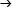

Neil Johnson是迈阿密大学佛罗里达州跨学科复杂性研究小组的负责人。他曾是牛津大学物理学教授和复杂性研究合作项目的联合主任。他从事各种现实世界复杂系统的研究，著有《金融市场复杂性》(牛津大学出版社，2003)。他喜欢生活中复杂的事物，比如拥挤的酒吧和下班回家最快的路线。
Oneworld图书
首次精装版由oneworld出版社出版
原名《两个人的公司，三个就是复杂性》2007年
首次贸易平装版《简单复杂》2009年
2009年、2010年重印
本电子版由Oneworld出版社2011年出版
版权所有 © Neil Johnson 2007
保留所有权利
伯尔尼公约版权
本书CIP记录可从
英国图书馆获取
ISBN 978–1–78074–049–2
排版：印度特里凡得琅Jayvee公司
封面设计：D. R. ink
Oneworld出版社
185 Banbury Road
Oxford OX2 7AR
England
了解更多Oneworld信息。加入我们的邮件列表，了解我们的最新书籍和特别优惠：
第一部分：复杂性科学究竟是什么？
1.1 某种程度的定义
1.2 复杂性实战
1.3 为什么我自己的生活如此复杂？
1.4 复杂性的关键组成部分
1.5 复杂性：所有科学的科学
2.1 办公室的另一天
2.2 如果事情会变糟，它们很可能会变糟
2.3 我们需要反馈
2.4 生命只是秩序的一个小口袋
2.5 我们宇宙黯淡的未来
2.6 空气，到处都是空气——我们希望如此
2.7 我们有偏见的世界
3.1 处理办公室动态
3.2 系统性实习生和粗心的实习生
3.3 别担心，这只是混沌
3.4 如果我记得正确，我生活在边缘
3.5 有音乐，然后是其他一切
3.6 当我不看的时候会发生什么？
4.1 我是一个人，不是一个粒子
4.2 感谢上帝今天是星期五
4.3 知道获胜意味着什么
4.4 去酒吧，还是不去酒吧？
4.5 人群和反人群
4.6 另一个令人沮丧的经历
4.7 进化管理：设计未来
5.1 了解我，了解你
5.2 小世界、大世界和中间世界
5.3 网络的重要性
5.4 事物如何增长：真的都在基因中吗？
5.5 看钱长在树上
5.6 全球化：公平vs效率
5.7 迄今为止的故事
第二部分：复杂性科学能为我做什么？
6.1 涨的必跌：但什么时候？
6.2 现有金融理论的问题——或者说行走方式
6.3 沿着华尔街的复杂漫步
6.4 从酒吧到市场
6.5 小心，我们要崩盘了
6.6 预测未来
6.7 新闻、谣言和恐怖主义
7.1 回到我们的路线
7.2 时间就是金钱
7.3 创意拥堵收费
7.4 不同形状，相同功能
7.5 我应该留在自己的水平吗？
8.1 完美的一对
8.2 虚拟约会
8.3 放射性关系
8.4 你的超级约会来了
8.5 更复杂的约会场景
8.6 狼、狗和羊
9.1 战争与复杂性
9.2 战争法则
9.3 现代战争和恐怖主义背后的通用模式
9.4 现代战争的复杂系统模型
9.5 攻击的时机
10.1 天生杀手
10.2 从社区到阶级
10.3 孩子、感冒和传染
10.4 癌症：如何饿死肿瘤？
10.5 摊牌：超级病菌vs免疫系统
11.1 爱因斯坦的诡异性
11.2 三个是人群，但两个也是
11.3 植物、细菌和大脑的秘密纳米级生活
11.4 量子博弈
11.5 多个错误可以成就一个正确
12.1 物理学家的不充分无限
12.2 未来是光明的，未来是复杂的
A. 复杂性、复杂系统和研究中心
B. 可下载研究论文
现在是2050年，你正在观看《谁想成为亿万富翁？》。参赛者距离头奖只有一题之遥。题目出现了：“科学家们在21世纪初开始发展的理论叫什么名字？这个理论帮助世界克服了交通拥堵、金融市场崩盘、恐怖主义袭击、流行病毒和癌症？”参赛者简直不敢相信自己的运气。多么简单的问题！但他太紧张了，头脑暂时一片空白。他开始考虑选项A：“这些都仍然是未解决的问题”——但很快意识到这是个愚蠢的答案。相反，他使用了最后一个求助机会——询问观众。观众一致且立即选择了选项B：“复杂性理论(Theory of Complexity)”。毫不犹豫地，他选择了选项B。主持人递给他支票，世界又多了一位亿万富翁。
纯粹的幻想？也许不是。
在这本书中，我们将踏上探索复杂性(Complexity)核心的旅程，这是一门新兴科学，有望引发从医学和生物学到经济学和社会学等各个领域的下一轮重大进展浪潮。复杂性科学还有望解决我们作为个人和社会面临的各种重要问题。因此，它注定会渗透到我们生活的方方面面。
然而，有一个问题。我们还没有一个完全成熟的复杂性”理论”。相反，我将使用这本书在一个共同框架内汇集这样一个理论的所有可能成分，然后在这个相同的共同框架内分析各种现实世界的应用。然后需要来自未来的某个人——也许是这本书的年轻读者之一——最终将所有这些片段拼合在一起。
复杂性科学是一把最好意义上的双刃剑。它真正是”大科学”，因为它体现了学术界一些最困难、最基础和最具挑战性的开放问题。然而，它也设法概括了我们每天面临的主要实际问题，从我们的个人生活和健康，到全球安全。制作比萨饼是复杂的(complicated)，但不是复杂性的(complex)。填写纳税申报表或修补自行车爆胎也是如此。只要按照说明一步一步来，你最终就能从开始到结束而不会有太多麻烦。但想象一下试图同时做这三件事。更糟糕的是，假设你在一项任务中遵循的步骤序列实际上取决于其他两项任务的进展情况。困难吗？好吧，你现在对复杂性(Complexity)的含义有了一些了解。考虑到这一点，现在用一个情况来替代这三个相互关联的任务，在这种情况下，三个相互关联的人各自试图遵循自己的直觉和策略，同时对其他人的行为做出反应。这就给出了复杂性(Complexity)可能如何在我们周围的日常生活中出现的想法。
在我写这本书的时候，我脑海中有以下关于其目标的”愿望清单”：
- 提供一本广泛的读者群体都想读、都会喜欢读的书——无论年龄、背景或科学知识水平如何。
- 向读者介绍复杂性科学能够证明其价值的各种令人兴奋的现实世界场景。
- 提供我”从未拥有但一直需要”的关于复杂性(Complexity)的书。换句话说，为这场重要的科学革命提供一个易读而全面的指南。
- 提供一本我的孩子们能读的书——或者更确切地说，一本他们实际上会选择自己阅读的书。这是一个非常重要的目标，因为复杂性(Complexity)很可能成为未来几代人感兴趣的主要科学。
- 提供一本在飞机或公交车上读起来就像在图书馆里一样可读的书。因此，它在短时间内阅读时也应该有意义。
- 为专业科学家、经济学家和政策制定者提供一本书，让他们对自己领域的开放问题有新的视角，并帮助激发新的基于复杂性的跨学科研究项目。
然而，当我完成这本书并将其提供给潜在读者时，我意识到上述愿望清单本质上可以简化为一项：我希望你喜欢阅读这本书，并且它可能为你提供新的思考和见解，来应对我们生活的复杂世界，以及我们的孩子将继承的世界。
关于这本书的内容和布局，有一些实用性问题我想解释一下。语言、例子和类比保持简单，因为这本书的重点是解释复杂性科学是什么，以及为什么对我们所有人都如此重要。因此，我避免在正文中过多深入细节。相反，附录描述了如何获得本书讨论所基于的技术研究论文，并给出了包含世界各地复杂性研究额外信息的互联网网站列表。话虽如此，我不会在我认为相关的所有主题上退缩。本书的第一部分带我们了解复杂性的理论基础，而第二部分深入研究其现实世界的应用。有些领域才刚刚开始被探索，对于提出的问题很少有答案。从历史上其他科学革命的角度来看，这似乎是理所当然的。然而，我们在这里谈论的不是历史——相反，我们在看的是在新学科前沿出现的工作。出于这个原因，我们将重点关注这种研究的发展方向，而不是它的过去。
但是为什么你应该相信我对复杂性的描述？这是一个至关重要的问题，因为复杂性科学仍在发展中，其潜在应用也在探索中。不幸的是，大众媒体中许多关于复杂性的描述都是二手的，即它们通常是由那些很少或根本没有对复杂性进行过研究的人撰写的，而是在报告他们对其他人工作的解释。鉴于该领域相对不成熟的性质，我认为这种间接的解释可能是危险的。因此，我将基于我自己的研究小组在复杂性方面的经验来构建本书的内容。这有各种优势：(i) 它反映了我对复杂性领域的理解；(ii) 它代表了我认为最相关和重要的主题；(iii) 它有希望让读者体验到在如此具有挑战性的研究领域中处于”最前沿”是什么感觉；(iv) 它确保任何读者都可以直接质疑我提出的任何主张，并可以要求得到有根据的答案。为了促进这种公众监督的过程，在附录的后半部分提供了相关科学研究报告的完整清单。我也鼓励任何希望通过电子邮件向我提问的读者这样做，邮箱地址是 n.johnson@physics.ox.ac.uk
最后，我想最诚挚地感谢以下极具天赋的科学家，我有幸与他们在复杂性方面保持持续的互动：Pak Ming Hui、Luis Quiroga、Ferney Rodriguez、Mike Spagat、Jorge Restrepo、Elvira Maria Restrepo、Roberto Zarama、Derek Abbott、Chiu Fan Lee、Tim Jarrett、Alexandra Olaya Castro、David Smith、Sean Gourley、Sehyo Charley Choe、Douglas Ashton、Mark McDonald、Omer Suleman、Nachi Gupta、Nick Jones、Ben Burnett、Alex Dixon、Tom Cox、Juan Pablo Calderon、Juan Camilo Bohorquez、Dan Reinstein、Mark Rondeau、Paul Summers、Stacy Williams、Dan Fenn、Richard Ecob、Adrian Flitney、Matt Berryman、Mark Fricker、Philip Maini、Sam Howison、Tim Halpin-Healy、David Wolpert 和 Kagan Tumer。特别是，我想特别提到 Felix Reed-Tsochas 和 Janet Efsthatiou，他们也是牛津大学跨学科复杂系统研究小组的共同主任。上述许多科学家在本书讨论的研究中发挥了基础性作用——我已在适当的地方明确指出了他们的贡献。我也非常感谢 Oneworld Publications 的 Marsha Filion，她对如何完善手稿提出了建设性的意见——也感谢我的母亲和父亲温和地鼓励我行动起来并最终完成它。
我想向 Elvira Maria、Daniela、Nicholas 和 Dylan 表达我最深的感谢。感谢你们在准备这本书期间容忍一个非常复杂的丈夫/父亲，感谢你们推迟了去年的圣诞节。
英国，牛津
查阅许多词典，你会发现复杂性的定义大致是”复杂系统所表现出的行为”。然后查找”复杂系统”，你可能会看到”行为表现出复杂性的系统”。那么这是怎么回事？不幸的是，复杂性并不容易定义。更糟糕的是，它对不同的人可能意味着不同的事情。即使在科学家中，也没有复杂性的唯一定义。相反，复杂性的科学概念——因此也包括复杂系统——传统上是通过科学家认为复杂的现实世界系统的特定例子来传达的。
本书将通过深入探讨连接所有现实世界复杂系统的核心要素，消除复杂性中的”复杂”。我们将揭示使某个事物复杂而不仅仅是复杂化的神奇成分，并展示复杂性是如何深深根植于我们自己的日常生活中的。我们还将看到为什么复杂性将彻底革命我们对科学的理解，并帮助解决整个社会面临的一些最具挑战性的问题。
复杂性可以用这样的短语来概括：“两人为伴，三人成群”。换句话说，复杂性科学可以被看作是对从相互作用对象集合中涌现现象的研究——而群体是这种涌现现象(emergent phenomenon)的完美例子，因为它是从相互作用的人群集合中涌现的现象。我们只需看看世界历史就会意识到，它充满了由人类群体行为驱动的重大事件。群体的日常例子包括通勤者、金融市场交易员、人体细胞或叛乱分子的集合——而涌现的群体类现象则是交通堵塞、市场崩溃、癌症肿瘤和游击战。即使是极端天气条件，如洪水、热浪、飓风和干旱，也可以被视为一种群体效应，因为它们是由以海洋、云、风和空气湿度形式存在的水和空气”包”的集体行为涌现出来的。如果我们再加上人类的集体行动——特别是人类活动造成的环境变化——我们就会产生被称为”全球变暖”的有争议的涌现现象。
在大多数现实世界的复杂性(Complexity)例子的核心，是一群对象竞争某种有限资源的情况——例如，食物、空间、能量、权力或财富。在这种情况下，群体的出现可能会产生非常重要的实际后果。例如，在金融市场或房地产市场中，希望出售的人群自发形成——因此实际上是在竞争买家——可能导致市场崩溃，其中价格在短时间内急剧下跌。一个相关的群体现象发生在通勤者之间，他们同时竞争特定道路上的空间。这导致了交通堵塞，这是市场崩溃的交通等价物。其他例子包括互联网过载和电力中断，其中用户同时决定访问，因此耗尽了特定计算机系统或电力网络的可用资源。甚至战争和恐怖主义都可以被视为不同群体的集体暴力行为，他们为了控制相同的资源而战斗，例如土地或政治权力。
复杂性科学的圣杯(Holy Grail)是理解、预测和控制这种涌现现象——特别是潜在的灾难性类群体效应，如市场崩溃、交通堵塞、流行病、癌症等疾病、人类冲突和环境变化。它们在某种程度上是可预测的，还是只是毫无预警地突然出现？它们可以被控制、操纵甚至避免吗？
这些涌现现象的显著特点是，它们可以在没有任何中央控制器或协调者的情况下出现。想想某个中央控制器为了能够重现特定的交通堵塞实际需要的协调和沟通水平。换句话说，想象一下他必须打多少个手机电话来确保所有司机同时在同一条路上，并且呈现一个特定的模式。这根本无法可靠地完成。这代表了复杂系统(Complex Systems)的一个普遍特征：涌现现象的出现不需要”看不见的手”。相反，对象集合能够自我组织，使得现象自动出现——就像魔法一样。
这些涌现现象的纯粹力量和动量也可能相当显著。我们都知道被群体心态(mob mentality)的起伏席卷是多么容易——无论是有意还是无意。最近几十年，如1970年代，在时尚和发型方面带来了文化海啸：想想喇叭裤和松糕鞋。在1990年代，我们经历了臭名昭著的网络公司繁荣，公司员工同意以股票期权而不是现金作为报酬——结果在2000年4月左右泡沫破裂时发现自己身无分文。谁没有过这样的经历：在繁忙的街道上在人群中漫步，却发现自己与同伴分离，走向一个你实际上不想去的方向？我们每个人似乎都有一种与生俱来的冲动去加入群体——但从我们个人的角度来看，这可能不是最好的决定。想想出售或购买房屋或汽车。如果你在别人都在买的时候卖，反之亦然，你会得到更好的价格。
不仅仅是人群展现涌现现象。动物、昆虫和鱼类王国充满了自组织的例子：从蚂蚁轨迹和黄蜂群到鸟群和鱼群。事实上，生物学正坐在这种集体现象的宝库上——从免疫系统对入侵病毒的集体反应，到驱动许多重要生物过程的细胞间通信和信号传导。所有这些效应都代表涌现现象这一事实解释了为什么如此多不同的学科都对复杂性产生兴趣。
更贴近每个人的个人关注——实际上是担忧——的是人类健康和医学领域。这是复杂性实际应用的一个典型例子。我们的免疫系统由一系列应对入侵病毒的防御机制组成。然而，就像交通、股票市场和互联网一样，系统可能自己出错——例如，当免疫系统的集体反应最终攻击健康组织时。因此，理解我们能够在多大程度上预测、管理甚至控制复杂系统，从人类健康的角度来看具有特殊重要性。实际上，这甚至可能导致新的治疗形式，其中身体的集体反应被用来处理特定器官中的特定问题，而不是依赖于某一特定的靶向治疗。癌症肿瘤是群体效应出错的一个特别可怕的例子。细胞不是保持控制状态，而是开始不受控制地增殖——正如其他复杂系统现象如交通堵塞一样，很难知道该做什么来减小肿瘤的大小而不造成一些更具破坏性的次级效应。例如，任何涉及破坏肿瘤的治疗可能间接导致最适合生存的、最恶性的细胞存活下来。
对复杂性的兴趣并不仅限于人、动物或细胞等自然对象。对象集合无需某个中央控制器就能产生涌现现象(emergent phenomena)的能力，已经吸引了NASA研究人员的关注。特别是，卡根·图默(Kagan Tumer)和大卫·沃尔珀特(David Wolpert)一直在加利福尼亚州山景城的埃姆斯研究实验室领导一个研究团队，该团队正在研究机器集合中的涌现现象。所讨论的机器可能是机器人、卫星，甚至是微型航天器。例如，NASA正在研究这样一种可能性：相对简单的机器人集合可以用来快速高效地探索行星表面——而不是使用一台大型且复杂得多的机器。他们这样做是有充分理由的。如果这个集合中的一个机器人发生故障，仍然有很多其他机器人可用。相比之下，大型机器中的一次故障可能导致一项非常昂贵的任务立即终止。这也解释了NASA对探索简单卫星集合特性的兴趣，而不是一颗大型复杂卫星——以及对微型航天器集合的兴趣，而不是一个大得多的单体。
但NASA对此类研究感兴趣还有另一个更加引人入胜的原因。大多数NASA任务可能涉及向遥远的行星发送机器——而在如此遥远的距离上很难维持可靠的通信信道。因此，如果NASA工程师能够坐下来，放松一下，让行星上的机器自己解决问题，那将是非常棒的。这当然会让机器面临与我们通过电话与一群朋友安排午餐约会时相同的困难。从午餐约会问题通常发生的情况来看，你可能会认为其中一台机器会简单地充当本地协调员，逐一检查每台机器的位置和可用性，然后协调它们的行动。这听起来应该运行良好——然而，机器集合将被降级为具有与单个复杂机器相同的脆弱性。如果本地协调员发生故障，任务再次结束。相反，这种机器集合的”杀手级应用”方面，以及NASA对此类复杂系统(Complex Systems)的兴趣所在，是机器不需要本地协调就能做好工作。事实证明，如果这些对象不是由某个单一控制器协调，而是为某种有限资源竞争，那么精心选择的此类对象集合作为一个群体可以工作得更好——这实际上就是NASA的情况，因为在行星表面的给定区域内，通常可供拾取的松散岩石相对较少。
繁忙的购物中心提供了一个很好的日常例子，说明为什么这样一个自私机器的集合会如此有用。想象你掉了一张一百美元的钞票。你组织了一个搜索队，声明找到钞票时大家会分享这笔钱。如果搜索队很大，你将很难协调每个人的行动——因此你可能永远找不到钞票。相比之下，如果你告诉每个人谁找到钞票就归谁，他们个人的自私驱动可能会如此强烈，以至于钞票很快就被找到。从掉落的钞票就像可用的岩石这个意义上，我们可以看到自私机器的集体行动可以用来解决相当复杂的搜索问题。
甚至有研究小组在调查这样的机器集合如何通过允许单个机器自行适应和进化来设计自己。这项研究从涉及人类集合的现实世界情况中借鉴想法。毕竟，在金融市场环境中行动的人类，除了以自私的方式竞争有限资源外，什么也没做——就像机器一样。这同样适用于交通中的司机：正是因为他们竞争道路上的空间，我们通常看到汽车以某种相当规律的模式分布的安排。
现在，如果你正在飞机上阅读这本书，你可能想要深呼吸一下。机载计算机系统日益高科技的特性意味着每一代下一代飞机本身将是一个复杂系统——一个需要管理和控制的复杂系统。但除了创造挑战本身之外，复杂性的想法正被利用来开发此类飞机的新颖设计。例如，斯坦福大学的伊兰·克鲁(Ilan Kroo)和同事们一直在研究在传统飞机机翼后部排列一系列机器人微襟翼。这种设计使得襟翼根据飞机的计划轨迹竞争在正确的时间朝向正确的方向——就像我们自私的购物者会竞争在正确的时间到达正确的地点以拾取丢失的钞票一样。因此，在这种情况下作为飞机飞行员的中央控制器将不再需要。现在，无飞行员飞机的可能性可能听起来很可怕，但显然许多人确实愿意乘坐这样的飞机，只要它便宜——只要他们的行李按时到达。
当我们在空中时，空中条件如何？更普遍地说，我们自身的集体行为对环境和天气有什么影响？对日益稀缺的自然资源的全球竞争正导致污染和森林砍伐水平的增加，这些反过来可能影响我们的气候。天气是大气和海洋之间复杂持续相互作用的结果，它们通过水流、风和空气湿度相互连接。洪水、飓风和干旱代表了从这种集体行为中出现的极端现象。尽管科学家知道描述单个空气和水分子的数学，但要构建出数十亿个分子在全球范围内混合时会做什么的图景是极其复杂的。现在在此基础上加上人类的集体行动，你就会遇到全球变暖这个涌现的怪物——特别是评估地球气候如何受其居民集体行动影响的复杂问题，以及然后能对此做些什么。
这就是复杂性的实际应用——从技术到健康，再到日常生活。但它在基础科学，特别是基础物理学中发挥任何作用吗？事实证明，它确实发挥作用——而且是以一种非常重要的方式。当你深入到原子层面时，涌现现象的范围简直令人叹为观止。电子是带负电的粒子，通常围绕原子中的原子核运行。然而，如果你将大量这样的电子聚集在一起，你会发现大量奇异的群体效应：从超导性到所谓的分数量子霍尔效应(Fractional Quantum Hall Effect)和量子相变(Quantum Phase Transitions)等效应。
这还没有结束。如果我们只取两个粒子，如电子，它们可以表现出一种特殊类型的”量子群体效应”，称为纠缠(entanglement)。这是一种如此奇异的涌现现象，以至于让爱因斯坦困惑了一生。事实上，这种量子群体背后的信息处理能力如此强大，以至于它已经引发了量子计算机的提案，这是一种根本上新型的计算机，比任何传统PC都领先若干光年；量子密码学，可以产生完全安全的密码；以及量子传送(quantum teleportation)。甚至存在这样的可能性：大自然母亲自己已经在利用这些效应——但更多内容见第11章。
甚至爱因斯坦的时空和黑洞的基础物理学也无法逃脱复杂性的隐藏控制。爱因斯坦相对论理论的核心思想是空间和时间耦合在一起。同样意思的另一种说法是，两块空间和时间可以通过在两者之间传递的光相互作用。因此，时空的整个结构是一个由相互连接的部分组成的复杂网络。在第5章中，我们将更仔细地看一般的网络——可以说，它们只是表示一组相互作用的对象的另一种方式，即它们只是表示复杂系统的另一种方式。
在所有这些例子中，出现的类似群体现象的确切性质将取决于单个对象如何相互作用以及它们的相互连接程度。仅基于单个对象的属性来推断这些涌现现象的性质是极其困难的，如果不是不可能的话。因此，几乎可以确定的是，每一个涉及电子等基本量子粒子的新群体效应的发现，都会获得诺贝尔物理学奖。即使我们理解单个电子的属性，例如，来自它们集合的相应涌现现象往往如此令人惊讶，以至于每一个本身都代表着一个了不起的新发现。在日常层面上，我们知道市场崩盘和交通堵塞也可能令人惊讶——无论是在它们的形式上，还是在它们何时发生以及持续多长时间方面。鉴于预测什么群体效应会出现、在什么条件下以及何时出现的困难，我们可以开始看到复杂性科学如何也可以被称为惊喜背后的科学。
因此，似乎复杂性在科学、医学和我们的日常世界中有许多可能的应用。无论你是对基础物理学、生物学、人类健康感兴趣，还是只是想在下班回家的路上避免交通堵塞，复杂性都是关键。
现在是下午6点。你正要下班——而你脑海中唯一的想法就是快点回家。但你应该走哪条路？事实证明你有选择。但其他每个人也有选择。这就是关键点：最好的路线是最不拥挤的——但正是其他每个人的集体决定决定了可能路线中哪一条最终成为最不拥挤的。实际上，你不是在决定回家的路线——你是在试图猜透其他每个人。换句话说，你正在试图在道路空间竞争中猜透人群。当然，其他每个人也在试图做同样的事情。回想我们之前的讨论，这种日常情况代表了一个理想的复杂系统候选者，因为它包含了一群竞争有限资源（道路空间）的对象（司机）。
但你复杂的生活还没有结束。你最终到了家，决定想要出去放松一下。你想去一家特定的酒吧——但让我们假设这家酒吧容量有限，所以不是每个到场的人都能真正进入。你再次发现自己必须决定做出哪种选择：你是努力准备好，到达酒吧并承担可能进不去的风险？还是呆在家里并承担错过一个美好夜晚的风险？由于酒吧容量有限，但又如此受欢迎以至于有很多潜在的参与者，你再次试图超越群体的判断。特别是，你试图预测酒吧是否会超容量，因此你应该采取什么行动。其他人也在试图做同样的事情。所以这再次是一个理想的复杂系统候选，因为它包含一群对象（酒吧客人）竞争有限资源（酒吧中的位置）。
假设你决定不去。相反，你会在家做一顿美餐。但你需要买食物。你应该去哪里？有两家超市，一家叫”零”，另一家叫”一”，位于城镇的两侧。哪家会最不拥挤？这又是同样的有限资源竞争情况——在这种情况下，是市场中的空间。
当你用餐后决定上网查看一年前买的股票时，情况并没有好转。你在屏幕上调出价格图表。股票价格涨跌不定——但这告诉了你什么？你应该买更多股票，还是卖掉你已经拥有的股票？假设你决定卖出。如果其他人也决定卖出，这些股票就会突然供过于求。那么没有人会为它们付给你很多钱。另一方面，如果你能在有很多买家的时候卖出，你就会很高兴。这同样适用于在任何其他市场上出售东西，从房地产到eBay。即使你可能基于某种长期偏好或需求进行买卖，确切何时买卖的决定是一个战略性的——并且被预测其他人将要做什么的需要所主导。换句话说，你必须再次试图超越群体的判断。其他人也在试图做同样的事情，显然不是每个人都能赢。结果，我们再次有了复杂性的理想候选系统，因为我们有一群对象（投资者）竞争有限资源（有利价格）。
当你开始思考时，在我们的日常生活中有很多例子，以某种形式，我们间接地试图超越其他人的判断。不幸的是，对我们所有人来说，在这种情况下的正确行动是由其他人实际做什么决定的。更糟糕的是，这种日常问题随着每一天的过去而重复又重复。这然后诱使我们试图从过去学习，因此调整我们的策略以试图改善我们胜出的机会。换句话说，我们的日常生活变成了一系列持续的游戏——某种多重的”老鼠赛跑”。
这种常见的日常情况，其中一群对象（人们）反复竞争某种有限资源，极好地说明了日常生活的复杂性——这一事实首先由新墨西哥州圣菲研究所的布赖恩·阿瑟(Brian Arthur)指出，后来由约翰·卡斯蒂(John Casti)指出。但更值得注意的是，它还为我们提供了一个通用的复杂系统，可以适应描述广泛的科学、医学和技术场景。我们已经在第1.2节中讨论了与机器集合设计相关的各种应用——当我们进一步阅读本书时，我们将看到同样的通用设置以各种形式重新出现。
对复杂性没有严格的定义。但这并不是那么糟糕——毕竟，很难定义像”幸福”这样的词，但我们都知道它的特征是什么。我们将以类似的方式通过描述复杂系统应该具有的特征，并观察它应该表现出的行为来描述复杂性。这可能听起来很抽象——但幸运的是，我们讨论过的日常场景直接来拯救我们。实际上，这些特征正是使我们自己的日常生活如此复杂的特征。
大多数复杂性研究者都会同意，任何候选复杂系统都应该具有以下大部分或全部成分：
系统包含许多相互作用的对象或”智能体”的集合。 在市场的情况下，这些是交易者或投资者。在交通的情况下，这些是司机。通常科学界将这些对象称为智能体(agents)。这些智能体之间的相互作用可能是因为智能体在物理上彼此接近，或者因为它们是某种群体的成员，或者因为它们共享一些共同信息。例如，智能体可能通过他们共享的一些公共信息联系在一起——比如关注同一股票价格图表的投资者，或者收听同一交通广播报告的通勤者。另一方面，一些智能体可能通过私人信息联系在一起，比如两个恰好是朋友的投资者通过电话分享私人信息。就智能体通过相互作用联系在一起的程度而言，它们也可以被认为是形成网络的一部分。因此，网络已经成为复杂科学的一个组成部分，与智能体集合的研究一起。事实上，对于社区中的许多科学家来说，复杂性的研究就等同于智能体和网络的共同研究。
这些对象的行为受到记忆或”反馈”的影响。 这意味着过去的某些东西影响现在的某些东西，或者在一个位置发生的某些东西影响在另一个位置发生的事情——换句话说，是一种连锁反应效应。例如，如果你碰巧在过去几个晚上都走0号路线回家，而它总是过度拥挤，你可能会选择今晚改走1号路线。因此，你使用了过去的信息来影响你现在的决定——换句话说，过去被反馈到你现在的决定中。当然，这种反馈的性质可能会随时间而改变。例如，如果是一周的开始而不是结束，你可能不太关心过去的结果。每个人都有这种记忆的最终结果可能是整个系统也会记住。换句话说，在交通或股市中出现特定的全局模式或序列。
对象可以根据其历史调整策略。 这简单地意味着智能体可以自己调整其行为，希望改善其表现。
系统通常是”开放的”。 这意味着系统可以受到其环境的影响，就像市场可能受到关于特定公司收益的外部新闻影响一样——或者交通受到特定道路关闭的影响。相比之下，封闭系统意味着一个不与外界接触的系统——有点像沙漠岛上没有互联网的办公室。正如听起来的那样，这种真正封闭的系统是罕见的。更常见的是以某种方式与外界接触的系统。事实上，唯一真正封闭的系统是整个宇宙。问题是，正如我们将在第2章中看到的，物理学中的大多数基本理论只适用于封闭系统。这是复杂系统不仅对工程师、生物学家和社会科学家，而且对理论物理学家也如此有趣的原因之一。
由此产生的系统——复杂系统——将表现出以下所有复杂性特征的行为：
系统看起来是”活着的”。 系统以高度非平凡且通常复杂的方式进化，由在反馈影响下相互作用和适应的智能体生态系统驱动。例如，金融分析师经常谈论市场，就好像它是一个有生命、会呼吸的对象，给它分配诸如悲观或熊市，以及自信或牛市等词汇。
系统表现出通常令人惊讶且可能极端的涌现现象。 在科学术语中，系统远离平衡态(equilibrium)。这基本上意味着任何事情都可能发生——如果你等得足够久，通常就会发生。例如，所有市场最终都会显示某种崩盘，所有交通系统最终都会出现某种堵塞。这些现象在出现时间上通常是意外的——因此是惊讶的一个方面。但系统也倾向于表现出本身令人惊讶的涌现现象(emergent phenomena)，因为基于对个体对象属性的了解无法预测它们。例如，无论对水分子属性有多少了解，都无法预测冰山会形成并在泰坦尼克号经过时击沉它。就市场崩盘和交通堵塞等涌现现象而言，一个重要问题涉及这些极端事件是否可能源于某种错误喜剧，就像一个多米诺骨牌撞倒另一个一样。例如，在动画电影《机器人总动员》中，一个小多米诺骨牌倒下最终导致多米诺骨牌的潮汐波——一种多米诺海啸——比格韦尔先生和其他机器人最终在上面冲浪。
涌现现象通常在没有任何”看不见的手”或中央控制器的情况下出现。 换句话说，复杂系统可以完全靠自己以复杂的方式进化。因此，复杂系统通常被认为大于其各部分的总和，这只是”两人成伴，三人成群”的另一种说法。鉴于宇宙本身在某种程度上是一个复杂系统，这一特征对所谓智能设计(Intelligent Design)的支持者造成了毁灭性的打击。
该系统显示出有序和无序行为的复杂混合。 例如，交通堵塞在特定时间和道路网络的特定地点出现，然后又消失。更普遍地说，所有复杂系统(Complex Systems)似乎都能够自发地在有序和无序之间移动。换句话说，它们似乎表现出有序的局部区域。我们将在本书后面回到这一点。
但复杂性的附加价值是什么？毕竟，复杂性科学(Complexity Science)只有在能够增加新见解或导致新发现时才真正有价值——例如，通过揭示以前被认为不相关的现象之间的联系。如果我们只是重新包装我们已经知道的东西，那么发明一个新名称就没有意义了。例如，你可能认为科学家传统上研究的所有事物都已经足够复杂，足以被称为复杂性科学。正如我们将在后面章节中看到的，科学家已经研究的许多系统根据我们的列表确实可以被标记为复杂的。然而，科学家传统上研究这些系统的方式并没有使用复杂性科学的任何见解。特别是，这些系统之间的联系还没有得到适当的探索——特别是来自不同学科（如生物学和社会学）的系统之间的联系。实际上，看看从部分理解一个系统（比如来自生物学）中获得的任何见解是否能帮助我们在完全不同的学科（比如经济学）中取得进展是很有趣的。这方面的一个特殊例子是牛津大学马克·弗里克(Mark Fricker)、珍妮特·埃夫斯塔修(Janet Efstathiou)和菲利克斯·里德-措哈斯(Felix Reed-Tsochas)正在进行的研究，他们分析真菌中的营养供应线，以了解是否可以为零售贸易中的供应链设计学到经验教训。
在日常语境中，忽视所谓无关系统之间相似性的负面影响，类似于某人成为纽约、华盛顿和波士顿详细文化生活的专家——但从未意识到这些城市因其在美国东海岸的位置而具有共同文化。不幸的是，这种搭桥工作在科学语境中加倍困难，因为没有一个科学家能够了解所有其他可能相关研究领域的细节。这不仅阻碍了整个复杂性科学的进步，也降低了我们在理解重要现实世界系统方面取得新突破的机会。
传统物理学的大部分内容都在尝试理解我们所看到事物内部的微观细节。这导致物理学家打开原子来观察内部的部分，然后打开这些部分来看部分内部的部分——最终达到夸克(quarks)的层次。这当然很复杂——但这种还原论(reductionist)方法在某种意义上与复杂性的本质相反。复杂性不是把事物拆开来找出组成部分是什么，而是关注相对简单的组件集合能够出现什么新现象。换句话说，复杂性关注的是从本身可能相当简单的对象集合的相互作用中可能出现的复杂和令人惊讶的事物。因此，驱动复杂性科学的哲学问题与乐高(LEGO)玩具制造商的问题相似：从一组相当简单的对象开始，我能用它们制造什么，我能让它们做什么复杂和令人惊讶的事情？如果我用另一个替换一个部件，这是否会改变我能制造的事物类型？如果我缺少几个部件，或者我添加几个专业部件，这如何改变可以构建的可能事物的范围？
进一步说，寻求复杂性定量理论背后的基本哲学是，我们不需要对组成对象有充分的理解就能理解它们的集合可能做什么。以简单方式相互作用的简单部分可能导致丰富多样的现实结果——这就是复杂性的本质。
因此，复杂性代表了对理解世界的传统还原论方法的一记耳光。例如，即使详细了解汽车发动机、颜色和形状的规格，在试图预测新道路系统中何时何地会出现交通堵塞时也是无用的。同样，了解拥挤酒吧中个人的性格对于了解可能发生什么大规模斗殴几乎没有帮助。在医学科学中，对单个脑细胞的任何理解都不太可能帮助我们了解如何预防或治愈阿尔茨海默病(Alzheimer’s disease)。
那么我们到目前为止得到了什么？我们已经看到为什么复杂性不仅对科学的许多领域很重要，而且对许多其他学科乃至日常生活都很重要。特别是，我们已经看到它在建立来自不同科学学科的以前无关现象之间联系方面的作用可能是非常重要的。因此，我们可以合理地将复杂性视为一种总括性科学——甚至是所有科学的科学。
复杂系统的一个明显特征是，诸如交通或金融市场这样的特定系统会表现出令人惊讶、极端且自发产生的涌现现象——想想交通堵塞或金融市场崩盘就知道了。虽然某些交通堵塞和市场崩盘确实是由特定的外部事件触发的（例如，道路事故或某家公司破产的消息），但更多情况下，它们的出现或消失都没有明显的原因。特别是，它们不是由在后台操作的某种神秘”看不见的手”设计或控制的。那么，是什么让它们自发地出现和消失呢？
我们都有过这样的经历：在看似畅通的高速公路上愉快地行驶，却突然莫名其妙地陷入交通堵塞。然后，同样神秘地，堵塞消失了。我们继续行驶，寻找堵塞的明显原因，比如事故——但什么都没有。同样的情况也发生在金融市场中，某次市场崩盘的原因能够归因于特定事件或一系列事件的情况实际上相当罕见。实际上，对于每个说某次崩盘原因是X的金融专家，你都能找到一个说原因是Y的专家。例如，在2000年4月左右破裂的互联网泡沫据说是”注定会发生的”。但为什么它在那个特定时间发生？如果这些专家如此确信它会发生，为什么他们无法事先预测它？
复杂系统(Complex System)这种产生自身行为变化的显著能力，意味着复杂系统可能看起来相当愉快地以相当随机的方式慢跑着——然后突然表现出类似于交通堵塞或市场崩盘的极端行为。许多现实世界的系统都足够复杂，以至于它们也表现出这种极端行为；例如，蜂窝电话网络中数据包的流动扮演着汽车流动的角色，计算机系统中用户的需求扮演着交易者需求的角色。甚至我们自己的身体也足够复杂，可能出现这种极端变化；例如，心脏病发作、癫痫发作、癫痫和免疫系统崩溃，都是身体内突然、自发和意外集体行为的例子。无论我们认为这些现象中哪一个与我们自己的生活最相关，弄清楚什么导致了这种极端行为的根本原因显然非常重要——然后找出我们是否可以预测它、控制它，甚至可能避免它。
但这里有一些非常奇怪的现象。像交通堵塞和市场崩盘这样的现象实际上是相当有序的效应，因为它们涉及一系列原本独立的对象突然以某种相当同步的方式锁定在一起。然而，它们不知何故从交通和市场的日常无序中涌现出来，没有明显的原因——就像凤凰从火焰中升起。例如，交通堵塞的出现意味着大量原本以典型日常交通方式分散在道路各处的汽车，突然都排列成一个单一的、缓慢移动的车流；市场崩盘意味着一个原本充满了以明显随机方式买卖的人的金融市场，突然变成了充满同时决定卖出的人的市场。更重要的是，这种效应可能同样突然地消失。那么，到底发生了什么？
复杂系统能够自发地在有序行为（如交通堵塞或市场崩盘）和典型日常运作的无序之间来回移动，无需任何外部帮助。换句话说，复杂系统可以在无序和有序之间自由移动，然后再回来，因此可以说表现出”有序的口袋”(pockets of order)。这种有序口袋的出现在预测和控制系统方面具有非常重要的意义。它们的出现也相当神秘——毕竟，如果一袋未分类的袜子是一个复杂系统（实际上不是），它就应该能够将自己组织成一堆有序的成对袜子，准备放入衣柜。这是一个美妙的想法，但正如我们都知道的，在像一堆袜子这样简单的东西中，这种情况不会发生。因此，在复杂系统的核心一定有更复杂的事情在进行，我们需要理解。但从实际角度来看，好消息是有序的口袋确实可以在复杂系统中出现，这给了我们希望，可能有一种方法可以部分预测这种系统的未来演化，甚至能够管理或控制它。
这些有序的口袋可以在时间和空间中出现。例如，交通堵塞在特定时间和地点出现，然后消失。市场崩盘也在特定时间和特定世界市场中出现，然后消失。本章的挑战是理解为什么这样的有序口袋会出现。但要做到这一点，我们需要踏上从有序到无序的旅程——还有什么地方比典型的办公室一天更好的开始呢？
为什么整理我们的桌子如此困难？或办公室？或日程安排？为什么即使是最受悉心照料的计算机在使用几个月后，也似乎会遇到各种文件冲突问题？答案很简单：“无序占主导地位”。
让我们更仔细地看看这意味着什么。拿任何一组有序排列的物体为例，比如你办公室里的文件。假设你在工作中非常出色，这些文件很可能会以非常特定的方式排列。想象一下，你的文件柜架子上有两个文件叠成一堆，而你不幸被分配了一个粗心大意的暑期实习生。
图2.1 包含（上）两个标记为A和B的文件和（下）三个标记为A、B和C的文件的堆叠可能排列数量
两个文件，一个架子，一个粗心的实习生：
假设文件标记为A和B。如图2.1所示，这个两文件堆叠只有两种可能的排列：
排列1：文件B在文件A上面
排列2：文件A在文件B上面
对于只有两个文件的这种特殊情况，这两种排列本质上都是有序的。换句话说，如果你粗心的实习生意外地重新排列了你的文件，他能做的最坏的事情就是颠倒顺序。如果你发现文件不是你想要的顺序，只需将堆叠翻转过来即可。
三个文件，一个架子，一个粗心的实习生：
现在让我们想象你的工作稍微忙一点，堆叠中现在有三个文件，而不是两个。假设这些文件标记为A、B和C。坏消息来了：尽管我们只增加了50%的文件数量，但现在可能的排列数量却是三倍之多。这些如图2.1所示，并在下面列出：
排列1：文件C在文件B上面，文件B在文件A上面
排列2：文件B在文件C上面，文件C在文件A上面
排列3：文件A在文件C上面，文件C在文件B上面
排列4：文件C在文件A上面，文件A在文件B上面
排列5：文件B在文件A上面，文件A在文件C上面
排列6：文件A在文件B上面，文件B在文件C上面
因此，从仅有两个文件到三个文件意味着我们从两种可能的排列增加到六种。现在你粗心的实习生可以意外地以六种方式重新排列堆叠。
四个、五个或更多文件会有多少种排列？显然更多，但多多少？事实证明，有一个简单的方法来计算这个数字。假设我们要用三个文件建立一个堆叠。底部有三个可能的文件可供选择（A、B或C）。选择一个——例如A。这样中间就剩下两个可能的文件。再选择一个——例如C。然后只剩一个文件放在顶部——文件B。换句话说，我们在底部有三种可能性，乘以中间的两种，再乘以顶部的一种。用数学术语表示，这给出的可能性总数为：
（底部3个）×（中间2个）×（顶部1个）= 3 × 2 × 1 = 6，如图2.1所示。
超过三个文件，一个架子，一个粗心的实习生：
对于四个文件——标记为A、B、C和D——我们因此有4 × 3 × 2 × 1 = 24种可能的排列。对于五个文件，我们将有5 × 4 × 3 × 2 × 1 = 120种可能的排列。但这听起来像是一个相当不现实的办公室。毕竟，在一堆中有十个文件并不罕见。所以让我们看看十个文件会发生什么。按照上面的同样思路，你可以看到可能的排列数量将是10 × 9 × 8 × 7 × 6 × 5 × 4 × 3 × 2 × 1，结果超过350万。这确实是坏消息，因为这意味着你粗心的实习生可以意外地以超过350万种方式重新排列堆叠！
这给了我们关于物体集合的第一个要点。随着物体数量的增加，可能发生在物体集合上的事情——特别是这些物体的排列数量——很快变得非常大。
现在，想象一下度假前一天，你的老板递给你一堆十个文件。她告诉你她花了一整天时间根据自己的优先级将堆叠整理成特殊顺序。她还告诉你，度假回来后应该立即开始处理它们，从顶部开始。所以你把它们放在桌子上，并严格指示每个人不要碰它们。你去度假了，在偶尔的鸡尾酒帮助下，适当地清空了大脑。回到办公室后，你发现实习生留给你的纸条——“非常抱歉，你不在时我意外地撞翻了你的文件。但我为你重新整理成了整齐的堆叠，所以没有伤害！”没有伤害？有超过350万种可能的排列，而你已经忘记了老板在你度假前精心准备的特定排列。现在想象你试图随机重新排列它们，希望特殊的排列会神奇地出现在你眼前。真正的坏消息来了。假设你在每个排列上花费十秒钟——这意味着你每分钟可以搜索六种排列，因此每小时360种排列。但由于确切的排列数量实际上是3,628,800，你需要大约10,000小时来搜索所有排列——10,000小时意味着即使你不停下来睡觉、吃饭或上厕所，也需要超过一年的时间。所以除非你有一个非常耐心的老板，否则你很可能在找到正确排列之前就失业了。
在上述故事中，我们假设你的实习生意外地把整个文件堆推倒，因此瞬间将文件堆从最大有序状态变为最大无序状态。在许多其他情况下，事物会以更温和的方式在有序和无序之间转换。想象一下，实习生不是一次性把整个文件堆弄倒，而是每天只是随机改变一个文件的位置。回到我们只有三个文件的图片，你可以看到即使只过了几天，新的文件堆也可能与原来的大不相同。诚然，文件堆中的文件越多，这个从有序到无序的过程就需要越长时间——但最终，无序占主导地位。
因此，我们的办公室文件故事告诉我们，将有序的东西弄乱是很容易的，而要重新整理无序的东西则需要很长时间和大量的细心工作。这两个过程各自需要多长时间将取决于是什么在制造无序或重新排序。但有一件事是肯定的：随着时间的推移，有序的事物有着变得无序的自然倾向。相反，无序的事物在没有任何额外帮助的情况下极不可能自我排序。这就是我们对有序和无序感兴趣的原因所在。我们已经确定，像交通或金融市场这样的复杂系统可以自发地从有序转向无序，然后再转回来。同时，我们知道复杂系统包含一系列对象，类似于一堆文件。那么，复杂系统如何能够自行从有序转向无序再转回来，而像文件堆这样简单的东西却不能呢？
复杂系统一定有某种神奇成分——但文件堆或袜子袋没有——因此使相关复杂系统能够完全靠自己从稀薄空气中创造有序。为了帮助我们理解这种神奇成分的本质，我们需要做一个实验：
从你的桌子上拿一把尺子。现在试着让它在你的桌子上直立平衡。不可能。现在试着让它在你伸出的张开手上平衡。同样不可能……除非你不断移动你的手来抵消摆动的尺子。
事实证明，这个尺子问题与我们之前讨论的文件问题非常相似。文件可以很容易地从有序状态转向无序状态，就像桌子上瞬间直立的尺子很容易倒下。但要重新整理文件，或帮助尺子保持直立，都需要一只援助之手。对于文件来说，需要一个非常善良的老板愿意进来重做所有优先级排序的辛苦工作。对于尺子来说，需要熟练操作者的行动来帮助尺子保持直立。
文件和尺子的例子为我们提供了理解为什么复杂系统比文件或袜子等对象集合复杂得多的关键。换句话说，这些例子为我们提供了线索，有助于解释到底是什么让复杂系统如此复杂，而不仅仅是有点复杂。让我们更深入地思考这些例子：你能在手上而不是在桌子上平衡尺子的唯一原因是，你的眼睛注意到了尺子的运动，然后将这些信息传递给你的大脑，大脑再以运动的形式将信息反馈给你的手。文件堆的重新排序也是如此：需要你的老板将她关于各种文件优先级的原始信息反馈到文件堆中。答案就是——反馈——这是在第1章中出现在我们复杂系统关键成分列表中的术语。
正如我们将看到的，反馈可以在给定系统中以各种不同方式产生。它可以内置于对象本身——例如，人类有对过去的记忆，这可以影响他们在当前的决定。或者它可以是从外部输入系统的信息或影响，如平衡棒的情况，或市场中新闻的发布。在交通情况下，它可以是司机通过观察周围汽车或收听广播交通报告获得的信息。
无论它来自哪里，它仍然是反馈——正是反馈使有序能够在不同的方式和不同的时间”介入”。反馈可以在无序的文件堆中创造有序，并可以将翻滚的尺子整理到直立位置。然而，通常很难在特定复杂系统的个体对象层面看到这种反馈操作——因此对外部观察者来说，有序似乎是从稀薄空气中出现的。如果反馈采用信息的形式，这一点尤其正确，因为信息不是有形对象。由于交通中的司机和市场中的交易者不断输入和输出关于自己和他人行动的信息，我们可以开始看到为什么交通堵塞和市场崩盘可能会在没有任何明显原因的情况下从稀薄空气中出现。神奇成分就是信息的反馈。
就我们的有序/无序故事而言，直立的尺子是有序状态，而翻滚到地面的尺子是无序状态。只要你能保持尺子直立，你就成功地将其维持在有序状态。然而，你不能永远这样保持下去。这需要集中注意力，这会让你饥饿——你最终需要吃东西。换句话说，直立尺子有序性的起源是反馈，而这种反馈需要能量的输入。
现在，让我们进一步深入探讨。我们用来为尺子创建反馈的能量，来自我们吃的食物。而我们吃的所有食物都可以追溯到植物。即使是肉类和乳制品也是如此——它们来自本身以植物为食的动物。所以一切都归结于植物——而植物从天空中那个巨大的能量源：太阳，获取它们的能量。换句话说：太阳代表了我们周围观察到的有序区域的根本原因。这实际上是一个相当深刻的表述，因为它意味着太阳是帮助我们抵抗从有序到无序这一总体趋势的因素。即使当我们使用机器和混凝土等材料建造建筑物或创建其他有序结构时也是如此。机器由金属制成，使用汽油运行：而汽油、金属和混凝土都来源于地球上发现的自然资源——这些资源的存在又归功于太阳系，因此归功于太阳。
所以太阳是我们周围看到的有序区域的根本原因。这些有序区域不仅限于文件或直立尺子等无机物体。你居住的城镇就是一个有序区域的例子。它包含许多人，组织成房屋和街道——全部都在由城镇边界定义的单一区域内。进一步说，我们每个人都是分子的集合体，这些分子恰好堆积在空间的特定区域内，即在我们各自身体的范围内。
我们已经看到，像一堆文件这样的物体集合在没有任何反馈的情况下，往往会变得越来越无序。不幸的是，事实证明整个宇宙以及其中的一切——包括我们——也是如此。
让我解释一下这个可怕消息的背景。科学家们迄今为止收集的所有证据都表明宇宙是孤立的。它不接触任何东西，也没有任何东西接触它。最重要的是，没有来自其他宇宙的任何形式的反馈——因此没有”看不见的手”来帮助保持其有序。用技术术语来说，宇宙是一个封闭系统——不幸的是，有一个基本的物理定律表明：封闭系统中的无序程度随着时间的推移而增加。 那么我们能否以此定律为借口来为混乱的办公室开脱呢？既是也不是。基于我们对文件的观察，我们当然可以理解为什么这在办公室环境中是有意义的。然而这个定律只对封闭系统严格成立——而真正的封闭系统是非常罕见的。事实上，宇宙是我们所知的唯一真正的封闭系统。
这个定律告诉我们，无论我们如何努力阻止它发生，整个宇宙正朝着完全无序的方向发展。换句话说，宇宙中的所有物体——最终只是分子的集合——正朝着完全无序的方向发展。简而言之，未来只是一大锅混乱的分子汤。现在，我相信有人在想”我是由分子构成的。那么这也包括我和我的分子吗？“不幸的是，确实如此。事实上，”尘归尘，土归土”这句话很好地概括了整个退化过程。我们最终都会死去，我们的身体将逐渐腐烂，分解成各种碎片，最终分解成构成分子。我们的分子最终会发现自己分散在整个地球表面上，然后随着地球本身的解体，最终遍布整个宇宙，而宇宙继续其不可阻挡的向更大无序的进军。
等等——我们可以整理文件，我们可以让尺子保持有序状态。那么我们能够创造这样的有序区域这一事实，是否意味着秩序实际上增加了，因此这个基本物理定律是错误的，我们因此得救了呢？不幸的是，不是的。如果我们从外部输入适当数量的能量和努力，我们确实能够在特定地点和特定时间创造临时的有序区域。然而事实证明，这种局部秩序的增加是以你身体和你周围环境中秩序减少为代价的。例如，当你重新整理文件或让尺子直立时，你在消耗能量——其中一些能量以热量的形式流失，因为你实际上在做一些运动。而向你的环境中添加热量意味着你在增加身体周围空气分子的无序。事实上，这比这更糟——你在重新整理文件或平衡尺子的副产品中创造的无序，总是大于你设法创造的秩序量。换句话说，这个定律是正确的，宇宙中的整体无序确实在增加。所以尽管我们人类可以创作故事、建造建筑物，甚至可以通过生育创造新生命，但这些行为中的每一个实际上都会在宇宙的其他部分中破坏比它可能在由此产生的书籍、建筑物或婴儿中创造的更多秩序。
令人沮丧吗？实际上是一位名叫路德维希·玻尔兹曼(Ludwig Boltzmann)的物理学家提出了关于这种增加无序效应的开创性见解——他最终在1906年度假期间上吊自杀。
但我们不应该太沮丧。事实证明，一些无序对我们是有好处的。事实上，此时此刻它正在人类生物学的各个层面上为我们所有人带来巨大好处。特别是，它正在帮助我们所有人呼吸得更顺畅。
想象一下你回到办公室，在处理文件混乱之后正开心地恢复呼吸。你正在吸入空气分子，从未考虑过鼻子附近可能会突然缺少这些分子。但我们真的应该把下一口空气视为理所当然吗？事实证明，无序是我们的救星——我们可以通过文件堆的类比来理解这一点，现在文件代表空气分子。在我们的文件场景中，我们最初将一组文件A、B、C等按顺序排列在单个架子上的一堆。现在让我们稍微泛化一下，想象一下有三个可能的架子可以放置文件，每个架子都是特定员工的收件盘。我们的三名员工分别是X女士、Y先生和Z夫人。如果只有一个文件，比如文件A，就有三个可能的架子来放置它。换句话说，在三个架子中放置一个文件有三种可能的排列方式。具体来说，文件A可以在架子X上、架子Y上或架子Z上。但想象一下有三个文件。由于空气分子都是相同的，而我们试图理解的是空气，所以我们将考虑三个文件都相同的情况。那么让我们考虑将它们放在三个架子的某处。
图2.2 在包含三个架子X、Y和Z的文件柜中，三个相同文件的可能排列数量
[图2.2]显示了在三个架子中排列三个相同文件的十种方式。看图2.2左侧的图表，所有三个文件都在同一个架子上，这三个文件堆有三个可能的位置：所有三个文件都在架子X上、都在架子Y上或都在架子Z上。因此有三种排列。中间的图表稍微复杂一些，因为两个文件的堆可以放在三个架子中的任何一个上，而剩余的文件可以选择其他两个架子中的任何一个。因此有3×2=6种可能性。右侧的图表更简单：只有一种方式来排列三个文件，使每个架子上只有一个文件。
图2.3 空气，到处都是空气？顶部显示空气分子都堆积在房间的一个区域中的排列，就像将一组文件都堆在一个特定架子上一样。这种”坏”的排列非常罕见。底部显示空气分子分布在整个房间中的排列，就像将一组文件分散在许多不同架子上一样。这种”好”的排列非常常见。
假设你很幸运又要去度假了，你的老板故意将三个相同的文件A、B和C以特定的排列分布在各个员工架子X、Y和Z上。每天，你粗心的暑期实习生走进你的办公室，取出一个文件，然后随机将其重新放置在三个架子中的某一个。不久，你老板的原始排列就会丢失，无序再次占据主导地位。让我们关注图2.2的左侧图表。这告诉我们，有某些排列对应于所有文件同时在同一个地方。如果我们想象文件是空气分子，文件柜代表办公室本身，图2.2左侧显示的这种特定排列将对应于所有分子堆积在办公室的一个区域中。所以如果你碰巧在办公室的另一部分，如图2.3的顶部所示，在你鼻子的嗅觉范围内就没有分子——这当然会给我们这些需要呼吸空气的生物带来麻烦。
那么，既然可能出现这样糟糕的（即不健康的）排列，为什么我们没有全部像苍蝇一样倒下呢？答案的线索就在图2.2中，它显示相对较少的排列会让物体全部堆积在一个区域中。因此，房间中所有空气分子都堆积在远离你的地方的排列出现的概率很小。这可能发生，但考虑到房间中总是有数十亿个空气分子这一事实，它肯定不会经常发生。事实上，我从未听说过任何人经历过这样的效果。简而言之，无序拯救了我们——无论我们站在哪里，它都保证了我们的下一口呼吸。
但是，如果一个邪恶的科学家真的设法暂时将所有空气分子排列到房间的一个部分——我们会死吗？不会，我们几乎不会注意到。空气分子有能量，因此会四处移动并相互碰撞。因此，所有可能的排列很快就会被探索——就像粗心的实习生和文件一样。在物理术语中，我们说系统非常快速地探索其状态空间。因此，由于空气分子使自己无序化的速度非常快，而且分子没有内在的反馈效应，因此不能轻易重新排序，我们永远不必担心下一口空气从哪里来。
然而，我确实感到有义务添加一个稍微可怕的警告。如果出于某种奇怪的原因，空气分子获得了像司机和交易员一样处理信息的能力，从而将反馈引入系统，我们可能会看到一屋子的空气中出现自发秩序，就像交通拥堵和市场崩盘一样。那时我们真的需要担心了。
复杂系统往往是”开放的”。换句话说，系统会与周围环境相互作用。但事实证明，它与周围环境相互作用的方式实际上可以影响其组成对象的特定排列被观察到的频率。我们人类再次为此提供了一个很好的例子。尽管我们身体中的分子原则上可以开始四处飞散，但由于它们彼此之间以及与外界的相互作用，它们仍然保持在我们身体的范围内。通过进食、饮水和睡眠，我们每个人都能维持身体的活跃状态——因此我们防止身体衰败，从而使身体的分子保持在秩序/无序划分的”秩序”一侧。
这告诉我们，像我们身体这样的复杂系统所经历的外部条件可以在影响随后观察到的对象排列方面发挥重要作用。就我们自己的身体而言，这意味着我们观察到的分子排列只有那些我们自己的分子位于我们身体范围内的排列。类似的情况也可能出现在图2.2的文件问题中：换句话说，如果我们投入足够的努力和精力，原则上我们可以影响排列，使三个文件始终保持在同一位置。
对象排列中的偏差可能由于外部条件而产生，这一事实对于我们理解给定复杂系统中可能出现哪些突现现象非常重要。这是因为这种偏差直接影响哪些排列出现得更频繁，因此更有可能被观察到。同样，这种偏差也可能阻止某些排列的发生。通过理解外部条件引入的偏差，我们应该能够提高准确预测系统未来行为的机会。例如，决定封闭特定道路可以显著改变特定道路网络中交通拥堵出现的频率和位置。鉴于其对理解复杂系统未来演化的潜在重要性，让我们使用文件问题进一步探讨这种偏差效应：
三个文件，三个架子，一个粗心的实习生：
当我们讨论图2.2时，我们假设员工X、Y和Z都是相同的，即他们都同样可能收到给定的文件。例如，如果他们都有相同的工作并且工作时间相同，就会出现这种情况。但现在假设他们的工作合同是这样的：X的工作时间比Y少，而Y的工作时间又比Z少。因此X会得到比Y更少的工作，从而得到更少的文件，而Y又会得到比Z更少的文件。结果，某些文件排列应该比其他排列出现得更频繁。回到图2.2，我们可以看到中间显示的特定排列可能是最有可能的。相比之下，如果我们说X和Y每人每周只工作三小时，但Z是全职工作，那么左侧显示的特定排列会更有可能。
在上述例子中，三个员工合同施加的外部条件推动系统朝向某些排列而远离其他排列。换句话说，我们已经展示了对象排列中的偏差如何由于外部条件而产生。当然，还有许多其他方式可以使外部条件影响可能的排列。想象一下有政府或工会规定，任何员工每周不能处理超过一个文件。那么应该看到的唯一排列就是图2.2右侧的那个。排列可能被影响的另一种方式出现在外部约束对应于限制某些特定对象子集如何排列的规则时。在物理学术语中，这种效应被称为阻挫(frustration)。现在，如果你是那些不幸要忍受复杂办公室动态的人之一，这种效应听起来非常贴近生活。但它也是现实世界复杂系统中相当普遍的突现现象——特别是那些涉及争夺某种有限资源的对象集合的系统。
为了帮助理解阻挫如何在复杂系统中产生，我们回到我们的文件问题。假设由于某种原因有一个规则说文件A不能放在C旁边。这对于办公室来说可能听起来不寻常，但在社交环境中经常出现。例如，老师知道他们不能让某些孩子坐在一起，因为这会引起麻烦——同样的情况也可能出现在晚宴上。架子本身的排列就变得至关重要。如果它们排成一线，问题可以如图2.4上部所示得到解决。但如果它们排成一个圆圈，那就不可能了。换句话说，如图2.4下部所示，排列总是阻挫的。
除了不愉快的办公室和晚宴，阻挫在物理学家研究的系统中也是相当常见的现象，因为存在某些类型的粒子——用技术术语来说，具有某种类型自旋的粒子——它们不喜欢彼此相邻。更正式地说，这种排列可能具有不利的高能量。
在讨论物理学家的话题时，值得注意的是在物理学领域中发生的最重要的偏置例子——由维持特定物理系统的温度所产生的排列偏置。实际上，温度引起的偏置对物理学家如此重要，以至于他们发展了大量的数学工具来处理它，并将这些工具非常成功地应用于许多不同类型的实验室系统。确实，这种方法在物理学领域如此成功，以至于许多物理学家开始尝试将其应用于社会系统。特别是，有物理学家撰写的研究论文谈论金融市场的”温度”。问题在于，物理学家倾向于过于认真地对待温度引起的特定偏置。仅仅因为这种偏置对于像分子集合这样的物理系统是正确的，并不意味着它对社会系统也是现实的。确实，正如我们已经讨论过的，无生命物体的集合往往缺乏社会系统的一个关键要素：反馈。因此，物理系统的结论是否对生物或社会环境中的复杂系统有太多相关性还不清楚。
但是温度引起的偏置究竟是什么，为什么它对物理学家来说如此重要？就我们的文件归档故事而言，温度的偏置效应类似于一个疲惫的秘书，她正准备在晚上离开办公室，因此只有有限的能量可用。这个秘书为了节省向上够取或不得不站在什么东西上面的力气，会倾向于将更多文件放在较低的架子上而不是较高的架子上。同样，物理系统（如分子集合）可用的能量受到其温度的限制。继续文件归档的类比，一个夜复一夜检查办公室文件安排的外部观察者会得到这样的印象：文件系统相当有序，因为他观察到的安排往往是图2.2中间和左侧所示的那些。在物理学的背景下，温度控制着用于排列对象的可用能量，这反过来又偏置了排列。随着温度升高，可用能量增加，因此偏置变得不那么明显。对于文件归档的类比，我们的办公室观察者会得到这样的印象：文件系统变得不那么有序，因为随着时间的推移会观察到更广泛的排列范围。最终，在非常高的温度下，可用的能量是巨大的——这类似于说秘书有如此多的能量，以至于她不会以任何方式偏置文件在架子间的分布。由于文件归档过程现在是无偏的，我们的外部观察者会得出无序性很大的结论，因为他会以相等的频率观察到文件在架子间的所有可能排列。
因此，在物理系统（如分子集合）中增加温度，通常会使系统从有序状态转变为无序状态。水从低温的冰转变为高温的蒸汽，是这种效应的绝佳例子。冰是含有有序水分子阵列的固体，而蒸汽是完全无序的气体。物理学家称水的这些不同状态之间的转变为相变——他们用来描述温度如何偏置分子排列的特定数学公式被称为指数或玻尔兹曼权重因子。似乎关于复杂性的流行媒体喜欢借用这种与相变相关的物理学术语。然而，从物理学中模型和思想的这种字面翻译应该小心处理，因为温度引起的排列偏置只对处于特定类型实验室环境中的系统（如分子集合）严格有效。简而言之，物理学对某些类型的系统有着大量的答案——但它离拥有一般复杂系统的所有答案还有很长的路要走。
在科普文献中，人们经常看到复杂性这个术语与另一个”C”词——混沌捆绑在一起。这可能暗示复杂性和混沌本质上是同一回事。但它们不是。
复杂系统倾向于在不同类型的安排之间移动，这样就会创造出有序的区域——例如，市场崩盘的出现和随后的消失。但我们还没有讨论这种转换何时可能发生的问题。简而言之，我们缺少关于时间的讨论，或者在技术上称为系统的动力学(dynamics)。鉴于复杂系统包含一系列相互作用的对象（例如，金融市场中的交易者），它很可能表现出相当复杂的动力学。换句话说，从外部观察到的复杂系统的输出对我们任何一个人来说都会显得相当复杂。这个”输出”一词只是指由对象集合产生的任何一种可观察的数字。例如，金融市场在任何给定时刻的输出就是价格，例如某只股票为2.50美元。金融市场的输出（即价格）在时间上以如此复杂的方式变化，这就是为什么我们作为外部观察者总是在新闻中看到股票和货币汇率的复杂价格图表。
复杂系统输出随时间变化的方式属于非线性动力学的一般范畴。而混沌(Chaos)只是这种非线性动力学的一个特定例子。实际上，当系统的输出变化如此不规律以至于看起来是随机的时候，就使用”混沌”这个词。这个陈述的要点是，我们在新闻中看到的那些不规律的金融市场价格图表可能显示混沌——但它们不一定要这样。
让我们回到办公室，试图弄清楚所有这些关于动力学、混沌和随机性的讨论。正如我们中的一些人非常清楚的那样，办公室中人们的互动方式可以戏剧性地影响整个地方的动力学，因此可以决定办公室本身随时间发生的事情。任何复杂系统都是如此。构成对象相互作用的方式将影响它们表现出的安排、它们表现这些安排的时间长度，以及这些安排之间的转换——这反过来将影响系统的输出，如给定股票的价格。正如我们将在第4章和第6章中看到的，在金融市场等人类系统背景下，“安排”一词与交易者如何根据其可能的交易策略来安排自己有关。这然后决定了他们在给定时刻选择买入还是卖出——这反过来产生了系统的价格或输出。但无论是架子上的文件，还是拥有交易策略的交易者——这一切仍然归结为对象安排的讨论。
如果系统的构成对象有许多可能的安排，并且系统在这些安排之间以复杂的方式移动，那么系统的最终输出可能看起来是随机和不可预测的。正是在这些条件下，系统实际上可能表现出混沌。相反，如果疯狂中有明显的方法，那么系统可能看起来是有序和可预测的。系统就不会表现出混沌。正如我们在第2章中的文件管理故事所暗示的，系统中某种一致性或记忆的存在对于确定最终的演化是否看起来不可预测或可预测，因此是否可能是混沌的，可能是至关重要的。因此，鉴于我们对可预测性的兴趣，现在让我们详细关注办公室文件管理类比中实习生的影响。特别是，我们希望比较系统化实习生产生的动力学与粗心实习生产生的动力学，以便理解系统的输出如何受到底层安排变化方式的影响。这将帮助我们理解复杂系统在什么条件下可能表现出混沌。它也将帮助我们理解复杂系统在什么条件下可能是可预测的。
让我们从考虑以下设置开始。
一个文件，两个架子，和一个系统化的实习生：
我们将架子标记为0和1，如[图3.1]所示。如果文件在架子0上，我们将这种安排称为’0’。如果文件在架子1上，我们将这种安排称为’1’。
假设文件开始时在架子0上，想象我们系统化的实习生已经决定每天都要进入办公室并改变文件所在的架子。因此文件从架子0变到1，再到0，再到1，等等，我们可以写成序列0 1 0 1等等。换句话说，任何人在每天结束时记录文件位置的人在十天内最终会得到以下序列：
0 1 0 1 0 1 0 1 0 1 . . .
这个观察序列被称为系统输出的时间序列，或简称为输出时间序列。金融市场中的价格图表就是另一个这样的时间序列。例如，这样的价格图表可能看起来像这样：
图3.1 一个文件和两个架子的两种可能安排
第0天2.37美元，第1天2.34美元，第2天2.65美元，第3天2.44美元，第4天2.48美元，第5天2.34美元，第6天2.43美元，第7天2.32美元，第8天2.48美元，第9天2.35美元，第10天2.46美元
可以更简单地写成
2.37美元 2.34美元 2.65美元 2.44美元 2.48美元 2.34美元 2.43美元 2.32美元 2.48美元 2.35美元 2.46美元
这看起来确实包含了大量信息。事实上，从复杂系统(Complex Systems)（如金融市场）中产生的详细时间序列可能确实包含了过多的信息，超出了我们人类的处理能力。我们中的许多人实际上只能理解输出（价格）是上涨还是下跌。换句话说，我们不会考虑一长串数字，而是考虑一长串的涨跌。如果我们将”涨”写作1，将”跌”写作0，那么这将给出一个由1和0组成的列表。在上面的例子中，价格从第0天的$2.37下跌到第1天的$2.34——因此这是一个0。相比之下，价格从第1天的$2.34上涨到第2天的$2.65，这是一个1。计算我们例子中每日价格变化，得到以下简化版本的金融市场价格序列：
0 1 0 1 0 1 0 1 0 1 . . .
这恰好与上面文件归档例子中的时间序列相同。
现在让我们想象，作为外部观察者，我们来到办公室或市场，面对这样一个由0和1组成的时间序列。这个时间序列告诉我们最近过去发生了什么。作为办公室观察者或市场投机者，我们的工作是弄清楚接下来会发生什么。提醒一下，时间序列看起来像
0 1 0 1 0 1 0 1 0 1 . . .
因此在时间上看起来非常有序。即使我们不知道实习生在办公室场景中用来移动文件的系统规则，这个时间序列如此有序的事实意味着我们可能可以自己猜出规则，甚至对下一个结果做出相当准确的预测——在这个例子中，我们所有人可能都会猜测下一个是’0’。同样的想法适用于金融市场的情况——换句话说，在我们的例子中，价格是上涨还是下跌看起来是可以预测的，尽管价格的实际值可能无法预测。你可能会认为我们很幸运能在金融市场中找到如此有序的模式——你部分是对的。例如，事实证明，美元-日元汇率在1990年代的几年中确实具有这样的潜在模式。
因此，对于有两个架子的办公室，只要实习生遵循系统性规则来改变文件位置，做出预测可能相当直接。同样，对于具有涨跌价格序列的金融市场，只要交易员集体作为群体运作，因此能够产生有序的价格变动序列，就可能预测未来的涨跌变动。我们在第6章中回到这一点。
现在想象将系统性实习生替换为粗心的实习生，他随机地移动文件。换句话说，
一个文件，两个架子，和一个粗心的实习生：
这等同于说他每天只是抛硬币来决定文件的新位置，正面代表’1’，反面代表’0’。时间序列现在将变得完全随机，典型序列如
0 1 0 0 0 1 1 0 1 0 . . .
其中不包含任何模式。换句话说，时间序列在时间上看起来完全无序。如果我们是外部观察者，我们现在会说这个序列看起来不可预测。金融市场也是如此：如果交易员没有作为群体行动，价格序列更有可能类似于上面显示的随机序列，而不是之前显示的有序序列。
在我们的两个架子例子中，系统性实习生产生了在时间上高度有序的结果序列，因此是可预测的时间序列，而粗心的实习生产生了在时间上高度无序的结果序列，因此是不可预测的时间序列。如果不是混沌现象，这可以变成一个关于可预测性的很好的总结信息。
事实证明，即使是系统性实习生，如果他使用足够复杂的规则，并且如果可能安排的数量足够大，也可以产生在时间上看起来高度无序的时间序列，因此不可预测。严格来说，混沌时间序列确实包含可预测的模式。然而，找到它是如此困难，以至于它可能不存在——这就是尝试预测动态时的问题所在。因此，让我们通过考虑文件移动规则复杂且有许多可能安排的设置来看看这是如何工作的。
一个文件，许多架子，和一个系统性实习生：
我们考虑许多架子的情况，因此一个文件有许多可能的安排。实习生使用以下系统性规则来确定文件的下一个位置。由于这个规则解释起来相当复杂，我们将其写成指令列表：
步骤1. 计算一个数字S，它由文件所在架子编号除以架子总数得出。换句话说，S是一个介于0和1之间的数字，表示文件在文件柜中的位置有多高。所以S = 1意味着文件在最上层架子，S = 0意味着文件在最下层架子。S = 0.5意味着文件在中间位置，例如对应于文件放在包含100个架子的文件柜中第50个架子上。S = 0.25意味着文件在四分之一的位置，对应于文件放在包含100个架子的文件柜中第25个架子上。
第二步。 假设文件开始时放在给定的架子上，这对应于S的特定值，我们称之为S1。为了计算将文件移动到哪个架子，我们称之为S2，实习生取S1并首先乘以(1 – S1)，然后乘以数字r。让我们选择r = 4，S1 = 0.4。这意味着(1 – S1) = 1 – 0.4 = 0.6，因此新的架子位置S2为
S2 = 4 × 0.4 × 0.6 = 0.96
从数学角度来看，实习生使用的公式——顺便说一下，这是本书中唯一的公式——为
S2 = r × S1 × (1 – S1)
第三步。 实习生现在重复第二步，但用S2替换S1，用S3替换S2。换句话说，他使用公式
S3 = r × S2 × (1 – S2)
因此得到S3 = 4 × 0.96 × (1 – 0.96)，这意味着S3 = 0.15。
第四步。 实习生反复重复这个过程，以获得所有后续的架子位置。换句话说，他从S3得到S4，然后从S4得到S5，以此类推。
如果你按照这套指令，期望数字S最终会稳定到某个特定值，你会大吃一惊——它永远不会。不仅如此，根本没有任何可辨识的模式。这是因为你创造了一个混沌的时间序列。换句话说，你发现了混沌(Chaos)。现在，也许你本来就没有期望S会稳定下来，因此觉得我浪费了你的时间。如果是这样，让我快速重新给你一个惊喜。回去重复整个过程，但不要使用r = 4，而是使用0到1之间的任何r值。例如，让我们选择r = 0.1，并且仍然使用上面的S1 = 0.4。新的架子位置S2为
S2 = 0.1 × 0.4 × 0.6 = 0.024
因此下一个架子位置S3为
S3 = 0.1 × 0.024 × 0.976 = 0.0023
继续这个过程，你会发现架子位置S越来越接近零，即文件快速移动到文件柜的底部，对应于S = 0，并停留在那里。就好像文件被吸引到文件柜中的一个特定点，然后永远固定在那里。我们刚刚发现了系统动力学的所谓不动点吸引子(fixed-point attractor)。相比之下，之前r = 4的例子非常奇怪，因为文件似乎没有被吸引到任何特定的架子——事实上，S的值从不重复。这种行为的术语，毫不奇怪地，被称为奇异吸引子(strange attractor)。
让我们暂停片刻，思考一下其中的含义。一个有条理的实习生应用我们写下的复杂规则(r = 4)，使用有许多架子的文件柜，将产生混沌。虽然连续的位置，即连续的S值，看起来像是随机出现的，但这只是因为规则太复杂，产生了非常复杂的输出时间序列。但疯狂中仍有方法，因为有条理的实习生确切地知道自己在做什么。与粗心的实习生掷硬币不同，无论重复计算多少次，他在给定的一天都会得到相同的结果。所以文件在给定的一天总是会在同一个架子上。对于我们这些仅仅观察这个输出时间序列的外部观察者，如果我们真的很聪明，我们可以推导出有条理的实习生使用的规则——因此通过观察许多天的架子位置，对文件的下一个位置做出准确预测。换句话说，存在一个规则，我们需要找到它。实际上，我不确定在实践中我是否能找到它，但至少在原则上是可能的——这很好。实际上，这很像当你因为某人突然请病假而接管办公室中某人的工作时——你知道他们的文件系统一定有某种逻辑，但要最终理解它确实需要很多努力。
这个文件例子还向我们展示了其他东西——一些相当奇怪且最终非常令人担忧的东西。同一个有条理的实习生，使用相同的规则但只是将数字r的值从r = 4稍微改变为0和1之间的数字(在我们的例子中r = 0.1)，完全改变了产生的文件位置时间序列。文件没有到处跳跃，而是快速移动到文件柜的底部(S = 0)，然后就停留在那里。这种行为与混沌完全相反。所以我们发现了理解复杂系统(Complex System)可以表现出的行为类型的重要启示。即使系统有相同的设置——在我们的例子中，相同的有条理实习生、相同的改变架子的规则、相同数量的文件和相同数量的架子——也可能有广泛的输出，换句话说，有广泛的动力学行为。混沌是一个例子，但还有其他例子。
也许你正在想，理解给定复杂系统的后果实际上并没有那么糟糕。也许事物要么是混沌的，因此输出的时间序列在时间上呈现无序状态，从而本质上是随机的（例如r = 4），要么它们在时间上是完全有序的（例如r = 0.1）。不幸的是，情况并非完全如此。事实证明，这两者之间的道路也很复杂——换句话说，通向混沌的路径相当崎岖不平。在我们的例子中，我们可以通过改变数字r的值，沿着这条路径前进。具体来说，我们可以通过改变数字r的值，将系统从输出时间序列在时间上有序（r在0和1之间）的状态，转换到输出时间序列在时间上看似无序（r = 4）的状态。正如我们将看到的，我们发现的可能行为的多样性是巨大的。考虑到我们的实习生档案归档场景是复杂系统实际功能的一个极其简单的例子，由此可见，任何给定的现实世界复杂系统都可能表现出同样广泛的此类行为——甚至可能更多。所以让我们更仔细地研究这个全景图。
当r在0和1之间时，输出时间序列在时间上是极其有序的。无论文件从哪里开始，它都会快速到达S = 0，然后就停留在那里。假设这个系统性的实习生现在选择r大于1，例如r = 2。再次从0.4开始，连续架位位置的序列是：
0.4 0.48 0.5 0.5 0.5 0.5 . . .
因此，文件不是朝向档案柜的底部，而是朝向中间并停留在那里。现在假设这个系统性的实习生选择了一个略大于r = 3的值，比如r = 3.2。在这种情况下，产生的文件位置时间序列最终会重复自己——特别是，出现了以下模式：
. . . 0.80 0.51 0.80 0.51 0.80 . . .
用技术术语来说，时间序列变成了周期性的，因此每两步后就重复自己。因此它的周期等于二。这非常奇怪，因为系统性实习生使用的规则中没有任何东西表明文件应该以如此有序的方式在两个架子之间移动。然而文件就像可靠时钟的滴答声一样，在这两个架子之间来回弹跳。令人惊奇——但随着r朝向r = 4增加，在我们通向混沌的路径上，事情变得更加奇怪。
假设系统性实习生选择了一个稍大的r值，比如r = 3.5。产生的时间序列突然停止每两步重复一次，而是每四步重复一次。它的周期为四。所以文件将以有序的方式在四个架子之间移动，每四步回到同一个架子。然而系统性实习生所做的只是在他使用的规则中稍微改变了数字r。
进一步将r增加到r = 3.6，得到周期为八的时间序列，然后是十六，然后是三十二。实际上它以这种方式持续加倍，直到周期变得如此之长，看起来永远不会重复自己。这就像我们之前在r = 4时看到的混沌。实际上，混沌可以简单地看作是一个周期如此之长的周期性模式，以至于这个模式永远不会重复自己。按照任何人的标准，这确实是非凡的行为。
我们可以用一种特殊类型的图表来表示所有这些，这种图表显示了不同r值对应的最终架位位置，即S值。由于只要你手边有计算器，就很容易算出这些最终的S值，我们不妨同时绘制所有r值对应的最终S值。结果如图3.2所示意，它的意思是这样的：选择一个r值，在水平线上找到它。然后垂直向上看，读取相应的黑线值。这些是最终的架位位置，即S值，文件最终将永远在这些架子之间弹跳——就是这些架子，没有其他的。所以，例如，考虑我们之前考虑的情况r = 3.2。在图表的水平线上找到这个值。然后如果你垂直向上看，你会发现两个值0.51和0.80，这是在时间序列中不断重复的两个值：
图3.2 示意图，显示了对于一系列r值，文件在许多步骤后最终到达的架位位置。当r值增加到3以上时，文件最终在其间移动的位置数量快速加倍。在r = 3.6附近的区域，如图中放大所示，位置数量变得如此之大，以至于S的值似乎永远不会重复自己。出于这个原因，模式最终看起来像一条实线。但它不是实线。相反，它就像含有许多许多点的极其细微的尘埃。这被称为”分形(fractal)“。对于从3.6到4的r值（未显示），动力学(dynamics)保持混沌状态，除了偶尔出现周期性行为的迹象。
. . . 0.80 0.51 0.80 0.51 0.80 . . .
对于接近 3.6 的 r 值，文件最终在不同位置之间永续移动，相关的 S 值永远不会重复。结果，图表上似乎有如此多的点，看起来像一条实心的垂直线。但实际上并不是——它更像是非常精细的点尘。这里出现了一些相当奇特的现象：实际上有无穷多个点，也有无穷多个间隙。因此这条明显的线，在[图3.2]右侧放大显示，实际上介于无穷点集和实心线条之间。事实证明，科学家将点称为零维的，线称为一维的，像电视屏幕这样的平面称为二维的。这种看似实心线条但实际上不是的精细点尘，实际上介于点和线之间——因此它介于零维物体和一维物体之间。众所周知，零和一之间的数称为分数——因此这些精细点尘具有分数维度。因此，科学家将这种精细点尘称为分形(fractal)。
随着 r 值向 3.6 增加，你还可以看到重复的音叉形状出现。每条线分裂成两条——这在越来越小的尺度上重复。这相当于说周期从2倍增到4倍再到8倍等等。如上所述，最终的物体是一条点线——像点尘——当你向页面移动时，看起来是”点中之点中之点”。这里我们有同样的现象：音叉状模式中的音叉状模式中的音叉状模式。这种一遍又一遍重复的模式中模式再次被称为分形。
分形的出现是复杂系统的常见现象，无论是在复杂系统在时间上产生的输出，还是在空间中出现的结果形状方面。换句话说，分形是复杂系统的典型涌现现象。就像混沌一样，这并不意味着在复杂系统中总是观察到分形——只是它们可能出现。鉴于对分形的广泛兴趣，标有”分形乐趣”的两个框展示了仅使用纸笔生成分形的几种方法。这不是现实世界的复杂系统实际生成分形的方式——远非如此，因为有许多生成相同分形的方法。但它们确实有助于说明什么是分形。
假设我们的系统实习生现在是在决定市场中某种商品的价格，而不是决定文件的位置。文件位置 S 变成了市场价格。我们不是像上面那样有文件位置的时间序列，而是有一系列价格——价格时间序列。这个价格序列可能表现出的丰富行为确实与我们看到的金融市场涌现的广泛行为一致——从价格似乎不变的时刻(例如 r = 0.1)，到价格似乎在所谓的商业周期中来回振荡的时刻(例如 r = 3.2)，再到价格看起来是随机的时刻(例如 r = 4)。换句话说，如果我们的实习生转价格制定者将 r 值从零增加到四，价格的行为范围将从随时间永不改变的东西，到重复自己的东西，再到看起来相当混乱的东西。
分形乐趣一：尘归尘
上图显示了如何产生尘埃状分形。从画一条水平线开始。将其分成三等分，并移除中间部分。这给你留下一条中间有洞的直线。实际上，最简单的方法是在当前形状下方的空白区域画出你生成的新形状，如图所示。将两个结果片段中的每一个视为新线，将每个分成三等分，再次移除中间部分。一遍又一遍地重复这个过程，尽可能长时间。你最终会得到精细的点尘——换句话说，一个分数维度介于零和一之间的分形。这个分形看起来与[图3.2]混沌状态中出现的分形非常相似。
分形乐趣二：下雪吧，下雪吧，下雪吧
上图显示了如何产生雪花状分形。再次从画一条水平线开始。将其分成三等分，但现在用两段等长于被移除片段的线段替换中间部分。这给你留下一条中间有帽子形状的直线，如图所示。将每个结果片段视为新线，将每个分成三等分，再次用两段等长的线段替换中间部分。一遍又一遍地重复这个过程。这次分形看起来包含如此多的线条，开始填满页面。换句话说，这种雪花状结构具有介于一和二之间的分数维度。类似的形状可能出现在许多现实世界的系统中——例如，癌症肿瘤的边界。
现在，如果在一个简单的系统设置中（一个系统化的实习生和一个文件柜）就能发生这些情况，想象一下在包含许多这样的人或对象的系统中会发生什么？简短的答案是”所有这些以及更多”。但是不要担心——我们没有在浪费时间。事实证明，在这个简单例子中出现的行为范围往往是在现实世界复杂系统中经常观察到的行为。例如，心脏是一个复杂系统，包含一系列以复杂方式相互作用的细胞，具有反馈机制。结果是产生一种看似以相当有序的方式震荡或”跳动”的输出——但它偶尔也会表现得不规律。与此同时，市场价格通常看起来是随机的——但它偶尔也会表现得更有规律，时不时会出现振荡型行为。
我们刚才看到了一个系统化的实习生如何在文件柜中文件的位置上产生混沌，进而产生分形。我还给了你两个与文件或实习生无关的数学规则，但它们仍然设法产生了分形。现在让我们再看看这些分形。有人可能会说，图3.2中显示的以及在”分形乐趣I”中显示的尘埃状分形，看起来有点像从高空俯视的交通——甚至像蚂蚁的踪迹。而”分形乐趣II”中的雪花状分形可以说看起来像岛屿的海岸线。它的锯齿状也可能让你想到山脉，甚至我们提到的那些股价图表。由于这种表面上的相似性，正是在复杂性讨论的这个阶段，许多关于这个主题的文章和书籍往往会戛然而止。他们的推理是这样的：一个系统化的规则可以产生混沌；混沌中包含分形；分形看起来有点像我们周围看到的事物；所以它们都必须是同一回事。案件了结。
但是这种推理对整个复杂性奥秘的处理过于粗糙。确实，就像对犯罪的调查一样，找到一个可能的动机并不意味着我们找到了那个动机，找到一种产生复杂涌现行为的可能方式并不意味着我们找到了在现实世界复杂系统中实际产生这种行为的那种方式。就拿尘埃状分形来说，想想交通。在日常交通中确实偶尔观察到分形模式——然而并没有系统化的实习生在组织交通从而产生观察到的分形模式。道路上的司机队伍也不会神奇地将自己分成三部分，移除中间部分，因此经历我在前一节中给你的分形生成规则。尽管证明相对简单的规则能够产生这种现象是令人鼓舞的，但这绝不能解释由许多相互作用部分组成的复杂系统如何设法产生这种现象。这正是为什么本书不会像许多其他书籍那样，通过专注于产生非线性动力学现象（如混沌和分形）的不同类型数学规则来展开讨论。已经有一个科学分支在做这件事，像史蒂夫·斯特罗加茨这样的人已经写了关于这种机制和效应的优秀文章和书籍。
所以，尽管本章中的例子帮助我们理解了现实世界复杂系统可能表现出的行为范围，但它们远非故事的结尾。简而言之，现实世界复杂系统的行为甚至比通过重复应用单一数学规则产生的行为更加复杂，原因如下：
现实世界的复杂系统包含对象的集合，其复杂的整体相互作用具有反馈和记忆特征。相比之下，我们的实习生问题涉及一个单独的系统化实习生，他无情地一遍又一遍地应用同一个复杂的数学规则。
为了产生诸如混沌和分形等各种输出，系统化的实习生必须手动改变r的值。换句话说，实习生成为了现实世界复杂系统中不存在的”看不见的手”或中央控制器。相反，现实世界的复杂系统可以凭自己的力量在秩序和无序之间移动。
任何生物对象——如司机或交易者、动物甚至活细胞——都不可能在其整个存在过程中采取由单一、高度复杂的数学规则（如前面提到的规则）所决定的行动。现实世界系统中观察到的复杂性不可能仅仅通过一遍又一遍地应用这样的规则而产生。
在本书的后面部分，我们将专注于现实世界的系统，其中要点(1)和(2)很重要。在这里我们更仔细地看看要点(3)。正如我们都知道的，真实的人并不像我们的系统性实习生例子所声称的那样有条理。实际上，他们可能有时候是系统性的，有时候则不是。我知道我就是这样——我也知道很多其他人也是如此。毕竟，我们只是人类。我们从3.2节知道，一个完全粗心的实习生会产生一个随机的时间序列。那么如果我们有一个更现实的实习生——一个既不完全系统性也不完全粗心的人——会发生什么呢？我们需要知道这一点，因为当我们处理涉及一群人的复杂系统时，无疑会有这两种情况的混合。不仅在任何一个时刻都会有一些人比其他人表现得更系统性，而且这些人的行为本身也会随时间改变。这就是我们现在考虑的情况——更现实的实习生——这将很好地弥合完全系统性但复杂的行为（如混沌）和完全随机行为之间的差距。特别是，输出的时间序列将介于完全有序和完全随机之间。不仅如此，所产生的模式类型还会反映在广泛的人类活动中——从音乐和艺术到人类冲突和金融市场交易。此外，这些也是在各种物理系统中观察到的模式类型，从星系的大小和形状到国家的海岸线都是如此。结果是，确实存在一种生命的普遍模式，位于完全有序模式和完全无序模式之间的中间地带。而这样的模式是由既不完全系统性也不完全随机的对象产生的——换句话说，像我们这样的对象。所以看起来我们确实生活在某种中间地带。
那么在我们的归档问题中——一个文件和许多书架——如果实习生既不完全系统性但也不完全粗心，会发生什么呢？由于任何不完全系统性的东西根据定义都会有粗心的成分，我们的分析将涉及抛硬币来模拟这种粗心效应。我们将继续考虑一个文件和许多书架——但我们不让实习生将文件从任何一个书架移动到任何其他书架，而是为了简单起见，限制他最多将文件移动一个书架，要么向上要么向下。这对于说明我们想要说明的内容是完全合适的，并且可以很容易地推广。这也反映了许多现实世界的系统，其中从一个步骤到另一个步骤的变化是相当渐进的。
以下是我们修改后的故事。每天，我们的实习生都会将文件上移或下移一个书架——我们将观察从以完全随机的方式完成，到以系统性的方式完成时会发生什么。让我们从完全随机的方式开始——换句话说，我们有一个粗心的实习生。这个粗心实习生同样可能将文件上移或下移一个书架的事实相当于说他根据抛硬币来移动文件。所以每天，实习生抛一枚硬币：如果是正面，他将文件上移一个书架；如果是反面，他将文件下移一个书架。由于有很多书架，我们可以假设文件从靠近中间的某个位置开始，我们就不需要担心文件到达顶部或底部。所以，如果文件从第10个书架开始，例如，显示其连续几天位置的时间序列可能如下所示：
10 11 10 9 10 11 12 11 12 13 . . .
在技术术语中，文件正在经历随机游走或醉汉游走，因为醉汉在每一步都可能同样有机会向前或向后走，就像文件一样。我们粗心实习生应用的抛硬币规则没有任何记忆。换句话说，硬币在给定的一天同样可能显示正面或反面，无论之前的结果如何。硬币不记得任何东西——据说醉汉也不记得。
但这对醉汉可能不公平。如果醉汉确实记得他正朝哪个大致方向前进，会发生什么？换句话说，他对过去有一些记忆。在归档情境中，这相当于使实习生更加系统性。我们可以通过说抛到正面的可能性取决于过去发生的事情来模拟这种添加记忆的效果，从而给抛硬币操作添加反馈。使用我们在本书前面遇到的技术术语，我们正在逐渐给动力学添加记忆或反馈。我们将发现的是，这种反馈——我们已经声明它是复杂系统的关键成分——有助于创造与在许多现实世界复杂系统的输出时间序列中观察到的完全相同类型的模式。
我们将添加的记忆或反馈很简单。例如，如果文件恰好正在向上移动，那么它将有更大的机会继续向上移动。同样，如果文件恰好正在向下移动，它将有更大的机会继续向下移动。这相当于说硬币是有偏差的，这样随机游走现在就有了一些记忆。显示文件位置的结果时间序列的一个例子是：
10 11 12 11 12 13 14 13 14 15 . . .
由于没有任何记忆的早期时间序列被称为醉汉游走，如果我们愿意的话，我们可以称这个为”稍微清醒的醉汉游走”。现在如果我们继续使这个稍微清醒的醉汉游走越来越清醒——因此越来越有偏差——那么最终文件将如下移动：
10 11 12 13 14 15 16 17 18 19 . . .
这正是一个系统性实习生在每一步都将文件向上移动一格时会产生的输出时间序列。这也是一个完全清醒的行走者沿街稳步行走时会得到的结果。
所以文件的随机游走逐渐变得不那么随机，最终成为稳定的游走。但我们如何能更科学地描述这一点呢？这提出了科学家面临的一个难题——他们往往能看到某种秩序，但需要找到描述它的方法。现在，每次实习生用特定的硬币偏差进行实验时，他都会得到稍微不同的答案。因此，我们找到的任何描述秩序的方法都需要是统计性的。换句话说，它告诉我们平均情况下发生了什么。更具体地说，这是对具有相同设置的大量不同实验进行平均的结果——因此，是大量不同的办公室或大量具有相同记忆的不同醉汉。
事实证明，科学家通常描述此类游走的方法，与进行游走的人的醉酒程度有关。考虑清醒的行走者，他的行走方式就像你我通常沿街行走的方式。回想一下连续步骤的位置为：
10 11 12 13 14 15 16 17 18 19 . . .
换句话说，九步后他移动的距离等于九，即由于最终位置是19，初始位置是10，他在9步中移动了19-10 = 9的距离。同样地，文件在九步中移动了19-10 = 9格。这意味着移动的距离是九，时间间隔是九步。因此移动的距离可以写作 ta，其中 a = 1 和 t = 9。（任何数字的一次方等于数字本身。在计算器上试试就知道了。）注意我们也可以将清醒的行走者称为创造了一个完全持续性(persistent)的游走，因为他总是坚持与他已经在行进的相同方向。相比之下，回想完全醉酒的行走者的输出时间序列，或等价地，当被完全粗心的实习生移动时的文件位置：
10 11 10 9 10 11 12 11 12 13 . . .
在这种情况下，九步后他移动的距离大约等于三，即由于最终位置是13，初始位置是10，他在9步中移动了13-10 = 3的距离。现在，我们知道3 × 3 = 9，或等价地三是九的平方根。在数学术语中，这可以写作3 = √9或等价地3 = 90.5。这意味着移动的近似距离可以写作 ta，其中 a = 0.5，而不是清醒行走者的 a = 1。换句话说，移动的近似距离可以写作90.5，而不是清醒行走者的91。
对于中间情况，行走者既不完全清醒也不完全醉酒——或等价地，实习生既不完全系统也不完全粗心——移动的近似距离可以写作 ta，其中 a 大于0.5但小于1。只需看看我们之前得到的这种情况的输出时间序列：
10 11 12 11 12 13 14 13 14 15 . . .
在 t = 9个时间步中移动的距离是15-10 = 5，可以写作 ta，其中 a 大约为0.74。
所以当我们从醉酒到清醒的范围跨越时，相应的游走从覆盖 ta 的近似距离（a = 0.5）到 ta（a = 1）。同样地，如果我们跨越从粗心实习生到系统性实习生的范围，文件位置的变化从 ta 的近似距离（a = 0.5）到 ta（a = 1）。换句话说，游走在其持续性方面增加了。相比之下，现在想象我们偏向游走，使其在继续一个方向方面存在反持续性(anti-persistence)。这可以通过偏向抛硬币来实现，使得正面结果更可能被反面结果跟随。在这种情况下，移动的近似距离将由 ta 给出，其中 a 小于0.5但大于 a = 0。一个极端情况是偏差使得每个正面都被反面跟随，反之亦然——因此每向上移动一格都被向下移动一格跟随，反之亦然。在这种情况下，九步后移动的距离将只有一。使用 ta 则给出 a = 0，因为任何数字的零次方都等于一。
我们因此找到了一种通过计算近似移动距离来描述输出时间序列中的秩序或相反的无序的方法，然后使用 ta 将其与时间步数联系起来。这个程序然后给出特定的 a 值。由于技术原因，一些科学家更喜欢考虑由 a = 1/D 定义的数字 D。所以 a = 0.5对应于 D = 2，因为0.5 = 1/2，a = 1对应于 D = 1，因为1 = 1/1。此外，由于这是对输出时间序列有序程度的统计特征描述，我们可以将结果数字 D（或等价地1/a）称为统计维度(statistical dimension)。这意味着对于 a 在 a = 0.5和 a = 1之间的值，维度在 D = 2和 D = 1之间。正如我们之前看到的，由于1和2之间的任何数字都是分数，我们可以合理地将其称为分数维度(fractional dimension)。换句话说，具有分数 D 值的输出时间序列是一个分形(fractal)。
将这样的游走称为分形，当我们考虑生成的输出时间序列的形状时是有意义的。[图3.3]显示了我们已经讨论过的典型情况的形状草图：a = 0.5，a = 0.74和a = 1。在所有显示的形状中，最接近我们在真实山脉或海岸线中观察到的形状是a = 0.74的那个。换句话说，它既不太锯齿状，也不太平滑。相比之下，其他的看起来要么太锯齿状，如a = 0.5，要么太平滑，如a = 1。另一种表达同样意思的方式是，a = 0.5因此D = 2的输出时间序列对于真实的山脉或海岸线来说太无序（或太随机）。另一方面，a = 1因此D = 1的输出时间序列可以说看起来太有序（或太系统化，或太确定性）。
图3.3 不太有序，不太无序，恰到好处。我们在现实世界中观察到的大多数形状，既不太平滑（即太有序）也不太锯齿状（即太无序）。在技术术语中，它们被称为分形(fractals)。
真实的山脉和海岸线看起来更适合用介于1和0.5之间的a值来描述，因此分数维D介于1和2之间。换句话说，山脉和海岸线似乎是分形的。这里有个有趣的消息——几乎其他所有东西也是如此。更准确地说，对于在我们日常世界中出现的大量复杂模式，这至少是近似正确的。在后面的章节中，我们将提到经济和社会学领域的具体例子。但现在，我们只是尝试思考在我们生活中有这样一个看似”普遍”的模式的后果。参数a的值介于1和0.5之间，因此分数维D介于1和2之间这一事实，意味着输出时间序列位于完全有序（a = 1）和完全无序（a = 0.5）之间的模糊区域。但为什么我们生活中的许多其他事物也居住在这个模糊区域呢？
为了回答这个问题，让我们思考一下音乐。当许多非音乐家的人坐在钢琴前时，他们试图演奏一些简单的东西，比如《三只瞎老鼠》。然而，我敢打赌没有多少人会选择将《三只瞎老鼠》下载到他们的MP3播放器中。为什么？因为这是一首无聊的曲子。事实上，如果你看看《三只瞎老鼠》的音乐形状，如[图3.4]所示，你可以看到它非常有序——实际上太有序了，以至于不有趣。现在，当我们听到一段在钢琴上演奏的音乐时，这个形状就成为钢琴的输出时间序列——换句话说，音乐可以被视为由演奏者和乐器组成的系统的输出时间序列。因此，解释为什么像《三只瞎老鼠》这样的简单曲调看起来无聊的等价方式是输出时间序列太有序了。
图3.4 音乐写在乐谱上的形状，或等价地在乐器上及时演奏的形状。顶部图表显示一个非常有序因此无聊的曲子，如《三只瞎老鼠》。底部显示一个不太有序因此更有趣的曲子，如bebop风格爵士独奏的一部分。
相比之下，许多人认为有趣的音乐——包括从巴赫等作曲家的古典音乐到现代爵士乐——具有更复杂的结构。换句话说，它远不那么有序，或等价地远更”令人惊讶”。实际上，这样的音乐通常在页面上看时，如[图3.4]所示，具有分形般的形状，包含模式中的模式。特别是，[图3.4]中的底部图表显示了查理·帕克萨克斯风独奏之一的模式，他是Bebop因此现代爵士的传奇人物之一。这是一个比《三只瞎老鼠》复杂得多的模式，包含”模式中的模式”，就像我们对a介于0.5和1之间的分形形状所具有的那样。然而，事实证明，如果这种音乐的形状变得太无序——换句话说，a的值太接近0.5，因此形状看起来太锯齿状——它开始听起来太像音符的随机排列，而不是有趣的音乐。这正是关键所在：我们觉得有趣的音乐既不太有序——例如，像《三只瞎老鼠》中的简单模式——也不太无序，比如我们根据抛硬币上下移动的音符随机游走得到的那样。我们每个人确切地在哪里画线是品味问题，或者我敢说是复杂性(sophistication)问题。但事实是我们都喜欢我们的音乐不太有序也不太无序。实际上，也许我们应该根据我们偏好的”a”值，或等价地对应的分形维D来分类我们的品味。这肯定会让为某人的生日选择CD变得更容易一些。
除了旋律本身，音乐中的分形还可能由于使用的和弦扩展集合——如小六度——以及和弦序列和相关的打击节奏而产生。因此，即使某些音乐的旋律可能显得相对简单，只要和弦结构或节奏部分足够分形，最终结果也可以同样有趣。
在转向本节的主要观点之前，我想简要回到现代爵士乐的话题。现代爵士乐并不符合每个人的口味。但在所有不同类型的音乐中，我认为现代爵士乐最接近真正的复杂系统(Complex System)，因此最接近复杂性(Complexity)的音乐等价物。回想第1章中讨论的关键组成部分，这是有道理的。现代爵士乐涉及一组对象（即音乐家）的自发互动。它展现出令人惊讶的涌现现象(emergent phenomena)，因为它是即兴演奏的，因此在给定独奏中出现的内容是该独奏者在那个时刻实际接收到的反馈的产物。它也是一个开放系统，因为它的最佳演出是在有观众反馈的环境中产生的。它甚至具有极端行为的特征，例如，当整个乐团开始模仿特定独奏者演奏的模式时，就会产生群体效应，整个团队开始同步其措辞。最重要的是，它没有”看不见的手”，比如管弦乐队指挥或所有演奏者简单重复的现有旋律片段。相反，独奏是建立在特定演奏者记忆中的模式、主题或”舔句”(licks)基础上的，然后以真正复杂的方式与原创想法交织在一起——所有这些都建立在和弦序列的宽松背景之上。听听Brecker Brothers专辑Heavy Metal Bebop，特别是曲目Some Skunk Funk。对我来说，它体现了复杂性的一切——如果你曾经看过Michael Brecker为那张唱片录制的次中音萨克斯独奏的转录谱，你会看到分形(fractals)在你眼前舞蹈。然而，如果你更喜欢一些更悦耳和更流行的音乐，可以听听Phil Woods在Billy Joel的Just The Way You Are中演奏的中音萨克斯独奏中编织的模式。
我们喜欢分形音乐这一事实本身就很有趣，因为事实证明我们周围自然界中的许多事物在空间或时间上也都是分形。甚至我们自己本应如此规律的心跳，实际上也是分形。事实上，你的心脏越健康，就越是分形，因为增加的复杂性——超出严格机械心脏所对应的复杂性——使身体能够适应更广泛的可能情况。所以我们的心脏是一个产生分形输出时间序列的复杂系统——换句话说，是时间中的分形——它位于完全有序和无序之间这一事实赋予了它适应力。实际上，坐在有序和无序之间的边缘，从而具有适应力，这一观念在我们的日常生活中是真实的。正如我们都知道的，可行的日常时间表不能制定得过于刚性或有序，因为任何小的波动都会使整个计划崩溃。相反，如果我们要适应意外事件，一定程度的灵活性是非常重要的。我们的心脏遵循同样的策略——我们认为最有趣的音乐也是如此。
如前所述，分形作为空间模式而不是时间模式出现的日常例子也很多。例如，许多城市的天际线和许多山脉的典型形状本质上都是空间中的分形。事实上，为什么如此多的空间分形会出现，这同样可以从自然界和社会的工作方式来理解，即所产生的形式既不太有序也不太无序。在山脉中，很可能导致特定山峰粗糙度的任何物理过程，也会在附近的山峰上产生类似的粗糙度。因此，当我们从一个山峰移动到另一个山峰时，有序程度存在持续性，正如我们的随机游走者需要的那样，以产生a值在0.5和1之间的分形。这种持续性也可以称为同一山脉相邻部分行为中的相关性(correlation)，就像输出时间序列中的持续性可以称为从一个时刻到另一个时刻输出中的相关性一样。用这种语言来说，阻止三只瞎老鼠旋律变得有趣的原因是它太过相关了。对于城市天际线也有类似的论证。给定建筑物的高度或形状很可能会被选择来与附近的建筑物相适应——至少如果城市规划师做好了他们的工作的话。由于我们从音乐品味来看，我们似乎发现分形在美学上很令人愉悦，因此令人愉悦的城市天际线也会对应这样的分形就不足为奇了。甚至艺术也是分形的一种形式，我们倾向于认为最有趣的艺术也处在完全有序和完全无序之间的中间地带——换句话说，在完全无聊和完全不可理解之间。
因此，分形形状是复杂系统相当普遍的特征。换句话说，它们代表了复杂系统相当常见的涌现现象，其中系统在时间上的行为就像在完全有序和无序之间的中间地带跳跃。同样，复杂系统在空间中展现的形状似乎也生活在这个中间地带。然而，分形并不是复杂系统中唯一可能出现的事物。正如我们之前看到的，周期性行为也可能发生——纯粹的静态行为也可能发生。使复杂系统真正复杂的是它产生这种效应的方式以及它如何设法在这些不同类型的行为之间移动。因此，虽然有时在大众媒体中声称我们的生活”处于混沌(Chaos)的边缘”，我们世界中的一切都可以用分形来解释，但这些说法代表了严重的过度概括。
在本书的其余部分，我们将关注现实世界的复杂系统，而不是我们在本章中讨论的玩具版本。但在此之前，值得思考我们如何实际观察一个复杂系统。毕竟，考虑到科学研究的标准方法——观察某些东西，然后测量它，然后建立模型或理论，然后根据观察结果进行测试——这是一个非常重要的问题。实际上，如果我们没有正确观察系统，或者如果我们观察系统的方式无意中偏向了我们的测量和推断，我们就会遇到麻烦。
自然的假设是，观察复杂系统的行为本身并不会影响我们对所认为正在发生的事情的解释。但这可能具有误导性。想想以下两个极端例子。假设我们想调查特定车站火车到达时间是否有任何模式。让我们假设整个铁路系统总是完全准时运行，但我们无意中每天在不同时间到达，并且不知道准确时间。根据我们的观察，我们可能最终会错误地得出结论，认为火车本身是随机到达的。作为第二个例子，想象一些定期被观察的东西，在被观察的时刻总是具有相同的形式。例如，想象一个总是在晚上8点到早上6点之间在床上睡觉的孩子，但白天却以基本随机的方式四处奔跑。一个来自另一个星系的访客，只在晚上8点到早上6点之间访问，并且对人类生活一无所知，可能会错误地得出结论，认为人类以一种非常有序的方式度过他们的生活，在床上睡觉。这两个故事的寓意是我们必须小心如何观察。我们必须小心不要添加任何本来不存在的复杂性(Complexity)，也不能错过实际存在的复杂性。这对整个复杂科学来说是一个重要的实际要点，并且与本书后面讨论的一些应用特别相关。
我们周围观察到的事物——如交通、金融市场，甚至我们自己——倾向于占据秩序和无序之间的中间地带，偶尔向其中一方或另一方进发，然后在没有任何”看不见的手”或中央控制器帮助下再次回归。正是这些特性的涌现(emergence)使复杂系统变得复杂，并总结了我们所说的复杂性的含义。支撑这些非凡特性的神奇成分是反馈。
记忆是反馈的一种形式。它代表了来自较早时间点的信息反馈。其他形式的反馈包括从空间中其他地方反馈的信息——比如来自知识渊博朋友的手机通话。在我们第2章和第3章的办公室文件整理场景中，我们看到反馈可以通过一个单独的对象——实习生——引入文件系统中。然而，复杂系统包含一个对象集合，每个对象在任何给定时刻都可能以某种形式给出和/或接收反馈。此外，现实世界系统中的反馈既来自系统内部，也来自外部——因此净效应往往比单个实习生和文件的情况复杂得多。因此，系统的结果行为或动力学——从输出时间序列中观察到的——往往会更加丰富。
我们知道，无机物体的集合，如一堆文件——或你洗衣篮中的一堆袜子——在不添加一些反馈的情况下无法重新排列自己。换句话说，它需要实习生的帮助之手——或袜子主人的一些血汗和眼泪。相比之下，人、动物甚至细胞的集合能够做到这一点，例如形成明确定义的群体或人群。这是因为所讨论的个别对象是活着的，因此每个都能够投入努力和精力来做出决定和采取行动。此外，它们每个都有一些对过去的记忆，可以指导它们的行动。正是这些对象个体和整体产生的内在反馈，最终是所有生物对象集合中出现复杂性的源泉——从产生器官的细胞集合，到产生人类和动物的器官集合，再到产生人群的人类和动物集合。
但是，对于像人类这样的生物集合体的行为，我们还能说出更多的东西吗？毕竟，人是复杂的——然而不知何故，他们的综合决策和行动会产生明确定义的效应，如金融市场崩溃和交通堵塞。这听起来像是一个没有希望的任务。这就是为什么社会学家、经济学家、人类学家、历史学家和政治科学家都有如此丰厚的工作机会——经常一遍又一遍地分析同样的人类现象，却成功地提供了众多不同的解释。用集体人类行为的科学理论来补充这一过程，或者在某些情况下甚至取代它的想法听起来很荒谬。然而，天边有迹象表明，这个任务实际上并不像起初听起来那么疯狂——原因如下。尽管我们人类在品味、思想、信念和行为方面很复杂，但当我们作为一个群体聚集在一起时，我们每个人作为个体复杂的方式可能不那么重要。因此，尽管我们所有不同个性类型之间存在许多差异，但当我们在足够大的群体中时，这些差异可能在某种程度上相互抵消——因此群体作为一个整体的行为方式使得这些个体差异不那么重要。这反过来为使用包含”软件人”群体的计算机程序构建人类集合的现实模拟开辟了可能性。这样的模拟然后可以模仿人类复杂系统（如金融市场或交通）的整体行为——至少在其一般行为方面。事实上，这正是现在在我们世界各地的研究实验室中正在探索的，利用了计算机游戏程序员开发的虚拟世界构建的最新进展，以及物理学家所谓的多体数学机制。
因此，虽然可能需要几卷书和电视纪录片来试图解释像温斯顿·丘吉尔这样的人的复杂生活，但随机选择的一群这样的名人很可能会以类似于随机选择的我们其他人群体的方式行事。一个很好的例子是老大哥和名人老大哥：群体中的个体是否为知名名人并没有什么区别，也不管他们是厨师、建筑工人还是临床医生——作为人类的集合，当面临同样的日常问题时，他们似乎产生了相当相似的动力学，正如观众在忍受了一系列又一系列这些真人秀节目后开始意识到的那样。换句话说，随机选择的一群人往往表现出与任何其他随机选择的人群相似的特征。
我并不是在说人群以简单的方式行事。我也不是在说人群行为的方式只是个体行为的某种放大版本。远非如此——毕竟，像交通堵塞和金融市场崩溃这样的涌现现象的行为通常不能反映任何特定个体的行为。我试图暗示的是，这种群体的整体行为可能非常相似。特别是，尽管任何两个个体的特征可能存在巨大差异，但他们所属的群体却可能以非常相似的方式行事。因此，交通堵塞在日本、英国、美国和澳大利亚看起来往往相同，金融市场崩溃也是如此——然而所涉及的个体可能非常不同。换句话说，人类集合倾向于”做”金融市场和交通——甚至正如我们将在第9章中看到的，战争和冲突——的方式可能惊人地相似，尽管他们在地理位置、背景、语言和文化方面存在个体差异。这是此类复杂系统中涌现的模式如此相似的原因之一——或者用技术术语来说，涌现现象具有一些普遍性质。你可以看到这是如何产生的：我们都足够不同，以至于任何特定的我们的集合都很可能包括与我们性格有些相反的人。对于现实世界的例子，只要想想你自己的大家庭、学校或大学班级，或者办公室同事。因此，就整个集合的行为而言，我们的个人怪癖在某种程度上往往会被抵消。所以我们之间群体的差异不如我们作为个体之间的任何两个人的差异那么显著。
这对试图构建包含软件人群体的虚拟世界的研究人员来说有一个非常重要的后果，即这些软件人不必在个体上像真实人类那样古怪。简而言之，他们在个体上可以比真实人类简单得多，但仍然创造出现实的整体集体行为。鉴于没有人知道如何创造真正的软件人，这种”人多力量大”代表了一个极大的简化。事实上，这种方法不仅应该适用于人类集合，而且也应该适用于任何其他个体复杂因而表现出多样可能行为的对象集合——例如，我们应该能够将其应用于癌症肿瘤建模中的细胞。这是我们在本书其余部分追求的关键思想，基于目前在这一领域出现的广泛研究成果。
我们在本章接下来面临的挑战是发展出一种通用但又现实的描述，来刻画一群做决策的对象（比如人）。日常人类的例子包括是否选择特定路线回家，是否尝试去可能很拥挤的酒吧，是否去特定的超市，以及是否买某只股票。实际上，这些”是否”的问题是我们以及其他所有人一直在做的一般性决策的一部分——要么有意识，要么无意识。事实上，尽管我们必须做的许多决策在细节上非常复杂，但它们基本上总是可以分解为”是否”类型的问题。更正式地说，它们可以分解为”选择0还是选择1”的问题。因此，回家的两条可能路线可以用0或1表示；在市场中卖出或买入可以用0或1表示；不去或去可能拥挤的酒吧可以用0或1表示。由于0和1是二进制数，我们可以把这类”是否”问题称为二元决策问题。这样的二元决策问题就像我们一直在玩的游戏。在这些游戏中，存在着对某种有限资源或食物的潜在竞争。可能是道路上的空间或可能拥挤的酒吧里的空间——或者在金融市场环境中，可能是对好价格的竞争。语境并不重要：我们每个人都需要做决策并因此采取行动，而我们所有行动的净结果通常将决定哪些决策在个人层面是最好的。但由于资源有限，我们通常不能一直都是赢家。
为什么对有限资源的竞争在现实世界系统中产生复杂性如此重要？答案很简单。在没有竞争的现实世界情况下，人们实际做什么决策并不重要。换句话说，如果理想资源供过于求——道路或拥挤酒吧或超市的空间，金钱、名声、工作、土地、政治或社会权力、食物等——那么我们决定做什么并不太重要，因为我们仍然会拥有足够的一切我们需要的东西，甚至更多。在这样的情况下，我们每个人都可以以我们想要的任何方式行事，要么聪明要么愚蠢，却仍然能够拥有令人尴尬的财富。因此，没有必要从过去学习或适应。反馈的需要就变得毫无意义，因为我们一直都在得到我们想要的一切。最终结果是相关对象的集合将以相当简单的方式行为。特别是，对任何反馈或对象之间相互作用的缺乏依赖将使整个系统变得非复杂。
大多数感兴趣的现实世界系统确实具有某种有限资源——系统中的个体对象通常会竭尽全力去获得它。这种竞争甚至可能导致群体内的局部合作，以获得某种竞争优势——但整体氛围仍然是竞争的。例子包括交易者试图争夺最佳价格的金融市场；通勤者都试图使用特定道路的交通；网民都试图更快地访问特定下载的互联网；不同武装行动者都为控制特定国家的土地或政治权力而战的战争和恐怖主义。然后可能发生令人惊讶的事情——例如，群体和对立群体的出现，我们称之为”反群体”。我们稍后会更仔细地看这些——但可以说，这种自发形成的自组织集体现象是复杂性的真正标志。因此，这样的二元决策问题不仅代表了我们所有人的常见日常情况，而且也提供了现实世界复杂性的完美例子。此外，它们为研究界提供了一个极具挑战性的科学问题，迄今为止还没有精确的数学理论与之相伴。然而所有这些丰富性都源自于像日常上下班通勤一样熟悉的情况，以及像去你最喜欢的酒吧一样有趣的情况。所以让我们更仔细地看看这样的二元决策问题，将讨论放在周五晚上去你最喜欢的酒吧这个重要问题的背景下。
今天是星期五晚上，你最喜欢的酒吧或俱乐部有一支很棒的乐队在演出。实际上他们每周五都在那里演出，而你喜欢尽可能多的周五去那里，前提是你能找到座位。但你如何提前知道是否能找到座位？答案是，你不知道。这是一个小酒吧，座位有限——而且可能也有许多其他人想去。那么你应该怎么办？费力地一路跑到酒吧，却发现找不到座位？还是待在家里，冒着错过美好夜晚的风险？
让我们更仔细、更详细地看看这个问题，因为它体现了复杂性科学的全部内容。事实上，这就是为什么圣菲研究所的布莱恩·亚瑟首次引入这个问题的原因。假设如果有超过60人在场，酒吧就会变得非常不舒服——换句话说，酒吧的舒适容量是60人。让我们用数学形式来表示，酒吧的舒适容量用符号L表示，因此L = 60。有多少其他人也在决定是否在某个周五晚上参加？同样，我们用一个符号来表示——这次称为N。不幸的是，对于所有潜在的参与者来说，无法知道数字N到底是多少。大概可以猜测每周或多或少都是同一群人想要参加，换句话说N每周都是相同的数字。但这仍然无法告诉你数字N到底是多少。为了我们的例子，让我们假设在任何给定的周五晚上有100人想要参加。换句话说，或者用我们的数学语言，这意味着N = 100。所以我们有：舒适容量L = 60，希望在给定周五晚上参加的人数是N = 100。因此，我们有了一个典型的日常例子：一群人为某些有限资源竞争，在这种情况下是潜在过度拥挤酒吧的座位。我们也有了一个原型的复杂性问题正在形成。
现在开始有趣的游戏，字面意思就是游戏，因为这100个潜在参与者中的每一个——无论他们是否愿意——都在玩一个游戏：准确地说是一个赌博游戏，因为他们每个人都必须决定是否要经历所有的努力：打扮、必要时安排保姆、出门到车上、开车到酒吧、找停车位、走到酒吧门口……只是冒着被困在过度拥挤酒吧的风险。与此同时，他们可以简单地决定不去麻烦，而是呆在家里……只是冒着后来被告知他们错过了在一个有空余座位酒吧度过美好夜晚的风险。这是一场赌博。这不仅是一场赌博，而且关于该做什么的正确决定将取决于其他人决定做什么。没有绝对正确和错误的决定——这取决于其他人认为什么是对的或错的。如果他们都去酒吧，显然正确的决定是呆在家里。另一方面，如果每个人都决定呆在家里，正确的决定应该是去酒吧。这是对有限资源的竞争，不是每个人都能赢。
除了与复杂性科学的相关性之外，事实证明这种设置对标准经济理论也有重要影响。具体来说，这种设置没有正确的期望模型——如果每个人都做同样的决定，那自动就是错误的决定，因为每个人要么都不去（在这种情况下你应该去），要么都去（在这种情况下你应该呆在家里）。因此，标准经济学中所谓的”理性期望(rational expectations)“或”理性代理人(rational agent)“模型崩溃了。由于标准经济理论依赖于世界被这种典型人群淹没，我们去酒吧的小例子对整个经济学来说是一个巨大的警醒。物理学家也没有轻松多少——任何基于类似典型酒吧常客概念的所谓平均场理论(mean-field theory)的尝试，由于类似的原因也不会起作用。
让我们以更科学的方式发展这个周五晚上酒吧问题。正如我们提到的，这对复杂性科学来说是一个极其重要的问题，因此目前正在被从物理学到金融、经济学到社会学、计算到人工智能、地理学到动物学的大量研究小组研究。无论具体的应用领域如何，所有这些研究人员都对同一件事感兴趣：决策对象集合的整体行为，其中只有有限资源这一事实意味着不是每个人都能赢。显然，一个重要的组成部分是准确理解获胜意味着什么。换句话说，有多少奖励，同样有多少惩罚？或者更简单地说，每个潜在酒吧参与者的”痛苦-收益”权衡是什么？
事实证明，在我们的酒吧问题中有几种获胜和失败的方式。这些在图4.1中显示。特别是，对于N = 100个潜在参与者中的每一个，每个周五晚上都有以下四种潜在结果：
第一种获胜方式：你决定去酒吧，而酒吧结果是不够拥挤的，因为只有不到60个其他人出现。例如，假设在那个给定的周五参加的总人数只有50人。由于50小于60，这意味着选择参加是正确的——你赢了！我们可以用数学方式表示，在给定周五t参加的总人数由n[t]给出，在这个例子中我们有n[t] = 50，舒适容量L = 60。因此，你在n[t]小于或等于L的情况下获胜。
图4.1 知道如何获胜，知道如何失败
第一种失败方式：你决定去酒吧，而酒吧结果是过度拥挤的，因为超过60人出现。简而言之，如果你决定在给定周t参加，当n[t]大于L时你会失败。
第二种获胜方式：如果你决定不去参加，而酒吧确实过于拥挤，你也会认为自己是赢家。简而言之，如果你在某一周t决定不参加，当n[t]大于L时你就赢了。
第二种失败方式：如果你决定不参加，而酒吧实际上并不拥挤，你就输了。简而言之，如果你在某一周t决定不参加，当n[t]小于或等于L时你就输了。
与这些结果相关联的是某种回报——不一定是金钱上的，而是在满足感方面。当然，我们每个人对这个过程可能都会有不同程度的满足感或不满足感。但由于我们可以假设所有潜在参与者在需求方面都相当相似，我们可以将获胜视为获得某种”满足感单位”或”财富”，将失败视为付出类似的满足感或财富单位。换句话说，这就像我们在圣诞节或假期玩的那些家庭游戏——实际上，这整个决定是否去酒吧的过程就是一个大游戏。
我们现在知道在这个游戏中获胜或失败意味着什么。但你应该如何决定要做什么呢？让我们首先想想，如果你对前几周的决定毫无记忆，也没有关于酒吧是否过度拥挤的任何信息，会发生什么。简而言之，你没有来自过去的反馈。我们还假设你对有兴趣参加的其他人数N一无所知。因此，在没有任何其他知识的情况下，你可能会倾向于抛硬币来决定这个星期五要做什么。事实上，在没有任何其他知识的情况下，这是你能做的最好的事情。因此你将基于抛硬币的结果来决定——换句话说，随机决定。实际上，即使你认识一些其他可能的参与者并能够打电话询问他们的计划，情况也不会真正改变。他们可能后来改变主意。此外，这当然是对有限座位的竞争：所以即使他们告诉你他们计划做什么，你应该自动相信他们吗？
反馈的存在是复杂系统(Complex Systems)和复杂性(Complexity)的核心。但到目前为止，还没有任何反馈——这是完全不现实的，因为我们都会对以前的事件保留某种记忆。无论这种记忆是正确的、部分正确的，还是完全错误的，它确实存在，并且会倾向于在特定情况下影响我们的决定。因此，作为常去酒吧的人，我们可能会记住前几个星期五做了什么，也可能知道事后看来在那些晚上做什么是最好的。因此，我们每个人都会有意识或无意识地保持某种过去成功次数的累计记录。因此，我们会对自己计算该做什么的方法——换句话说，我们的策略——是否需要修改有某种概念。同样的事情也会发生在交通环境中，特别是我们是否选择特定的回家路线。我们会记住在前几次回家通勤中是否”获胜”，这基于我们对自己所做事情的记忆，以及我们随后从其他人或电视上听到的关于那些晚上交通状况的信息。
但我们应该如何具体地添加这种反馈呢？有很多很多种方法——但事实证明，研究界遵循的主要设置有两种，这些设置在附录中列出的出版物中有所体现。最好将这两种设置视为某种”基础”版本，可以在此基础上添加不同的装饰和功能。特别是，这两种设置表现出酒吧常客行为中不同程度的系统性和随意性——换句话说，如第2章和第3章中的实习生一样，表现出不同程度的系统性与随机决策。第一种设置涉及不太系统但也不太随意的酒吧常客。这种情况在本节中深入讨论，因为它对应于我们许多人实际遵循的中间行为。第二种设置涉及几乎完全系统化的酒吧常客，这导致人群中更大的挫折感(frustration)（挫折感的概念在第2章中讨论过）。尽管两种设置存在差异，无论随后添加什么装饰和功能，事实证明同样的一般现象——特别是人群和反人群——在两种设置中都会出现。
我们这里将重点关注第一种设置，涉及在决策中不太系统但也不太随意的酒吧常客。换句话说，他们不是那么系统化和可靠以至于像小计算机一样行动——也不是那么随机以至于仅仅使用简单的抛硬币来决定他们的行为。正如第3章中的实习生一样，我们可以用一枚结果受到过去某些反馈或记忆影响的硬币来模拟这种中间行为。然而，与我们在第3章中的简单例子不同，我们将允许硬币投掷受到偏见影响的具体方式因人而异——正是通过这种个体偏见，我们将能够模拟现实世界中特定人群通常包含多样化性格类型的情况。
假设我们每个人都带着对过去成功次数净值的记忆。换句话说，我们记住由获胜次数减去失败次数得出的统计数字。如果失败次数超过获胜次数太多，我们就会改变做决策的方式——换句话说，我们会改变策略。具体来说，让我们假设”太多”是一个数字 d。但我们的策略是什么呢？我们将假设所有潜在参与者都知道前 m 个周五晚上发生了什么——例如，这可能是 m = 2，对应最近的两个周五晚上。更具体地说，他们知道在前 m 个周五，正确的行动是去酒吧还是不去。从数学角度来说，他们因此知道 n[t] 是否小于或等于 L，或者 n[t] 是否大于 L。让我们称这两种结果为1或0，对应正确决策是否是去酒吧。所以结果1意味着正确决策是去酒吧，而结果0意味着正确决策是不去酒吧。换句话说，我们都有效地存储0或1作为过去的记录。例如，在我们记住最近两周结果的情况下，我们对过去结果的记录可能是11，这意味着正确决策是在每个周五晚上都去酒吧。其他可能性是00，意味着正确决策是在每个周五晚上都不去酒吧；10意味着正确决策是两周前去酒吧，但上周不去；01意味着正确决策是两周前不去酒吧，但上周去。
假设在某个周五，前 m = 2 个正确决策是11。我们将想象每个潜在参与者都记得这个特定模式11上次出现时发生了什么。这可能只是一个月左右以前，或者更久——这无关紧要。如果前 m = 2 个正确决策是00、10或01，情况也是如此。简而言之，所有潜在参与者都携带着一种备忘单，其中包含每次模式出现后获胜决策的列表。因此，这个备忘单是公共信息的来源。
到目前为止，一切都很好。每个酒吧顾客都有过去成功的统计，让他们了解自己的策略运作得如何——这代表他们自己的私人信息。他们也有一个备忘单，告诉他们在面对的每个可能模式上次出现后的正确决策——这代表他们的公共信息。实际上，公共信息可以通过广播或电视等公共信息系统播出。重要的是所有酒吧顾客都知道它，而且对所有人来说都是相同的。
这里是他们个人性格将要登场的地方，通过我们之前提到的有偏硬币。我们中的一些人可能倾向于认为，考虑到特定结果模式上次出现时发生的情况，同样的事情很可能再次发生——换句话说，我们相信历史会重演。另一方面，其他人可能认为正是因为上次发生了，现在相反的事情会发生。换句话说，他们认为由于游戏是竞争性的，过去的历史不会重演，相反会发生相反的情况。我们中的许多人可能也介于这两个极端之间——但我们每个人所处的确切位置会有所不同，作为个体，我们可能会随着时间的推移决定改变我们所处的位置。我们可以通过假设每个潜在酒吧顾客都有一个他投掷的硬币来模拟这些各种可能性，其中正面的结果意味着他假设历史会重演。换句话说，当面对给定历史如11时，他只需查看备忘单，看看上次11出现时正确决策是什么——然后如果他投硬币的结果是正面，他就假设历史会重演。相比之下，反面的结果意味着他假设历史不会重演，相反会发生相反的情况。换句话说，当面对给定历史如11时，他只需查看备忘单，看看上次11出现时正确决策是什么——然后他做出相反的决策。
为了解释酒吧顾客的不同性格，我们可以假设投掷正面或反面的机会对不同的人可能不同。特别地，我们会说投掷正面的机会，因此假设历史重演的机会，对于特定个人由数字 p 给出。例如，这个数字可能是60%，在这种情况下，该人相信历史在60%的时间里重演，或者等效地说，每十次中有六次重演。用投硬币的术语来说，我们会说这由投掷正面的概率 p = 0.6 表示。同样，投掷反面的机会，因此假设历史不重演的机会，是40%。这对应于投掷反面的概率 (1- p) = 0.4。所以某人拥有的 p 值，就像一种性格描述。p = 1 的人将假设历史总是重演。p = 0 的人将假设历史永远不会重演，相反的情况总是会发生。p = 0.5 的人字面上是坐在栅栏上——他们对历史是否会重演如此不确定，以至于他们不断在两种对立观点之间切换。
[图4.2]显示了在只有三个去酒吧的人的情况下会发生什么。在这个例子中，历史表明正确的决定是去酒吧。一个去酒吧的人的p = 0，因此总是做与历史相反的事情；一个人的p = 1，因此总是做与历史相同的事情；一个人的p = 0.5，所以总是投掷一枚普通硬币来决定做什么。根据结果是正面（即他去酒吧）还是反面（即他不去酒吧），酒吧里的人数将是2或1。
注意这与思考文件在货架间的排列有多么相似——这正是为什么我们首先讨论无生命或非决策对象，然后再看决策对象的原因。此外，这种相似性意味着我们在第2章和[第3章]中看到的非决策对象集合中出现的每种行为类型，也可以在人等决策对象的集合中出现——甚至更多。
那么当我们有很多人时，这种设置会发生什么呢？我们可以假设每个人都从初始p值开始，如果他们随着时间的推移表现得很糟糕，他们会以某种方式修改他们的p值。之前我们指出了修改p的效果如何以简单的方式被纳入——如果一个去酒吧的人发现他的净失败次数减去胜利次数等于d，他就改变他的p值。然后他的个人失败和胜利记录重置为零，他使用新的p值直到它也需要修改——如此循环。只要他的净失败次数减去胜利次数少于d，他就会继续使用现有的p值。
图4.2 只有我们三个人。一个三人群体的可能结果，其中一个人相信历史总是会重演（即p = 1），一个人相信相反的事情总是会发生（即p = 0），一个人在两者之间不断摇摆（即p = 0.5）。在这种情况下，过去的历史表明你应该去酒吧。如果p = 0.5的代理人(agent)的决定是去酒吧，那么酒吧里就会有两个人——因此如果舒适限制是1，酒吧就会过于拥挤。如果p = 0.5的代理人的决定是不去酒吧，那么酒吧里就会有一个人——因此如果舒适限制是1，酒吧就不会过于拥挤。
由于我们试图模拟群体的一般多样性(diversity)，从一系列p值开始我们的人群集合是有意义的。一个简单的方法就是随机为每个去酒吧的人分配一个0到1之间的初始p值。然后我们让系统按照上一节描述的方式演化。那么一个重大问题是：随着时间的推移，这群去酒吧的人会发生什么？鉴于没有人能一直获胜，群体是否会逐渐变得如此不确定以至于他们趋向p = 0.5？换句话说，人们是否趋向完全随机的行为？
值得注意的是，事实证明他们并不会这样。香港中文大学的许柏鸣与他自己的研究生团队以及与我的团队合作，详细研究了这个问题。结果表明，去酒吧的人并不是趋向随机行为，而是倾向于远离它走向极端。换句话说，他们变得两极分化(polarized)：一些人认为历史会重演，另一些人认为相反的事情会发生。那些倾向于改变关于是否跟随历史或违背历史的观点的去酒吧者，往往会失败更多，因此最终改变他们的p值。那些p值在0或1附近的极端值的人失败更少，因此在更长时间内保持这些p值。因此，净效应是去酒吧的人群倾向于自发地分化为两组——一组围绕p = 0，一组围绕p = 1。换句话说，群体倾向于分裂成一个相信历史倾向于重演因此聚集在p = 1附近的群体，和另一个相信相反事情会发生因此聚集在p = 0附近的群体。我们称前者为群体，后者为反群体，因为它们采取与群体相反的行动。[图4.3]以图表形式显示了这种效应。
但也许你在想，所有这些只是我们设置问题方式导致的一个怪癖(quirk)？如果我们改变m的值（即公共信息备忘录中过去结果的数量），也许情况会改变？或者也许人们如何改变他们的p值很重要？有趣的是，事实证明这些事情并不重要——换句话说，群体分化为群体和反群体这一令人惊讶的现象并不是一个怪癖。相反，群体和反群体的出现结果证明是这种竞争性游戏的一个非常一般的特征。实际上，无论m的值是多少，都会出现与[图4.3]相同的形状。由于这个酒吧问题只是此类决策问题的一个例子，群体和反群体的出现将在交通、市场和各种其他系统中出现。换句话说，这是一个真正的涌现现象(emergent phenomenon)，在不同的应用领域中很可能是相当一般的。
图 4.3 我们天然地分化。在一个酒吧里，当舒适限制大约是潜在参与者数量的一半时，一群人的最终安排。这显示了一个涌现现象：一群认为历史会重复的人，以及一个反群体认为相反的事情会发生。因此人口将自己极化成两个对立的群体。这种人口的极化代表了一个普遍的涌现现象。在任何涉及决策对象（如人）集合的复杂系统中，当这些对象为某种有限资源竞争时，这种现象都会在或大或小的程度上出现。
群体-反群体现象有一个非常重要的后果。围绕 p = 1 的群体中的人通常会采取与围绕 p = 0 的反群体相反的行动，这意味着就整个人口的行为而言，这些对立个性类型的行动往往会相互抵消——这正是我们之前声称会发生的情况。这在金融市场环境中变得特别重要，例如，因为这意味着在给定时刻决定买入的人数本质上会抵消决定卖出的人数。要理解这种抵消的后果，只需想想房地产市场——如果买家和卖家数量相等，价格就不会有太大变动，因为供需平衡。没有大量过多的买家倾向于推高价格，也没有大量过多的卖家倾向于压低价格。因此，由此产生的市场往往会有小的价格变化，因此波动性小，或波动小。
我们发现了一个真正显著的效应。尽管游戏中的人之间没有沟通，尽管游戏是竞争性的，但事实是整个系统设法自我组织，使得波动比每个人都抛硬币的情况要小。更一般地说，如果我们假设波动在某种程度上对系统有害，那么我们已经表明，通过竞争，整个系统比单个对象独立行为（即抛硬币）做得更好。对有限资源的竞争和所有人都接收到相同类型反馈这一事实的结合，产生了一个似乎被”看不见的手”控制的系统——但实际上不是。回顾第一章中提到的工程应用，我们可以看到为什么这种通过竞争进行自组织控制而无需对象之间任何沟通或协作的方式，对工程师来说是如此有趣。它为他们提供了模仿”看不见的手”控制效应的可能性，而无需构建或维护中央控制单元的麻烦。换句话说，他们可以通过使单个组件具有竞争性来消除系统中潜在有害或危险的波动。
即使我们改变反馈给代理人的公共信息的形式——换句话说，关于过去结果的提示单——结果也是一样的，只要所有人接收到的信息是相同的。简而言之，信息是否确实是过去的信息，还是某人的预测、广播公告、谣言，甚至是一些虚假信息都无关紧要。每个人都接收到相同信息，因此使用各自的 p 值对其做出反应这一事实，意味着每个人都通过这个共同信息有效地连接在一起——无论它来自哪里，也无论它是对是错。因此反馈采取共同信息的形式，但反馈的实际信息是否正确并不重要——重要的是每个人都接收到相同的信息。
到目前为止，我还没有提到酒吧舒适限制 L 的值如何影响结果，或者净损失 d 的值可能如何改变情况。同样，事实证明这些没有很大影响。只要 L 不是如此接近潜在参与者数量 N，以至于竞争实际上消失了，那么同样的群体和反群体分离也会出现。唯一会破坏群体和反群体形成的是如果我们让失败的惩罚超过获胜的奖励。这有效地改变了整个游戏，因为人们会倾向于如此迅速地改变他们的 p 值，以至于人口永远不会稳定到一个稳定的状态。相比之下，让获胜的奖励超过失败的惩罚，并不会破坏群体-反群体现象的出现。
我们刚刚发现人口通过向极端 p 区域移动来自我分离。因此，在每一轮中坚持相同类型决策的人比在每一轮中随机选择的不确定的人表现得更好。我们可以通过再次考虑只有三个人来理解这种效应。实际上，我们将更进一步，也只考虑三个 p 值：p = 0 对应于总是反对公共信息，p = 1 对应于总是跟随公共信息，p = 0.5 对应于某人如此谨慎以至于他们实际上抛普通硬币来决定。让我们假设对于这个三个酒吧常客的问题，舒适限制是一。换句话说，N = 3，L = 1，这意味着潜在参与者的数量是酒吧座位数量的两倍多——所以这确实体现了有限资源的概念。
如果我们想象这样一种情况，即三个人的p值都等于1，那么他们都会做出相同的决定，因此采取相同的行动。所以三个人要么都去酒吧导致过度拥挤而失败，要么都不去导致酒吧人太少而再次失败。因此，所有人p = 1的安排不太可能持续很长时间。同样，所有人p = 0的安排也同样不利，因此也不太可能持续很长时间。另一方面，如果他们的p值都等于0.5，那么至少有可能出现一个人获胜的情况——两个人抛出正面，一个人抛出反面，或者相反。但是也有可能他们都抛出正面，或都抛出反面，因此都采取相同的决定而再次全部失败。
一个更好的安排，至少在保证不是每个人都失败方面，是让两个人的p = 0，一个人的p = 1。这样总会有一个人获胜。要么两个人去酒吧，那么不去的那个人会赢——要么只有一个人去酒吧，那么他会赢。同样，一个人p = 0、两个人p = 1的安排也保证总会有一个人获胜。这些是[图4.4]中排在前两位的安排。此外，考虑一个智能体(agent)p = 0、一个p = 0.5、一个p = 1的安排。这也在[图4.4]中显示。根据p = 0.5的人抛硬币的随机结果，p = 0或p = 1的智能体会失败。但这再次保证每轮都会有一个人获胜。所以[图4.4]中的三种安排是总有一个智能体获胜的安排。如果系统随时间在这些安排之间移动——很像第2章中文件系统在安排之间移动——获胜的人就不会总是同一个。相反，获胜会在他们三人之间分享。因此，观察到的平均分布应该是这三种有利安排的某种平均值，从而对三人群体整体有利，这是有道理的。我们可以从[图4.4]看出，这三种安排的平均值确实会偏向边缘p = 0或p = 1，而不是偏向中心p = 0.5。[图4.4]底部产生的U形与[图4.3]中看到的结果非常相似，从而解释了群体和反群体的分离现象。
图4.4 三个人在p值0、0.5和1之间的三种可能安排。由于这些安排中的每一种都会导致两个人做出相同决定，一个人做出相反决定，因此对于舒适限制为一的酒吧情况，每种安排总会产生一个（且只有一个）获胜者。注意前两种安排在p = 0.5处没有人，因此对这三种安排求平均会得到底部显示的U形。这解释了在[图4.3]中观察到的U形。
现在我们可以看出为什么一群人会将自己分离为群体和反群体。这是一个真正的涌现现象(emergent phenomenon)，是竞争某种有限资源的决策对象集合的特征。因此，这种群体涌现的思想应该在本章和第1章讨论的整个现实世界问题范围内出现，尤其是在金融市场和交通中。
现在，如果我们限制特定人员可以采用的可能p值，我们可能已经阻止了[图4.4]中某些安排的出现，或至少降低了它们出现的概率。这正是我们在第2章中看到的挫折(frustration)效应。很明显，如果有利的安排被阻止，系统的整体表现会更差，因为实际获胜者数量低于可能的最大获胜者数量。换句话说，系统会倾向于未充分利用其资源，这是挫折的另一个特征。在这种挫折情况下，对应于[图4.3]的U形通常会被阻止完全出现。相反，它会根据挫折的确切性质以某种方式扭曲。换句话说，群体或反群体可能会占主导地位。由于两者之间的抵消会减少，所以输出——如金融市场环境中的价格——会波动得更厉害。换句话说，波动性或等价地说，涨落会比以前更大。附录中的参考文献包括在各种不同情况下对这种群体和反群体现象的许多研究，这些研究来自与香港中文大学许伯铭正在进行的研究项目。在所研究的每种不同情况中，计算机模拟的结果都可以使用群体和反群体的数学理论——所谓的群体-反群体理论——来理解和解释。
最后，我们将非常简要地讨论在这类决策对象集合中加入反馈的第二种流行设置。我们在第4.4节中提到，这另一种设置涉及酒吧常客基本上系统性地行动。再一次，潜在的酒吧常客都能获得过去m次的结果——但现在他们持有几个策略，每个策略都是对这些结果中每一个的固定响应。由于这种固定响应以及人们只能从少数几个策略中选择——而不是第一种设置中p值的整个范围——挫折感的程度很大。特别是，人群往往比反人群大得多。这种设置存在一个制度，其中这种抵消相当大，但只在m值的小范围内出现。除了我们自己，弗里堡大学的D. Challet和Y.C. Zhang、密歇根大学的R. Savit和R. Riolo，以及牛津大学的D. Sherrington都详细研究了这一特定设置。
基于这些设置，我们已经能够探索这类二元决策博弈的大量变化和推广。这些论文列在附录的后半部分。例如，我们已经能够探索一个被提供更大信息包的人是否会自动发现自己在牺牲群体中其他被提供较少信息的人的情况下变得更好。有趣的是，答案是否定的。原因是信息变得像食物一样——而那些吃大块食物的人往往会忽略剩下的面包屑，这些面包屑就留给其他人吃。因此，他们都可以在一种信息生态中快乐地共存，而不会相互妨碍。更有趣的是发现，一个正在吃这种大块食物的人可能无意中自己产生了更小的面包屑——很像一个正在吃大块食物的人往往会在周围留下小面包屑。所以从真正的意义上说，每个人都可以从群体内的多样性中受益。
现在我们已经理解了复杂性如何在人等决策对象的集合中出现。但是我们实际管理这样一个复杂系统以避免任何不良行为的目标呢？事实证明前景是好的——特别是牛津大学的David Smith使用复杂的数学分析表明，这确实是可能的。详细内容在附录中列出的他的研究论文中，但不经过所有步骤，我将在这里给出他所做工作的概念。
想象一辆车轮颤抖的汽车。显然这将是一种潜在的危险情况，但我们都知道这样的车在实践中如何驾驶：紧紧握住方向盘以帮助减少颤抖，然后像往常一样向右或向左转。只要你紧紧握住方向盘，因此能够使方向盘转动超过颤抖，你就会让汽车按需要向右或向左行驶。现在想象这辆车有一个潜在的”复杂系统”设计；作为结果，你可能既没有完整的知识，也没有直接接触转向机制本身。相反，让我们假设在你和汽车车轮之间有一套非常复杂的相互连接的杠杆——换句话说，以真正的复杂系统风格，转向机制由一个非常复杂的相互作用对象安排组成。所以现在你有两个问题。首先，是预测问题：你需要预测汽车在接下来的几秒钟内要去哪里，以确定它是否朝向危险。其次，是控制或管理问题，即使你设法计算出汽车要移动到哪里，因此是否试图驾驶它，你仍然面临调整什么杠杆以产生期望的转向效果的问题。
当然，如果这是一辆标准汽车，你可能会尝试找一个对车辆相关部件有知识和能够接触的机械师。基于所有关于汽车制造商和年份的先前可用信息，他然后会知道如何解决问题——即使这意味着最大侵入性的步骤，即将汽车从道路上移开，将其拆解为组件并重建它。但在现实世界的复杂系统中，这种干预水平通常是不可能的，实际上其组成部件和相互作用的精确性质通常也不为人知。因此，即使能够计算出实际需要什么干预，其实施也只能是间接的、不频繁的，并且在特异性水平上通常是粗略的。更糟糕的是，大多数现实世界的复杂系统无法”关闭”——因此任何这样的干预都需要实时进行，就像一辆在高速公路上疾驰时被修理的汽车。
尽管存在这些看似不可克服的挑战，David Smith的研究表明这种在线复杂系统管理确实是可能的。特别是，他已经表明，对于本章前面考虑的基于多对象竞争博弈的复杂系统类型，预测问题和随后的控制/管理问题都有相对直接的解决方案。
在预测问题方面，David已经表明，通过对过去行为（即全局输出）的相对少量了解，人们可以产生通向未来的走廊，系统随后很可能沿着这些走廊移动。这些走廊有两个重要特征：它们的宽度，他称之为特征随机性(Characteristic Stochasticity)，以及它们的平均方向，他称之为特征方向(Characteristic Direction)。在大多数现实世界的复杂系统中，从生物学到金融市场，观察到的动态是如此复杂——更具体地说，系统在有序和无序之间移动的方式是如此复杂——以至于这些走廊的宽度和平均方向都不会是恒定的。它们会随时间变化，这就是传统时间序列预测方案在预测现实世界复杂系统未来时如此糟糕的原因。然而，David的工作表明，通过关于过去全局输出的相对少量信息——特别是在不精确知道每个个体对象在做什么的情况下——他可以产生这样的通向未来的走廊。系统的后续行为是这样的：它随后以惊人的准确性沿着这些走廊移动。
David的工作表明，随着时间的发展，这些走廊的宽度和平均方向可能会显著变化。特别是，有些时刻宽度比平均方向大得多，反之亦然。这正反映了我在本书中强调的特征，即复杂系统展现出有序的口袋(pockets of order)。特别是，它不断地在有序和无序之间滑动，因此其未来运动的可预测性也是如此。在走廊宽度大于平均方向的情况下，对未来运动的特定方向做出坚定预测是不明智的——例如，在试图预测金融市场中价格是上涨还是下跌时。话虽如此，即使是很小的”优势”在金融环境中也可能足够：即使你不能一直预测未来价格运动的方向，你仍然可以赚钱。我将在第6章讨论金融市场时回到这个问题。但现在，我们可以将David的走廊视为提供系统风险如何随系统本身演化而演化的准确视图。简而言之，这些走廊随时间的行为表明了可预测性口袋(pockets of predictability)的出现和消失，这反过来反映了系统中有序口袋(pockets of order)的出现。
现在来到控制/管理问题。如前所述，仅仅因为我们可能知道我们的系统正在”偏离轨道”，并不一定意味着我们可以对此做些什么。人们可能会怀疑我们必须以某种方式掌控系统的所有部分才能做出重大改变——这听起来像是一个极其侵入性的控制水平。同样，David的工作表明这种极端措施并不总是必要的。他发现，对种群组成进行一些一般的”微调”通常就足够了。特别是，我们不必对种群的精确组成或我们正在做出的精确改变了解太多。秘密不在于微调的幅度有多大，而在于我们何时进行微调。特别是，我们甚至不需要直接访问系统中的所有对象——毕竟，它们可能在很大程度上是隐藏的，如身体中的细胞、在危险区域搜索炸弹或地雷的机器人，或发送到外太空的航天器集合。我们通常需要做的只是微调我们能够访问的子群。即使在我们无法访问任何对象的情况下，David也表明我们可以简单地向集合中添加一些更多的对象，以诱导引导系统的效果。
撇开”复杂系统”汽车不谈，事实证明这种在线系统管理有许多潜在应用。下一代飞机将有如此多相互作用的部件，飞行员将无法同化所有可用信息。简而言之，飞机将”失控”，因为没有单个人类或计算机能够在事情出错时足够快地响应。那么这个系统应该如何控制？一种方法是使用沿机翼分布的竞争性迷你襟翼集合，然后根据David的方案实时管理它们。事实上，这正是斯坦福大学Ilan Kroo正在追求的方法。在人类生物系统中，医生越来越发现自己必须管理与身体整体生理活动水平有关的复杂状况。更糟糕的是，这种活动的精确性质和水平在任何时候对医生来说都可能是未知的。例如，免疫系统中的精确免疫水平无法轻易测量，心脏活动或精神行为的水平也无法轻易测量。这反过来为所谓的动态疾病（如癫痫）及其在线管理提供了可能的联系。同样，癫痫发作涉及数百万神经元活动的突然变化。癫痫发作的反馈控制需要一个植入式设备，它可以预测癫痫发作的发生，然后提供刺激来中止它。这听起来是一个非常侵入性的程序。但David的工作给人们带来希望，即可能开发出一种”大脑除颤器”，它在大脑的一小部分上提供简短但有效的电刺激，而不是对每一个组成”代理”（即神经元）进行侵入性控制。
另一个可能的生物应用是癌症肿瘤的治疗。在每个肿瘤内部，癌细胞和正常细胞之间正在进行持续的竞争，争夺两种有限资源：血液供应中的营养物质和生长空间。完全侵入性的手术切除肿瘤可能具有如此大的破坏性，实际上会促进突变——例如，仅切除肿瘤的百分之九十实际上可能比完全不碰它更糟糕。通过理解整体群体的行为方式，人们可以将大卫·史密斯的”群体工程学”(population engineering)应用到细胞的一个小群体上。在不需要百分之百准确——这无论如何都是不可能做到的——的情况下，大卫的工作表明，人们可能能够将肿瘤引导向更安全的区域。即使在免疫系统中，身体作为数百种不同生物对象相互作用的结果进行自我调节，人们也可能能够调整系统的一部分，从而修改整体行为。例如，通过接种针对完全不同事物的疫苗，可能能够控制关节炎等自身免疫疾病，即身体攻击自身的疾病。鉴于所有这些实体或对象都是相互关联的，通过偏向免疫系统群体，整个系统可以被引导到给定的期望方向。如果在正确的地点和正确的时间进行，这种微小而间接的干预可能足够有效。
在金融领域有有趣的应用。首先，英格兰银行或美联储等机构——他们本身并不打算预测金融市场走势——如有必要，可以介入对交易群体的一小部分施加少量影响。他们可以因此引导系统——特别是市场指数或汇率——摆脱困境。当然，如果允许大规模干预，这是已知可能的——毕竟，如果使交易非法，那么市场将停止波动，因为现在没有交易在进行。然而，大卫工作的含义是，这可以在不过度侵入性干预的情况下实现——因此成本相对较低。其次，假设有一位基金经理持有大量股票。这些股票实际上相互竞争，争夺它们在基金投资组合中的份额。如果基金经理看到整体投资组合的价值暂时向下，她当然可以卖掉所有不同的股票并买入新的。然而，由于交易成本，这是非常昂贵的（即非常侵入性的）。大卫的工作表明，她可能能够通过买入/卖出非常少量的股票来实时调整这个投资组合，以引导它远离危险。
下一代”智能”技术也可以受益。考虑一个自主代理群体竞争有限资源的情况，正如前面章节中讨论的——例子包括一群外星飞行器、一群检查建筑物的反爆炸机器人，甚至人体内的一群纳米机器人。重新编程这些代理可能不切实际或不可能，因此，需要某种其他形式的控制。大卫的工作表明，这种控制可以通过向系统注入额外代理的”疫苗接种”形式来实现。如果明智地选择这种疫苗接种的组成，代理的竞争性质使得它们与群体其余部分的后续相互作用通过反馈产生整体引导效果。这种方法也可以使参与者数量庞大而使传统控制不切实际的系统受益。进一步思考未来技术，这种控制理念甚至可能适用于涂有相互作用的活性代理的整个材料表面——所谓的”智能表面”——甚至”智能物质”的新设计。
它甚至可能有助于理解并最终控制全球变暖。通常，人类的行为和天气之间没有反馈。许多人去晒太阳的事实并不影响阳光明媚的机会。然而，我们社会作为整体的行为确实似乎在长期内改变着天气。原因是人类消费产生废物，如温室气体，这些气体上升到大气中，最终可能影响全球天气条件。天气本身是空气和水之间复杂相互作用的结果——或更具体地说，海洋、空气和陆地温度的变化——因此很可能会被我们的集体行动在长期内改变。全球变暖。大卫的工作表明，我们可能能够”撤销”这些影响，或至少缓解它们，而不需要对气候系统的完全控制或了解其各个组成部分在做什么。例如，即将到来的洪水、飓风或干旱可能通过某种形式的大气干预而被削弱——可能通过向空气中注入无害气体或颗粒来促进一些预防性降雨或改变当前的云层形成。
但对于这个话题的最终结论，让我们转向好莱坞。特别是，你可能已经注意到这项研究与电影《少数派报告》之间的相似性。这部电影的故事情节以一群”预知者”为特色——这是precognitives（预知能力者）的简称——他们对未来做出相当模糊的预测。虽然电影中只有三个预知者，但事实证明，大卫·史密斯构建未来走廊的数学模型类似于许多这样的预知者群体。当这群预知者意见不一致时——这在电影中是秘密”少数派报告”的起源——走廊非常宽且没有明确方向。因此，未来变得不可预测。相比之下，当预知者群体意见一致时——这在电影中官方上总是如此——走廊很窄且有明确方向。因此，未来变得可以预测。
我们刚刚看到一群竞争性的、做决策的对象，比如人，在没有任何”看不见的手”或中央控制器的情况下，自我组织成群体——就像魔法一样。更令人惊奇的是，这完全是无意的。如果每个人都在相互竞争，那么没人愿意成为群体的一部分。然而群体还是出现了——之所以如此，是因为每个人都被提供了相同的全局信息，他们都在为相同的有限资源竞争，比如特定道路上的空间或特定金融市场中的有利价格。
对于金融市场和交通这样的复杂系统来说，这是有道理的，在这些系统中，人们通常彼此不认识，也不知道如何联系对方。但人们往往是社会性动物——在人类复杂系统的许多例子中，个体很可能会尝试建立私人联系并形成某种联盟或同盟。换句话说，他们开始与其他某个子群体直接互动。简而言之，他们形成了一个网络。动物和昆虫王国也是如此。
本地接触和交流这一附加特征，以及因此而来的个体间互动，使得网络成为复杂性研究中的重要话题。网络告诉我们谁与谁相连，因此谁在与谁互动以及他们的互动是什么。这样的网络也可能在从群体的一部分向另一部分反馈信息方面发挥作用——例如，手机通话可以即时连接地理位置相距很远的人。在第4章中，我们讨论了以共同或公共信息形式出现的反馈——通常来自过去。在这里，我们开启了反馈也可能来自空间中不同点的可能性——此外，不同的人可能拥有不同类型和/或不同数量的反馈，这取决于他们在社会网络中与谁相连。
科学家们迄今为止关注的是静态网络。换句话说，他们专注于查看在某个特定时间跨度内出现的整套连接，而不是关注这些连接实际出现和消失的时间。但这种方法有一个大问题。把连接混合在一起意味着你会丢失关于连接出现和消失顺序的任何信息。然而，关于事情何时发生的信息是非常重要的。
想象一群人中正在传播谣言——或者更糟糕的是，某种病毒正在传播。让我们关注三个人，假设有一种特别恶劣的病毒在传播。想象A和B还没有被感染，但C已经被感染了。如果你是A，B是在与你共度夜晚之前还是之后与C共度夜晚，这真的很重要。如果是之后，那么你是安全的——但如果是之前，那要小心了。
正是因为这个原因——特别是对于信息、谣言或病毒的传播——你所处的网络如此重要。最重要的是，你如何以及何时与谁相连真的很重要。也正是因为这个原因，网络研究领域最近变得极其活跃——主要关注涉及许多对象的大型网络。这一领域的特别先驱包括密歇根大学的马克·纽曼、哥伦比亚大学的邓肯·瓦茨、康奈尔大学的史蒂夫·斯特罗加茨，以及圣母大学的阿尔伯特-拉斯洛·巴拉巴西。这些人的研究论文可在http://xxx.lanl.gov获得。在这里，我只会引用对我们的复杂性故事必要的具体结果。
网络由一组节点组成，比如前面描述的三个人。根据所研究的网络，这些节点中的一些或全部可能通过链接连接在一起。因此，网络为我们提供了对象集合如何连接或互动的视觉图像。基于这种推理，我们日常生活中的许多事物都代表了网络的例子，从交通网络和信息网络到社会网络——甚至投票网络。（例如，参见附录中列出的可下载研究论文，该论文使用网络分析来揭示欧洲人又爱又恨的比赛——欧洲歌唱大赛中的投票偏见和小团体）。
由于复杂系统能够展现出的内部相互作用和行为范围非常广泛，它可能产生各种各样的网络形状或”结构”。在特定类型的复杂系统中，网络连接的排列方式似乎遵循特定的模式，例如，许多社会、交通和信息网络都有特定的对象（即节点），它们的连接数量远超其他对象——实际上是异常庞大的数量。这些对象充当枢纽，许多其他对象都与它们相连。举个具体的例子，想想像美国大陆航空这样的航空公司，它在纽瓦克和休斯顿设有枢纽。你甚至可能正被困在其中一个枢纽中，尽管我非常希望不是这样。此外，我们可能都认识这样的人：她的朋友太多了，需要用PDA来记录所有人的联系方式——我们也知道有些人朋友很少，能够用心记住他们的联系电话。
一个重要的科学问题涉及自然在多大程度上偏向或不偏向集中化的网络结构。在我们的日常生活中，我们可以从道路规划者选择在城市周围修建环路，还是在市中心增加额外道路这个角度来思考这个问题。事实证明，像真菌这样的生物系统必须始终解决这样的问题。真菌本质上是一个巨大的活体网络，没有中央大脑或胃。因此，它必须始终向其网络的所有部分供应食物——非常像大型连锁超市必须持续向其门店补充食品。因此，看看生物学，特别是真菌如何处理这种供应链问题是很有趣的。
最引人注目的网络结构现象可以说是所谓的”小世界”效应。这在我之前举的例子中得到了模拟，使用三个人A、B和C。即使人A不直接认识人C，但A认识B且B认识C这一事实意味着A和C是间接连接的。假设A和C碰巧第一次见面，在随意交谈中他们发现彼此都认识人B。然后他们都可能得出结论”世界真小”。现在想象很多人——实际上，想想全世界的人口。我们都倾向于过着相当集群化(clustered)的生活：在不同的城镇中，这些城镇位于不同的州或部门内，而这些又位于不同的国家内，在不同的大陆上。然而，我们任何两个人之间的最短路径平均而言仍然非常短。这一点在1967年由美国心理学家斯坦利·米尔格拉姆最著名地证明了。米尔格拉姆向内布拉斯加州和堪萨斯州的人们发送了一些信件，要求他们将信件转发给波士顿的一位特定股票经纪人。然而，他没有透露股票经纪人的地址。相反，他要求收件人将信件转发给他们认识的人，以及他们怀疑因为职业、位置或社交圈而可能”更接近”股票经纪人的人。米尔格拉姆然后让他们继续这样做，结果是许多信件在经过很少的转发后到达了正确的目的地。平均六次。这就是”六度分离”一词的起源，表明尽管对象可能属于完全不同的集群(clusters)（例如，堪萨斯州的办公室工作人员，相对于波士顿的股票经纪人），但它们之间的平均路径长度通常非常短。因此，尽管世界上有很多人，而且世界被组织成集群或社区，但就认识关系而言，这是一个小世界。
目前有大量的研究努力正在花费在弄清楚人类是如何连接的。鉴于复杂性以相互作用对象的集合为特征，并带有反馈(feedback)，这种连接的性质——特别是它们可能携带什么信息——显然很重要。然而，我们必须非常小心地定义这些网络连接。例如，就友谊网络而言，人A和人B可能彼此憎恨，因此根本没有连接。然而，就描述病毒传播的网络而言，如果他们碰巧意外地乘坐同一辆公交车，他们很可能是连接的。毕竟，病毒不要求它们在其间传播的人实际上彼此喜欢。因此，在这本书中，我们将较少关心事物是如何连接的，而更关心这种连接的效果。我们讨论的每个网络都等同于一个以某种方式竞争的相互作用对象的集合。因此，除了是网络之外，它们也都是复杂系统的例子。
我们从自然界最小也是迄今为止最奇怪的层面开始窥视网络：量子物理学的纳米尺度层面。事实证明，在这个尺度上有一个极其重要的网络在工作——从你沙拉中的菠菜叶到整个亚马逊雨林。这就是光合作用的网络——或者更具体地说，是每片叶子内部蛋白质的网络，它们将来自太阳的光能传输到叶子内可以转化为植物食物的地方。然而，尽管光合作用是孩子们在科学课上首先被告知的事情之一，但它继续为科学家们带来许多惊喜。特别是，最近的研究表明，自然界实际上可能正在利用一些巧妙的网络队列管理(queue-management)技巧，以控制光能到达产生食物的反应中心的到达速率。
更一般地说，生物复杂系统展现出丰富的网络行为。正如商业世界使用运输网络分配商品，或使用互联网分配信息一样，自然界使用网络分配生命所必需的营养物质——从我们体内血管和动脉中的血流，到森林真菌中的营养流动。事实上，森林真菌是网络的一个相当卓越的例子，因为它们完全由管道迷宫组成，却能够在森林地面上延伸数英里——就像某种天然的”森林万维网”。但更令人惊讶的是，诸如真菌这样的生物网络往往会随时间重新配置自己，以响应所运输营养物质的供应。换句话说，系统的食物运输网络影响其结构网络，反之亦然。想象一下，如果我们能让人造网络做到这一点会发生什么？我们将拥有能够根据交通流量重新安排自己的道路网络。这解释了为什么科学家和工程师如此热衷于理解自然界的网络；除了对它们如何运作的一般好奇之外，还希望我们能够获得一些关于巧妙网络设计的提示。
对于研究真菌等系统复杂性的研究人员来说，棘手的是没有简单的方法知道真菌中的哪些管道（即道路）在任何给定时间被用来运送食物（即汽车）。不像交通更新的空中监控那样，没有能够使用直升机从上方查看食物流动的方法。你从上方看到的只是封闭的管道，因此你不知道什么在什么地方流动，以及何时流动。幸运的是，牛津的Mark Fricker等研究人员设法标记真菌中的食物颗粒，使它们发光——像移动的手电筒——这帮助我们理解食物流向何处。但一个重大的未解问题依然存在。真菌等生物网络究竟如何在没有任何集中资源管理器的情况下持续重新路由食物供应？毕竟，这就像特易购(Tesco)或沃尔玛永远不必监督向有需要的商店供应商品，而只是坐下来”让它发生”。研究人员还想知道生物系统在多大程度上使用或避免潜在拥塞的枢纽——以及这种知识是否可以用来解决人造网络中的拥塞问题。同样，对潜在营养供应网络的理解可以帮助医生诊断和治疗潜在致命的癌症肿瘤，以及治疗AVM（动静脉畸形）等疾病，其中大脑因血管网络中的捷径而缺乏营养。
在人类群体层面上，一个特别重要的网络是关于病毒传播的网络。在写这本书的时候，禽流感看似将要入侵西欧——科学家担心它与更典型的人类流感病毒结合的可能性，从而创造出一种可以在人类之间轻易传播的超级病毒。正如理解病毒的实际生物学特性很重要一样，理解它如何在网络上传播也很重要。
我们社会的安全目前受到恐怖主义、犯罪和叛乱全球网络的威胁。事实证明，大多数现代冲突代表着一个复杂系统。每个都是一个不断演化的生态系统，包含各种武装叛乱团体、恐怖分子、准军事组织和军队。简而言之，有许多相互作用的物种持续根据其他物种的先前行动做出决策。此外，这些冲突持续由一个潜在的供应网络提供支持，其”营养物质”涉及雇佣兵、武器、金钱、毒品走私和绑架。事实上，就像在真菌甚至癌症肿瘤系统中一样，这些潜在的营养供应链可能已经自我组织成某种相当稳健的结构，从而使移除或控制它们变得更加困难。
科学家面临的最基本问题之一是找出自然发生的复杂系统中观察到的宏观网络结构在多大程度上源于微观细胞层面基因内的指令。粗略地说，人们通常假设遗传学决定结构，结构然后决定功能。但真的都在我们的基因里吗？这是David Smith、Chiu Fan Lee、Mark Fricker和Peter Darrah一直在密切关注的问题。他们使用真菌作为特定例子，因为他们可以向其中注入标记的食物，从而跟踪这种食物流量通过真菌管道或”道路”的流动。
他们最近发现了一些相当卓越的东西。从一个简单的生物功能开始——即食物的传递——他们在数学上证明了出现的网络结构与广泛类别的多细胞生物体（如真菌）非常相似。如图5.1所示，研究人员的”传递食物”模型认为真菌的每个部分只是接收传递给它的东西；然后它消费生存所需的部分，并将其余部分传递下去。这很像一排人在炎热的日子里传递水桶——或者像哈利·波特电影中传统的学校长餐桌上的学童，传递盛食物的盘子。
除了生成现实的宏观结构，研究人员发现模型中还涌现出了广泛的重要生物功能。这些涌现特性包括储存食物、高效觅食甚至远距离物理移动的能力。鉴于他们的传递食物规则的简单性和通用性，研究人员相信这一规则在决定各种自然系统的网络结构方面可能起到核心作用。他们的发现还表明，对生物有机体进行分类的一个富有成效的方法是根据它们的行为而不是它们的外观。
图5.1 喂养真菌。真菌像交通一样，沿着网络中的每个分支传输食物包。研究人员的模型认为，分支的每个部分只是接收传递给它的东西，消耗生存所需的部分，然后将剩余部分传递下去——非常像在炎热天气中一排人传递水桶的情形。
对理解全球外汇(FX)市场的走势存在着强烈的商业和学术兴趣。这是世界上最大的市场，日交易额超过1,000,000,000,000美元，这个数额超过了大多数国家的年度GDP（国内生产总值）。然而建立这样的理解是一项艰巨的任务，因为外汇市场的特征是复杂的汇率波动网络，具有可能随时间变化的微妙相互依赖关系。实际上，这是现实世界复杂系统的一个绝佳例子。
在实践中，交易员谈论特定货币在特定时期”参与交易”，就好像外汇市场是第1章和第4章中描述的某种全球博弈。直到最近，还没有建立起从市场数据中检测此类重要实用信息的机制。然而，最近一项大学-商业合作项目表明，构建所谓的最小生成树(MSTs)确实能够捕获全球外汇动态的这些重要特性。特别是，Mark McDonald、Omer Suleman和Sam Howison与汇丰银行的Stacy Williams合作，揭示了世界货币市场走势背后的网络。研究团队随后表明，这个网络可以用来检测哪种货币在世界货币交易员中”参与交易”。
他们方法的新颖之处在于使用了一种称为树的特殊网络类型，其中连接很少。其思路如下。假设我们只有三种货币，如欧元、美元(US)和英镑(£)。汇率字面上就是一种货币与另一种货币的兑换。简写A/B表示用一单位货币A可以购买的货币B的数量，在这种情况下A被称为基础货币。同样，也可以用一单位货币B来购买货币A——这用简写B/A表示。这意味着每对货币都有两个与其相关的汇率。诚然这些汇率几乎彼此相反，但它们确实是两个汇率——它们之间的差异取决于市场的主导情绪是偏向于购买货币A而非B（反之亦然），还是偏向于卖出B而非A（反之亦然）。因此三种货币的例子会产生六种可能的货币对——欧元/£、£/欧元、欧元/US、US/欧元、US/£、£/US。然后这些汇率中的每一个都会以某种复杂的方式随时间波动。研究人员首先绘制了一个网络来表示这六个汇率走势之间的相关性。例如，如果欧元/£汇率的变动方式与欧元/US汇率相似，人们会说两者高度相关。如果欧元/£汇率的变动方式似乎与欧元/US$汇率无关，人们会说两者不相关。由于有六种不同的汇率，因此汇率对之间将有½ × 6 × 5 = 15种不同的相关性。这是大量的信息——实际上信息太多，难以轻松消化。当扩展到世界所有主要货币时，交易员几乎不可能快速分析。因此，这种原始形式的相关性网络的实用价值有限。
图5.2 金钱上生长的树。有三种货币：英镑(£)、美元(US$)和欧元。因此有六种可能的汇率。连接的出现意味着两个相应的汇率正在以相似的方式变动——从技术角度讲，这两个汇率强相关。在这个例子中，欧元在市场中”参与交易”。
所以代表所有货币对之间相关性的网络包含了太多信息，在实践中并不十分有用。此外，货币交易员非常希望有一种简单的方法来推断某些汇率是否真正主导着外汇市场。这将支持交易员中流行的观念，即某些货币可能在给定时间段内”处于活跃状态”。这就是研究人员随后采用的树结构构建技术方法证明其强大作用的地方。树——或者更确切地说是所谓的最小树——方法最初由巴勒莫大学的Rosario Mantegna和波士顿大学的Gene Stanley开发。这些树是最小的，因为在n个对象之间，它们只包含n-1个连接。因此，如[图5.2]所示，三种货币情况导致n = 6种可能的汇率，在这些汇率之间只有n-1 = 5条连接线。树的构建如下：任意两个汇率的相关程度首先表示为一个距离，最相关的具有最短距离。然后挑选出最重要的相关性，使网络保持其总体形状——很像从完整对象创建骨架结构。在我们的三种货币示例中，[图5.2]显示涉及欧元作为基础货币的汇率（即欧元/英镑和欧元/美元）都聚集在树的中心附近。用交易员的术语来说，欧元因此处于活跃状态。为了检验结果树是否实际捕获了市场的某些有意义的东西，研究人员通过随机打乱一些数据创建了一个随机外汇市场，就像洗一副牌一样。随机化数据产生的树在性质上与真实树非常不同，证明了研究人员的主张。虽然这是一个如此简单的测试——就像洗一副牌一样简单——但这种随机化测试是复杂科学交易中极其有价值的工具，因为通常可用于更常规统计显著性测试的数据很少。
研究人员还观察了树的结构如何随时间变化——仿佛被塑造整个外汇市场的无形之风吹动。这种风的一部分对应于交易员自己在不同时间从事不同货币交易产生的反馈；一部分由经济环境产生；一部分来自需要兑换大量特定货币的跨国公司产生的需求。例如，像福特这样在远东有大量销售的大型汽车公司，通常需要在外汇市场上将这些现金转换回美元，因此可能自己制造一点微风。相比之下，你我走进当地银行兑换钱币为海外度假做准备，对树的影响完全无法测量。实际上，我们能够撼动一片叶子都是非常幸运的。研究人员发现，尽管外汇市场确实变化得足够快，能够识别不同货币对在树上聚集方式的变化，但树中有些连接可以持续数年。这个非凡的发现表明外汇市场有某种稳健的结构。特别是，它们像某种自主机器一样维持自己——一个真正的复杂系统。
让我们再次观察一组决策对象为有限资源竞争——但现在我们增加了这些对象中的一些相互连接的变化。例如，两个人可能通过电话交换信息。这个研究想法最初由牛津大学的Sean Gourley和Sehyo Charley Choe与香港中文大学的Pak Ming Hui合作研究。特别是，他们进行了计算机模拟并发展了数学理论来解释他们的观察，使用了第4章中的群体-反群体图景。他们研究的最初动机是受到大众媒体中关于全球化讨论的启发。特别是，他们开始问自己以下问题：连接是好事还是坏事？增加对全球（即公共）信息和本地（即私人）信息的访问如何影响整个群体和其个体成员的成功？从未来技术的角度思考，在智能设备、微传感器、半自主机器人、纳米计算机，甚至细菌等生物微生物集合之间引入通信渠道，可能带来什么好处和危险？这些问题在未来一百年左右显然将与广泛的计算、技术、生物和社会经济系统相关。
研究者们的方法是通过在对象之间添加一定数量的局部连接，来推广第4章中提到的二元决策博弈。和之前一样，讨论的对象可以是生物性的（例如竞争营养物质的细胞生物种群）、计算性的（例如竞争处理时间的软件模块网格）、机械性的（例如竞争通信带宽或运行功率的传感器或设备群）或社会性的（例如竞争业务的公司群体）。研究者们的分析揭示了全球资源竞争与对象间局部连通性之间丰富的相互作用。对于资源有限的种群，他们发现在种群成员之间添加少量互连性会增加成功者与失败者之间的差距，并降低平均成功率。相比之下，在高资源种群中，他们发现低水平的互连性提高了平均成功率，使大多数对象能够成功。在高互连性水平下，无论全球资源水平如何，整个种群变得更加公平（即成功率差距更小）但效率更低（即平均成功率更小）。
换句话说，他们发现”连接”一个竞争种群的后果很大程度上取决于局部连通性与可用全球资源数量之间的相互作用。结论是，我们不应该轻率地说连接是好事，而应该说”根据你对公平性和效率的优先考虑，连接可能是好事——只要你不过度连接”。诚然，这句话不太朗朗上口，但确实更加准确。
这不仅结束了本章，也结束了本书的第一部分。我们看到复杂性代表了秩序与无序之间的微妙混合，复杂系统能够在没有外部帮助的情况下在这两个极端之间移动。它们的关键要素是反馈，这可能以来自过去的记忆形式或通过网络连接从空间其他点获得的信息形式出现。我们还看到了如何使用决策对象集合来捕获复杂性的本质，这些对象之间可能有也可能没有网络连接。基于这一认识，我们现在继续研究复杂性可能最有用的应用——并调查如何使用我们已经看到的思想来理解感兴趣的真实世界系统。通过混合我们对对象集合和网络研究的元素，我们就能开始构建一个连贯的、普遍的广泛复杂问题图景。
我们都想能够预测金融市场走势。能够预测明天的天气或交通状况会是一项极其有用的技能，但许多人几乎愿意出卖灵魂来获得市场优势。随着平均养老金购买力不断下降，也许预测股市走势是我们将来都被迫要做的事情。当然有一个巨大的问题：金融市场是复杂的动态系统，不断以违背大多数专家预期的方式变化。然而，好消息是它们持续产生巨大的数据流，可用于交叉验证你最喜欢的预测模型——如果你足够幸运拥有一个的话。
相信某种形式的市场预测可能成为现实的主要原因在于，每个价格变动实际上都是市场众多参与者聚合行为的实时记录——而这些参与者中的每一个都在试图在巨大的全球市场”博弈”中获胜。确实，在最简单的形式下，这个全球市场博弈归结为第1章和第4章中讨论的那种二元决策博弈：我应该买入还是卖出？因此有理由相信，设法模拟这种潜在多交易者决策博弈的预测模型——特别是第1章和第4章中讨论的二元决策模型类型——确实可能是有利可图的。
金融市场的预测与预测天气、轮盘赌博或抛硬币的结果有着根本性的区别。在市场中，每个个体对象(即交易员)都在试图预测价格走势，以决定是买入还是卖出。买入或卖出的净需求随后决定了价格的后续走势。这种价格走势然后反馈给交易员，他们可能会在下次买卖决策中使用这些信息。这个循环过程持续不断地进行着，价格走势反馈给交易员，然后他们做出买卖决策。像所有人类一样，交易员不能不注意到市场中之前发生的事情。他们倾向于看到模式——或者相信他们看到了模式——然后对他们认为看到的或听到的东西做出反应。换句话说，金融市场充满了反馈。这种反馈导致新的买卖决策，进而导致新的价格，然后导致新的反馈，从而导致新的决策，再导致新的价格——如此循环往复。
当赌轮盘或抛硬币时，这种内在反馈并不存在。这些物体由分子组成——即使它们可能看起来表现得很复杂，它们只是简单地遵循牛顿运动定律。没有决策制定过程，因此——与市场不同——获得的结果绝不会与实际参与赌博的人们的预测相关联。同样，即使每个人都拥有完美的天气预测模型，天气仍然会按其自然规律运行。所有会发生的就是每个人都确切知道第二天要穿什么。然而，在市场中情况并非如此。如果每个人都得到完美的预测模型，由于这种强烈的反馈效应，它立即就会停止成为完美的预测模型。每个人都会使用预测模型来决定他们的下一笔交易，这将极大地扭曲市场。此时预测模型就会失效。例如，如果模型预测应该卖出股票，每个人都会同时尝试卖出，股票会瞬间变得一文不值，因为没有人愿意充当买家。结果是，任何过于广泛传播或使用的预测模型实际上会损害交易员持有股票的价值，而不是帮助他们赚钱。
因此，从复杂科学的角度来看，金融市场是一个很好的研究系统。它们完全由具有大量内在反馈的决策制定对象的集合组成，因此满足了我们对复杂性的主要标准。此外，过去和现在数据的丰富意味着金融市场提供了地球历史上基于人类的复杂系统中记录最完整、运行时间最长的记录。因此，它们注定要在复杂科学的发展中作为测试案例的真实世界系统发挥重要作用——除了其商业用途的明显内在价值之外。
您的养老基金经理或股票经纪人用来管理您投资组合风险和内容的方法总会有一个巨大的内置限制——无论他或她多么聪明。它只能和他或她用来描述底层市场走势的模型一样好。由于这些人在玩弄我们辛苦赚来的现金，本质上是在玩弄我们未来的财务安全，我们最好更多地了解他们实际使用的是什么模型。
在第3章中，我们讨论了随机漫步——也称为醉汉漫步——它是通过抛硬币产生的，根据结果是正面还是反面向前或向后移动一步。我们看到醉汉在时间t内移动的近似距离可以写成ta，其中a = 0.5。这是t的平方根。平方根也可以写成√t，所以t0.5只是写这个相同平方根的另一种方式。这意味着如果我们等待9秒，每秒对应一步，那么醉汉从起点移动的近似距离将是90.5步——换句话说，√9步，等于3步。就我们之前的文件归档类比而言，移动距离等同于架位位置的变化——就金融市场而言，它等同于价格的变化。
事实证明，这种随机漫步代表了金融市场如何移动的标准模型。因此，大多数金融专业人士使用这个模型来试图对我们的储蓄施展魔法。最重要的是，我们可以看到这个市场随机漫步模型的主要假设是，下一次价格变动最好用抛硬币来描述。正面给出价格的向上变动一定数量，反面给出相应的向下变动。
但这立即在我们脑中敲响了警钟，基于我们在本书中看到的内容。金融市场是一个复杂系统(Complex System)，复杂系统的输出通常不会是随机漫步。特别是，我们在第3章中讨论过，现实世界复杂系统的新兴现象(emergent phenomena)之一是它们倾向于以既不太无序也不太有序的漫步为特征——更具体地说，观察到的模式倾向于具有参数a的值，这些值不等于随机漫步的0.5值。
我们有理由感到担忧。现在有大量研究证实，现实世界金融市场产生的价格序列的特征是 a 值显著偏离 0.5。这里有一个重大冲击。a 值不仅在任何特定市场中都偏离 0.5，而且偏离 0.5 的方式在无论市场位于何处都趋于相同。这为复杂系统的涌现现象如何具有普遍性质提供了一个绝佳例子——但稍后会详细讨论这一点。
在这个阶段，你的情绪可能是复杂的。一方面，从复杂性科学的角度来看，这是令人着迷的内容。但另一方面，这对我们的养老金来说听起来像是可怕的消息，因为我们不能信任标准金融模型。
所以大部分金融界用来计算市场如何运动的标准模型是不准确的。它假设价格根据抛硬币——或等效地，醉汉行走——来随意游荡。然而，市场实际遵循的行走要微妙得多。特别是，市场产生的参数 a 值——或等效地在[第3章]中讨论的分形维度 D——不等于随机游走的值。(随机游走值是 a = 0.5，因此 D = 2，因为 D = 1/a。)这种差异是合理的：随机游走没有反馈，这就是为什么它可以由硬币或没有过去记忆的醉汉这样简单的东西产生，而金融市场是真正复杂的，因为它们充满了这样的反馈。
在[第3章]中我们看到分形的 a 值偏离随机游走值 0.5。分形出现在巴赫和现代爵士乐的音乐中，以及我们日常世界的海岸线和山脉中(见[图3.3])。这种模式也能出现在市场输出价格序列中的原因，是因为市场在无序和有序之间不断移动——就像任何典型的复杂系统一样。像所有复杂系统一样，金融市场能够偶尔自发地向有序行为(如崩盘)或无序行为(完全没有模式出现)进发。这完全符合它们由一群相互作用的交易者组成，这些交易者依靠过去价格运动的全球信息进行交易。金融市场是复杂系统，除了复杂系统理论之外，任何理论都无法准确描述它们。因此，标准金融理论可能看起来在一段时间内有效，但最终会失败，例如在由于群体行为导致市场出现强烈波动的时刻。这远非次要缺陷，因为正是在这些时刻你的资金风险最大。
那么我们都需要担心的主要金融市场实际上是如何表现的呢？最近的研究表明，大多数股票市场在 t 个时间步长内的平均价格变化遵循 ta，a 值大于 0.5。换句话说，大多数股票市场的价格遵循比随机游走更持久——如果你愿意，可以说是更多正反馈——的行走。令人惊讶的是，事实证明世界各地许多主要股票市场都有相似的 a 值——通常在 0.7 左右——尽管这些市场位于不同大陆，有非常不同的规模和构成，每天的交易净值也非常不同。它们甚至可能有非常不同的交易规则。例如，一些较小的市场在午餐时间关闭，而其他市场则不然。
但是为什么在如此不同位置、具有不同规模和规则的股票市场会表现得如此相似呢？换句话说，为什么股票市场的运动方式似乎存在普遍模式？让我们想想——它们似乎唯一的共同点是它们都在处理股票。这就是关键。它们都由决策对象(即交易者)的集合组成，这些对象不断利用过去价格运动的信息来做出下一个决策。无论是中国、纽约还是伦敦的交易者群体，本质上都没有区别。相反，重要的是这些人基于过去信息做出决策的方式。不是实际决策本身，而是他们做出决策的方式。
回想一下我们在第4章中的竞争代理模型。它们都依靠相同信息这一事实导致了群体和反群体的涌现——无论这种共同信息来自哪里，都会发现同样的现象涌现。因此，它可以描述上海市场的交易者观察过去上海价格，或纽约市场的交易者观察过去纽约价格。这并不重要，只要参与的人基于反馈给他们的共同信息自由竞争。群体和反群体之间的详细相互作用将决定在实际价格(即系统输出)方面观察到什么。特别是，价格波动的大小将取决于这些对立群体相互抵消的程度，这反过来会由于系统中的反馈而随时间变化。
我们在世界各地的股票市场中看到相同类型的价格行为，这也支持了我们之前的观点，即不同群体的整体行为可能比其个体成员的特征所暗示的要相似得多。因此，有理由相信复杂科学(Complexity Science)在试图描述人类系统的集体行为方面正走在正确的道路上。
第1章和第4章讨论的酒吧出席问题可以相当容易地转化为金融市场运动模型，该模型再现了真实金融市场中观察到的行为。特别是，由于反馈作用，系统可以在有序和无序行为之间自我调节，这使其能够展现出与真实金融市场中观察到的相同a值的价格运动。整个主题在我们的书《金融市场复杂性》（牛津大学出版社，2003年）中有详细讨论。在这里，我将仅指出构建这样一个现实市场模型时需要解决的问题。
主要问题涉及信息的反馈。具体而言，金融市场中的全局信息是什么？显然，交易者可以获得许多类型的信息：例如，资产的价格历史、交易量历史、股息收益率、市值、媒体最新报道、小道消息、公司报告。这些信息来源中的任何数量都可能在为特定资产做投资决策时实际有用。然而，我们在这里的兴趣不在于找出这些信息来源中哪些实际有用；相反，我们需要知道金融市场参与者倾向于最多利用哪些来源，因为我们本质上是在建模交易者群体。因此，如果我们花一点时间思考我们自己在股票等金融市场资产方面最常看到什么，答案必须是其价格。媒体充满了显示近期价格涨跌的图表。这些图表也充满了交易大厅中大多数交易者的屏幕。因此，合理的做法是将交易者所依据的全局信息来源建立在特定相关市场价格的过去历史基础上。
接下来，我们必须决定以简单方式”编码”这种过去价格运动历史的方法。受前面讨论的二进制决策博弈启发，我们能使用的最简单字母表是由0和1组成的二进制字母表——就像酒吧问题一样。价格的向下运动通常发生在卖方大量过剩时。同样，价格的向上运动源于买方的大量过剩。与酒吧问题类似，过度拥挤和不够拥挤可以分别表示为0和1，因此我们可以通过以下方式编码价格的过去历史：将小于给定”舒适限制”L的价格运动分配为0（即市场在卖方数量方面过度拥挤），将大于L的价格运动分配为1（即市场在卖方数量方面不够拥挤）。在金融市场的背景下，“舒适限制”L可以代表许多金融或经济变量，这些变量可能是市场内生的，也可能是外生的。内生例子是根据平均市场指数选择L。外生例子是根据当日新闻是否被判断为对该市场有利或不利来选择L。舒适限制L还可以用来模拟由于某些宏观经济效应导致的外部环境变化：例如，如果利率较低，人们可能会被诱导将资金投入股票市场。相反，如果利率变高，那么人们可能更愿意使用无风险的银行账户。换句话说，L表示股票或整个股票市场吸引力的某种度量，就像它表示酒吧问题中酒吧的吸引力一样。
当然，你可以添加无穷无尽的额外细节。例如：金融市场参与者实际上如何在短期和长期内获胜？每个交易者或投资者只有有限的资金可供使用，这个事实如何处理？还有一些人每天交易，一些人每周交易，一些人每月交易，这个事实又如何处理？事实证明，当这些微妙之处被添加到模型中时，许多往往会相互抵消。特别是，基本酒吧模型产生与真实市场相似a值的价格序列这一事实，对这些额外的花哨功能保持稳健。
这让我想到了我构建金融市场模型以及一般意义上构建现实世界复杂系统模型的哲学，可以用制作纸飞机来概括。众所周知，将一张纸折成纸飞机可以制作出能够飞行的东西，因此它捕捉到了飞行的基本要素，即升力抵消了重力向下的拉力。简而言之，纸飞机飞行的原理与大型商用飞机是相同的。纸飞机是一个出色模型的例子，因为它是最简化的，但却捕捉到了飞行的关键要素。然而有些人不会同意——毕竟，纸飞机没有常旅客计划或餐食服务。要获得常旅客计划，我们需要添加乘客，要获得餐食服务，我们需要添加空乘人员。但是人很重，他们需要坐下，还有行李。所以我们最终不得不添加座椅、厨房，因此需要大型喷气发动机和大量燃料来帮助它起飞。实际上，我们最终会得到一个如此逼真的模型，它实际上就是一架全尺寸的商用飞机。所以我们学会了如何制造一架商用飞机的精确工作复制品，但我们在”使某物飞行需要什么”方面并没有学到任何额外的东西。为此，我们应该简单地坚持我们最初的纸飞机并探索不同的设计。事实上，我们可能会通过这种方式了解更多关于飞行复杂性的知识。我相信类似的论证适用于构建金融市场模型和一般意义上的现实世界复杂系统。
鉴于纸飞机的例子，为了忠实地再现真实市场价格变动的定量特征，我们可以使用一个简单的模型，即上面讨论的酒吧出席问题的修改版本，这并不令人惊讶。毕竟，它捕捉到了复杂系统的几个关键要素，即它由通过共同信息和反馈相互作用、并为最佳价格竞争的对象集合组成。
酒吧出席模型可以重现的一个重要涌现现象是金融崩盘。这些是市场倾向于长期向下运行的时刻。用我们的复杂性语言来说，这是秩序从相对无序中自发出现的口袋的经典例子，并证实了为什么金融市场可以被认为栖息在秩序与无序之间的地带，就像任何其他复杂系统一样。
事实证明，为了产生现实的崩盘，需要对酒吧出席问题进行一个简单的修改。我们需要添加这样一个特性：决策制定对象（即交易者）只有在他们的策略在最近的过去中足够成功地做出预测时才会交易。这完全合理——真实的交易者和投资者不会一直交易。相反，他们持续关注市场，在心理上检查他们的策略会预测什么，等到他们对自己的预测足够有信心时才进入市场进行交易。这个简单的添加不仅允许那时在市场中的交易者形成群体和反群体，就像在第4章中一样，而且还导致交易者成群地进入和退出市场。因此，在任何一个时刻都可能有交易者涌入或涌出市场。然后一旦他们进入市场，他们就倾向于加入群体或反群体。每当交易者以这种方式涌入市场时，交易数量就会大幅增加——因此我们说市场变得更加流动。相反，每当交易者从市场中撤出时——在我们的模型中，这发生在他们对自己的策略变得不够有信心时——交易往往会减少，因此我们说市场变得更加缺乏流动性。值得注意的是，与关于市场的常识相反，我们的酒吧模型显示存在几种不同类型的崩盘。换句话说，并非所有崩盘都是相同的。相反，它们分为不同的类别——就像崩盘的分类学。
更一般地思考，真实金融市场中发生的崩盘实际上告诉我们关于该市场内部力量的有趣信息——特别是由于群体和反群体产生的对立力量。这两种力量通常相当均衡，产生看起来相当随机的价格波动。然而，崩盘是这些力量变得不平衡的时刻的好例子，因此在一个方向上产生大的有序运动。这种大的变化通常被称为极端事件。在复杂系统中有许多其他这种大变化的例子：进化中的间断平衡、体内生理和免疫水平的意外变化、互联网或车辆交通中的突然拥塞等。这种自我产生大变化的能力是复杂系统的定义特征，因为它允许带有创新的进化。
图6.1 让坏时光滚滚。从市场深处涌现的秩序意味着在崩盘之前有一个可预测性增强的时期。
有趣的是，秩序从无序中产生并导致持续崩盘这一事实意味着，通过适当的观察方法，我们可能能够深入复杂系统内部，通过检测这些新出现的秩序口袋来预见如此大的变化。事实证明，这正是David Smith的数学理论所提出的，正如第4章末尾讨论的那样。秩序在大变化之前开始出现这一事实意味着有一些非常具体的东西可以被检测到，从而做出具体的预测。这种效应在[图6.1]中有所描述。用第4章的语言来说，当这个秩序口袋出现时，预测市场未来走势的走廊变得更窄，并开始显示明确的方向。结果是，市场在大变化之前似乎比其他时候更可预测。由于投资者通常想了解的正是大变化，因为这些代表着风险的主要来源，David Smith的研究看起来将成为一个非常重要的工具——不仅适用于市场，也适用于第4章末尾描述的所有其他应用领域。
让我们更仔细地看看整个预测问题，重点关注金融市场。我们在上面和第4章中已经说过，可以构建走廊来帮助预测复杂系统的未来演化。如果走廊很宽且似乎没有显示明确的上升或下降方向，这显然不是对未来价格走势做出预测的好时机。另一方面，这可能是开始交易市场波动性的好时机，例如通过买卖称为期权的金融衍生品。或者，我们可以直接走进当地的博彩店，开始对市场进行价差博彩。相比之下，如果走廊狭窄且似乎显示明确的上升或下降方向，这显然是对未来走势做出预测的好时机。
但是什么决定了这两种情况中的哪一种会出现呢？金融市场有时以无序的方式游走，有时以有序的方式游走。平均而言，这产生了我们参数a的值，介于无序值0.5和有序值1之间。然而，在任何一个时刻，信息对交易者的反馈往往要么加强当前的价格趋势，要么与之相反。在前一种情况下，这会强化持续性。走廊将趋向于缩小并表现出明确的方向。相比之下，在后一种情况下，反馈与当前价格趋势相反。因此，市场将进入不确定性和无序的时刻，在这种情况下，走廊往往会很宽且没有明确的方向。
基于David Smith的工作，Nachi Gupta最近使用真实市场数据证实了这种走廊构建和预测确实是可能的。这一发现表明，金融市场既不是持续可预测的，也不是不可预测的，而是显示出可预测的时期（即非随机的）和不可预测的时期（即随机的）。基本思想在[图6.2]中有所描述。简而言之，市场表现出与秩序口袋相关的可预测性口袋——就像任何复杂系统都应该表现的那样。
图6.2 可预测性口袋。其起源是复杂系统在秩序和无序状态之间反复转换时创造的秩序口袋。正是这些可预测性口袋，Nachi Gupta和David Smith的数学技术可以帮助识别。
为了产生走廊并因此识别可预测性口袋，研究团队选择了一个人工市场模型，其价格走势与真实市场的近期走势非常相似——用技术术语来说，他们有效地在真实金融数据上训练人工市场模型，以便建立对真实市场中交易者群体当前构成的粗略图景。然后他们将这个人工市场模型向前运行到未来。产生的可能结果范围然后提供走廊。
诸如金融市场这样的复杂系统会产生自己的秩序和无序转换——就像一台自我延续的机器。它们通常也对环境开放。金融市场是这方面的完美例子，不断受到外部新闻和事件的冲击或”踢动”，如公司破产、收益报告、失业数字，以及世界产油地区战争的爆发和进展。最近的研究表明，大多数日常新闻项目对市场走势的影响相对较小——但重大新闻呢？
与汇丰银行的斯泰西·威廉姆斯以及奥马尔·苏莱曼、马克·麦克唐纳和丹·芬恩合作，他们利用路透社新闻机构的信息来量化和分类不同类型新闻对金融市场波动的影响。他们的最终目标是能够理解哪些类型的新闻会推动市场以及以何种方式推动。特别是，他们试图根据不同类型的影响来分类新闻。基于对跨市场可能的连锁反应的理解，他们正在构建针对不同地理区域或行业部门的一般冲击-响应和脆弱性指标，以应对新闻机构可能报告的不同类型事件。他们的研究已经得出了一些令人着迷的结果，重点关注以下特定类别的新闻：
（1）就其发生这一事实而言是意外的，（2）就其发生时间而言是令人惊讶的，（3）与市场没有直接关系，（4）以前从未发生过，（5）是真实的新闻。作为此类新闻的例子，研究团队考虑了美国震惊世界的9/11恐怖袭击。特别是，他们分析了全球货币市场在整个事件过程中，随着新闻在当天展开，每分钟对事件序列的响应。
（1）就其发生这一事实而言是某种程度上预期的，（2）就其确切发生时间而言是令人惊讶的，（3）与市场没有直接关系，（4）以前从未发生过，（5）是真实的新闻。作为此类新闻的例子，研究团队考虑了伦敦7/7恐怖袭击，并同样监控了全球货币市场在那一天的响应。由于英国是美国的亲密盟友，自伊拉克入侵以来一直受到恐怖主义威胁，这意味着此类攻击在某个阶段可能是预料之中的。
（1）就其发生这一事实而言是某种程度上预期的，（2）就其确切发生时间而言是令人惊讶的，（3）与市场有直接关系，（4）以前从未发生过，（5）是不真实的新闻。作为此类新闻的例子，研究团队考虑了2005年5月11日星期三早上突然开始在全球市场流传的谣言，即中国货币将重新估值。这一谣言随后在同一天晚些时候被中国政府正式否认。虽然这种重新估值已经被预期了一段时间，但任何官方公告的时机对市场来说完全是未知的——因此这样的谣言对交易员来说最初似乎是极其可信的。
（1）就其发生这一事实而言并非意外，（2）就其发生时间而言令人惊讶，（3）与市场有直接关系，（4）以前已经发生过，（5）是真实的新闻。作为此类新闻的例子，研究团队考虑了同年2005年晚些时候发生的中国货币实际重新估值。
对于这些特定类别的新闻，研究人员成功地使用第5章中提到的网络研究量化了货币市场的响应。就像汽车修理工会按下汽车边缘来测试减震器响应一样，团队研究这些特定的新闻事件，看市场如何响应。他们的结果表明，市场对来自外部的特定类别新闻事件或”冲击”往往以非常相似的方式响应。例如，在恐怖袭击的情况下，他们发现全球对伦敦袭击的响应代表了对早期美国袭击的更温和但相似的响应。对于中国货币谣言和实际重新估值的情况，他们也发现了共同的响应模式。
再次使用汽车类比，这与一辆特定汽车如果以同样的方式被按下会以同样的方式响应这一事实是一致的。对于汽车来说，这并不令人惊讶，因为它没有发生太多其他事情。但对于市场来说，这是非凡的。事实上，这代表了对整个想法的巨大认可，即金融市场可以被视为一个真实实体——一个自身独立的复杂系统(Complex System)，存在于虚拟信息世界中。推动力不是真实的，它是信息——然而响应是真实的和可测量的。
交通确实令人头疼，尤其是当你被困在其中时。但即使在我们离开家之前，它就为我们制造了问题。特别是，任何开车上班或接送孩子上学的人，都面临着”我应该走哪条路？“这一日常困境。我们中的许多人都必须每天处理这个困境——我们中的许多人试图通过利用自己过去的经验和公开可获得的交通信息来获得竞争优势。因此，这些”走哪条路？“问题代表了人类复杂性实践的绝佳例子：一群决策对象反复竞争有限资源，配备着关于过去和现在的某种信息——特别是，司机们反复竞争以找到从A到B最不拥挤的路线，这样他们就能获得最短的行程时间。
让我们假设，在一个理想的时刻，路上没有其他汽车。那么，为了尽可能快地从A地到达B地，我们所需要做的就是找出哪条可用路线代表最短距离。既然我们大概会在每条可用路线上以相同的速度行驶，那么代表最短距离的路线也将是行程时间最短的路线。简单。
当我们加入其他汽车，因此也就有了其他司机时，困难就来了。给定道路上的汽车越多，交通总体上就会越慢。即使每个人都按限速行驶，也有太多可能出错的事情。人们在打喷嚏、换电台或看路边的东西时往往会减速——这引发了一连串事件，最终可能导致我们都知道和讨厌的那种可怕的走走停停交通状况。更糟糕的是，可能发生事故或其他阻塞，完全让一切陷入停顿。
交通系统中出现的复杂模式来自汽车之间的相互作用——汽车之间的这些相互作用源于司机的决策和行为。司机往往根据他们接收到的信息反馈做出决策，这些信息要么来自他们对看似相似的过往经历的个人记忆，要么来自关于周围发生什么的信息。由于这种反馈，交通堵塞等涌现现象常常可以凭空出现而没有任何明显原因——就像许多金融市场崩盘也没有明显原因一样。这是因为交通系统随着时间演进在有序和无序行为之间不断转换，就像所有复杂系统(Complex Systems)一样。
我们知道交通堵塞令人痛苦。但假设你已经承诺要在某条特定道路上——在决策方面，你无法做太多事情来避免被困在那个堵塞中。相反，真正重要的决策过程实际上发生在你走上那条路之前：特别是那个最初的”走哪条路？“问题。所以让我们先看看我们经常纠结的常见”走哪条路？“困境：
所有道路都可以被认为具有某种”舒适限度”L，就像一个可能过度拥挤的酒吧或金融市场会有内在舒适限度一样，如第4章和第6章中讨论的那样。如果汽车数量大于这个舒适限度，道路就会变得不舒适。通常有许多其他人试图就是否走同一条路做出相同决定，而我们直到为时已晚才会知道正确的决定实际上是什么。换句话说，我们都必须做出决定，因此走这条路或不走，然后根据有多少其他人决定做同样的事情，事后评估这是否是正确的决定。所以显然这与可能过度拥挤的酒吧或金融市场是同样的困境。因此，我们迄今为止关于这些问题所说的一切——例如，关于群体和反群体的涌现——都将延续到这个道路出席问题上。在第4章和第6章中，在选项1和0之间选择代表选择参加特定酒吧与否，或选择是否买特定股票。这里它代表选择走特定道路与否。
这种困境出现，例如，当工作和家之间有两条路线——比如路线1和路线0。每天晚上我们都必须决定是走路线1还是路线0。让我们假设这两条路线1和0在名义上是相同的。换句话说，在没有其他汽车的情况下，使用任一路线回家都需要相同的时间。那么显然我们每个人都想选择不那么拥挤的路线——换句话说，汽车更少的路线。所以如果我们中有N = 101人试图回家，因此在玩同样的游戏，那么如果我们碰巧选择了有50辆或更少汽车的路线，我们就会感觉自己赢了。这将意味着51辆汽车走了另一条路线，因此我们成功选择了不那么拥挤的路线。换句话说，我们可能经历的最糟情况，但仍然是赢家，就是我们的路上包括我们在内有50辆汽车，另一条路上有51辆。当然对我们来说有比这更好的情况——例如，我们的路上只有10辆汽车而另一条路上有91辆显然很好。但只要我们的路上包括我们在内总共有50辆或更少汽车，那么另一条路上必然有51辆或更多。因此我们会赢。交通困境1和2可以等价，通过将每条路线的舒适限度L设置为略低于竞争汽车总数的一半。“略低于”这部分很重要，因为我们希望两条路线相同，但我们想消除两条路线都不够拥挤的可能性。假设在我们有101辆汽车的例子中，我们将每条路线的舒适限度设为51——那么在50辆选择一条路线、51辆选择另一条路线的情况下，两条路线都不会过度拥挤。因此每个人都赢了，我们不会得到非常复杂的整体行为。因此我们应该选择50的舒适限度。
这第二个交通困境再次代表在两个选项之间做选择。在第一个交通困境中，选择是走特定道路或不走，用第4章中酒吧的语言来说，就是去酒吧（选项1）或不去（即回家，这是选项0）。在金融市场的背景下，有许多类似情况都等同于在两个选项之间做选择：进入特定市场（选项1）或不进入（选项0），购买特定股票（选项1）或不购买（选项0）——或者假设你已经决定在给定股票中活跃交易，买入它（选项1）或卖出它（选项0）。更进一步，你可以看到任何人的整个日常活动都可以串联成这样一连串二元决策，形成可能结果的”树状图”。
例如，想象你是金融市场的交易员，刚开车上班。从起床开始的这段时间里，你已经在交通困境方面做了一堆决定——但现在你面临更多选择：
你应该进入特定市场A吗？假设你决定”是”（选项1）。
现在，鉴于你已经决定进入市场A，因此走向了你日常决策树的特定分支，你应该在该市场内的特定股票B中活跃交易吗？假设你决定”活跃交易”（选项1）。
现在，鉴于你已经决定进入市场A，并决定在特定股票B中活跃交易，你应该买入还是卖出该股票？假设你决定”买入”（选项1）。
现在，鉴于你已经决定进入市场A，决定在特定股票B中活跃交易，并决定买入该股票，你应该大量买入还是少量买入？假设你决定”大量买入”（选项1）。
现在，鉴于你已经决定进入市场A，决定在特定股票B中活跃交易，决定买入该股票，并决定大量买入，你是否应该在回家前逆转这笔交易？假设你决定”是”（选项1）。
这样的过程一直持续到一天结束，直到你终于能够逃离工作并回家——却又在回家路上面临类似的交通决策。如你所见，当相关人员沿着他或她特定的日常困境链条挣扎时，这些连续的决策可能会复合累积。虽然给定个人在一天中面临的不同困境数量将取决于他们的个人情况，但关键点是这些困境中的每一个都只是同一个古老二元决策问题的复制——选择选项1或选项0——因此在每个阶段都可以期待相同类型的涌现现象(emergent phenomena)。
许多城镇都有类似轮毂辐条形状的道路布局。因此，人们经常面临这样的困境：是选择穿过城市中心的路线并承担拥堵问题的风险，还是绕外围走从而承担更长路程的风险。这个困境看起来与上述两个相同，因为两种可能性是去潜在拥挤的地方（在这种情况下意味着选择穿过市中心的路线）或不去（在这种情况下意味着绕外围走）。正确的决定只有在其他人都做出选择后才会变得明显。然而，它实际上比前两个交通困境更微妙一些。特别是，市中心选项的有效舒适限度L通常会取决于外围与中心之间有多少连接，以及由于交通走所有这些可能的辐射道路而在中心产生多少拥堵。它还取决于是否有任何货币收费——比如伦敦的拥堵费——这将增加时间和金钱方面的总体成本。
回想我们在第5章中关于网络的讨论，我们也可以看到轮毂辐条道路网络与我们所说的在许多其他现实世界环境中出现的中枢网络(hub networks)之间的类似性——例如，社会和通信网络。出于这些原因，我们将把本章的其余部分专门用于试图理解这种轮毂辐条形状引入的复杂性(Complexity)。我们将通过两种方式来做到这一点。首先，我们将假设网络上对象的流动表现相对简单——特别是，我们假设没有进行详细的决策制定，因此整个问题归结为评估中心拥堵的影响。然后在本章的最后部分，我们将把第4章中酒吧问题的决策制定与这种轮毂辐条形状结合起来，看看你可能期望在你附近的市中心发现什么。我们还将把问题开放到一个完全不同的应用领域——我们面临的社会和职业阶梯，以及是在我们现有水平内流动还是向上流动的困境。
我们在上面提到，穿过这种中心辐射型网络的中心可能会产生几种形式的成本。首先，穿过中心所需的时间成本。特别是，中心本身的拥堵程度取决于同一时间通过中心的汽车数量。这又取决于连接外围与中心的道路（即辐射线）数量和决定走每条道路的司机数量的组合。实际上，可以想象，在环形道路上行驶的司机在到达与辐射道路的每个连续交叉口时，都面临着类似酒吧出勤的交通困境。因此，我们首先只关注辐射道路数量的影响。然后我们将在本章后面再考虑司机决策造成的额外复杂性。第二种成本是货币成本。
穿过中心如果我们运气不好的话，可能会增加我们旅程的额外时间并且花费我们真正的金钱。绕行外围可能不花钱，但由于距离更长，如果中心不是很拥堵的话，最终可能会花费更长时间。因此，是穿过中心还是绕行的正确决定，将取决于我们每个人如何平衡时间和金钱的重要性。时间就是金钱——但两者之间的有效汇率不仅在不同的人之间有所不同，对于同一个人来说也可能随时间而变化。有趣的是，生物网络如真菌（见第5章）在决定如何将食物从生物体的一侧运输到另一侧时也面临着这样的困境。人造道路设计显然是预先规划的——但是像真菌这样的生物体（顺便说一下，它们是地球上最大的生物体）却以某种方式成功地自行进化出了集中化供应路线和分散化供应路线之间的平衡。在真菌所在的森林地面上，有碳等营养物质需要从生物体的一侧运输到另一侧。如果这些食物包——就像道路上的汽车——同时都通过真菌中的一个中心点，拥堵可能会相当严重。然而这个生物体在没有看到一个交通灯的情况下仍然生存，甚至繁荣发展。
真菌是如何做到这一点的？到目前为止没人知道。但这开辟了一个迷人的研究领域，目前正由马克·弗里克(Mark Fricker)、蒂姆·贾勒特(Tim Jarrett)和道格·阿什顿(Doug Ashton)进行研究，以确定生物系统中相应的运输成本如何决定观察到的网络结构类型。马克·弗里克的研究小组不仅在解决这个谜题的道路上进展顺利，他们还在获得对人造供应网络可能的智能设计的宝贵见解。谁知道呢：也许未来的道路规划者会简单地向他们友好的邻里真菌寻求新的设计想法？
现实世界中还有许多复杂系统(Complex Systems)的例子——包括人造的和自然发生的——其中”东西”包（例如商品、信息、文档、金钱、数据包）需要在整个网络结构中运输，因此出现了选择集中式还是分散式路由的困境。就像环形道路问题一样，两点之间的最短路线可能实际上不是最快的，因此也不是最好的。特别是，如果在某个特别繁忙的中心枢纽恰好有很长的等待时间，那么为了从A点到达B点，将数据包一路”绕房子”发送可能会更快。具体例子包括：
交通系统。除了道路上的汽车和通信网络上的数据包外，航空旅客和航空公司调度员必须决定是在大型国际机场还是地区机场安排中途停留。
商品供应链。超市必须决定是拥有一个可能拥堵但很大的中央仓库，还是许多较小的地区仓库。
人类组织中的信息。犯罪和恐怖主义网络成员大概必须决定通过某个中心人员传递多少信息，如果该人员被信息过载（如教父情景），这可能成为一个缓慢或有风险的选择——或者是否让所有信息通过犯罪小组去中心化。
管理和政策制定。跨国公司和政府机构必须决定是将所有文书工作都通过某个中央总部进行橡皮图章式审批，还是让这些文件在地区办事处之间游荡。
癌症肿瘤的生长依赖于一个称为血管生成(angiogenesis)的过程，该过程导致营养（即氧气）供应路径（即血管，如道路）的形成，使肿瘤能够继续生长。肿瘤在多大程度上平衡集中化与去中心化的血管网络，这仍是一个悬而未决的问题。这一信息在理解如何限制营养供应从而降低肿瘤生长速度方面可能至关重要。另一个与健康相关的集中化-去中心化竞争例子涉及AVM（动静脉畸形(Arterio-Venous Malformations)），这种畸形会在许多人的大脑中生长。这些是异常血管的集合体，如果患者不幸的话，它们可能开始像一个新的城市中心一样运作，血液可能倾向于通过它们流动，而不是走正常的路线通过大脑精细的极小毛细血管网络。因此，AVM实际上将所有血液流量转移通过它们，而不是让血液通过去中心化的毛细血管网络。结果，大脑的大部分区域变得营养不良。约翰·拉德克利夫医院的保罗·萨默斯(Paul Summers)和亚尼斯·文蒂科斯(Yiannis Ventikos)研究小组的最新工作，让我们对这种AVM何时可能开始在去中心化（即健康）和集中化（即不健康）血流之间切换有了更好的理解。
任何面临网络设计任务的人，比如设计城市周围的道路布局，都会面临以下问题。鉴于每英里道路的成本都很高，你在多大程度上要在以下两者之间做出权衡：建造更多通过网络中心部分的最短路径——因此可能导致中心拥堵——与增强围绕中心的去中心化路径，其缺点是可能使旅程时间变得不必要地长，或者使用不足？蒂姆·贾勒特(Tim Jarrett)和道格·阿什顿(Doug Ashton)使用一个特别巧妙的数学理论详细研究了这个问题，以计算轮辐式网络外环上任意两点之间的最短旅程时间。他们的模型正确地考虑了关于应该建造多少条辐射道路的以下两个问题之间的竞争。
一方面，人们可能会争辩说增加更多辐射道路将提供更多通过中心的最短路线，从而缩短平均旅程时间。因此，关于建造最佳辐射道路数量的答案就是简单地建造你能负担得起的最大数量。这表明应该尽可能多地建造通往中心的辐射道路。但另一方面，允许通过中心的汽车越多，中心就越拥堵。因此，从网络的一侧到另一侧所需的时间就越长。这表明应该尽可能少地建造通往中心的辐射道路。
蒂姆和道格已经从数学上证明，这两个问题之间的竞争导致应该建造的辐射道路的最优数量，无论你实际上可能负担得起更多。换句话说，通过建造不太多也不太少的道路，平均旅程时间达到其最小值。这在图7.1的示意图中得到总结。
除了帮助理解交通网络上集中化和去中心化流动之间的相互作用外，蒂姆和道格的研究代表了一种引人入胜且新颖的方法来理解生物系统如何运作，方法是专注于网络上实际发生的事情，而不是仅仅分析网络结构本身的形状。换句话说，他们的工作表明，我们应该从连接的成本和收益角度重新审视生物系统，而不是从物理结构本身的角度。回到更平凡但同样重要的道路交通案例，他们的工作为我们提供了重要见解，说明应该如何根据现有道路结构在收费道路上征收费用。他们的研究还告诉我们，为了实现旅程时间的某些目标，道路布局应该如何设计。例如，在现有轮辐式交通网络的情况下，假设有100条双向道路通过城市中心，但实际上拥有50条才是最优的。这可以通过立即将它们全部转换为单行道来实现，使得50条向外流动，50条向内流动。
图7.1 带我到你的中心？最短平均旅程时间是通过拥有既不太少也不太多通过中心的路线来获得的。
但他们工作最重要的实际应用可能是确定实际应该征收什么拥堵费——更重要的是，如何征收。让我解释一下我的意思。伦敦目前收取固定费用，无论你开车通过时中心实际有多拥堵。但为什么应该是固定费用呢？为什么费用不应该取决于有多少其他人同时通过市中心旅行？事实上，这是蒂姆和道格工作的一个重要结论：他们发现，通过根据同时通过中心的其他人数量来调整拥堵成本，可以优化交通，使其更接近实际通过中心的通道数量——或者说，在任何给定时间实际运营的通道数量。所以这更像是一种市场哲学——不是更多买家在那一刻推高价格，而是更多司机通过中心会在那一刻推高拥堵费。
轮辐网络确实让大多数通勤者感兴趣——除非你生活在像休斯敦这样的城市，那里恰好有两条外环路。换句话说，休斯敦有一个外环、一个中环和一个中心枢纽。事实上，还有许多其他日常生活中这种多环-枢纽结构的例子：从生物系统到企业结构、行政系统和通信系统。例如，考虑典型分层企业结构中的沟通线路，如图7.2所示。它包含许多管理层级，同一层级的人员之间有一些连接，层级之间也有一些连接。许多读者可能已经在这样的结构中工作——因此问题就出现了：如果我想向另一个层级的某人传递信息，我应该选择什么路线才能涉及尽可能少的人？更一般地说，如果我们在设计这样的企业阶梯，什么样的设计能让最重要层级之间的信息交换最快？这不仅对企业重要，对政府和军事应用也很重要，在这些领域决策需要在不同指挥层级之间尽快传递——或者在每增加一个接触点就代表额外安全风险的情况下。
因此，如果能将Tim Jarrett和Doug Ashton的数学理论扩展到多个相互连接的环而不是一个环的更复杂情况，那将是一个奇妙的突破。值得注意的是，Tim和Doug最近找到了一种方法来处理任意数量的环。诀窍如图7.3所示。通过将一个网络嵌入另一个网络，一个网络的轮辐枢纽就成为更大的多环网络的新”超级枢纽”——或所谓的重整化枢纽(renormalized hub)。数学理论中唯一需要改变的是重新定义通过中心的成本，因为这个重整化枢纽现在比以前具有更复杂的内在结构。然后可以将这个重整化枢纽与其他环结合形成另一个重整化枢纽，它具有更加复杂的内在结构，因此成本也更一般化。反复重复这个过程，他们可以将任何多环-枢纽网络转化为单个环-枢纽。所以休斯敦——你没有问题。
再次考虑拥堵收费方案的构建，因此可以想象有几个不同的中央区域——就像环中环。所以想象一下，伦敦不是单一的8英镑中央区域，而是可能有两个区域：一个10英镑，一个2英镑。或者更好的是，确切的金额可以实时调整，并在路边电子显示板上公布，以便在一天中控制两个区域的相对交通量。
但Tim和Doug的研究在我们理解生物系统方面有更深层的意义。与Mark Fricker研究真菌的团队合作，他们已经表明，他们的理论为解释为什么在本质上相同的环境条件下会出现如此多样化的网络结构提供了解释。让我们更详细地探索他们发现了什么以及为什么它如此重要。我们之前提到，在自然科学、生物科学和社会科学中观察到的复杂网络结构受到了很多关注。特别是物理学界，希望这样的网络可能显示出特定的普遍性质。另一方面，生物学界非常清楚，在非常相似的环境条件下可能出现各种各样的结构形式。在医学中，在给定器官中生长的癌症肿瘤可能具有非常不同的血管网络。在植物生物学中，来自不同物种的植物根系或地上枝条的分支网络可以在非常相似的环境中共存，但在结构方面看起来明显不同。真菌提供了一个特别好的例子——不同种类的真菌可以形成具有不同程度横向连接的网络，然而许多真菌存在于完全相同的环境条件下。但鉴于这样的生物系统可以随时间调整其结构以优化其功能特性，为什么我们在本质上相同的环境条件下观察到如此广泛的生物结构多样性？
为了回答这个问题，我们首先需要了解一些关于真菌等生物体的进食习性。真菌等生物体的一个主要功能特性是为了生存而在其网络结构中高效分配营养物质。假设真菌在其周边某处发现了一团食物。它需要将这些食物（碳(C)、氮(N)和磷(P)）通过结构运输到生物体的所有其他部分来喂养自己。在没有任何运输拥堵效应的情况下，平均最短路径应该通过中心；然而，真菌面临着中央区域食物拥堵的可能性，因为运输食物的管道没有无限的容量。因此，生物体必须以某种方式决定建造多少通往中心的路径，以确保营养物质在合理短的时间内传递穿越整个结构。换句话说，真菌——无论是实时的还是作为进化力量的结果——选择了连接中央枢纽的特定连通性(connectivity)。但是为什么不同的真菌在基本相同的环境条件下会选择如此不同的解决方案呢？哪一个是”正确”的？
Tim、Doug和Mark的工作显示，令人惊讶的是，具有非常不同结构的真菌可以同时都是正确的。更准确地说，他们已经证明了非常不同的网络结构——比如图7.4中的那些——可以在与生长相关的功能特性方面共享非常相似的值。换句话说，图7.4中的结构在运输食物方面都可以是最优的。特别是，在每种结构中，将食物从生物体的一侧运输到另一侧需要相同的时间。
他们工作的一个重要进一步含义是，除了在网络结构方面寻求普遍性之外，科学家应该考虑在网络功能方面寻求普遍性——这一信息在第5章David Smith的真菌模型结果中得到了呼应。在癌症等应用中，能够说两个表面上看起来相当不同的肿瘤可能——基于对潜在血管网络的分析——是相同的，因此具有相等的恶性程度，这在诊断方面可能被证明是一个重要突破。
图7.4 我们可能看起来不同，但我们的行为相同。由于繁忙枢纽的拥堵，上面显示的两个结构不同的网络具有相同的功能特性。特别是，食物在每种结构中从A到B的传递时间是相同的。此外，两种结构都是最优的，因为这个时间对于每种结构来说都是最小值。
那么当我们将轮辐式道路网络与本书前面讨论的决策模型结合起来时会发生什么呢？在图7.2这样的企业结构设置中，我们可能会问自己是否应该尝试接近大型组织的更高层级，以便将消息从A传递到B。更一般地说，我们应该攀登企业阶梯还是最好坚持我们已经处于的层级？大问题是过度拥挤。如果每个人都试图接近组织的更高层级，或等同地接近运输网络的枢纽或中心，它将变得越来越拥挤。就消息而言，最好是尽可能在我们自己的层级内传输它。然而，如果我们自己的层级包括很多人，通过我们自己层级的传输速度可能会非常慢。所以这是另一个”选择选项1或选项0”类型的问题——换句话说，这是本章开头列表中的交通困境3号。
Sean Gourley详细研究了在这种轮辐式网络上的决策问题。他允许使用中央枢纽的成本是一个变量成本，它既依赖于使用枢纽的代理数量，也依赖于枢纽的容量。特别是，中央枢纽有一个舒适限制，用L表示，就像第4章中的酒吧一样。如果超过这个限制，那么枢纽就会变得拥挤，并对通过枢纽的后续交通施加拥堵费。每个代理必须反复决定是否通过中央枢纽或绕外围走——就像第4章中决定去可能拥挤的酒吧还是不去一样。Sean发现，由此产生的交通模式在行为上非常丰富。这种丰富性来自于随着网络条件变化而出现的特定稳定交通状态的产生和它们之间的转换的相互作用。他的结果显示，网络中拥堵的存在是一个动态过程，它既依赖于代理的决策，也依赖于网络本身的结构。图7.5总结了他的结果，显示对于大多数可能的拥堵费值，应该提供一个最优的连接道路数量，使得每个司机从网络的一侧到另一侧花费的时间和金钱最少。因此，这个结果与Tim和Doug的发现是一致的。除了生物系统之外，Sean的结果还适用于前面讨论的许多现实世界情况——跨社交/商业网络的通信、跨互联网的数据流、空中交通，以及任何其他竞争的、做决策的代理必须在可能存在拥堵因素的网络中导航的情况。
图7.5 条条大路通罗马吗？肖恩·古利(Sean Gourley)的研究结果显示，额外的辐射状道路对司机平均成本（时间和金钱）的影响。
现在让我们总结一下交通问题的现状，以及交通研究在复杂科学方面的发展方向。交通是一个有趣的多粒子相互作用系统（即汽车）在非平凡拓扑网络（即道路）上的例子。许多交通研究都认为汽车遵循类似自动机的规则。这对于处理已经在特定道路上的交通可能是一个很好的近似；然而，它没有解决一个可以说更根本的问题：为什么这些汽车，或者说它们的司机，首先选择了那条路线。为此，我们需要上面讨论的复杂科学多智能体决策模型，如第1章和第4章所强调的。实际上，随着车载实时交通信息访问已经可用，并且在未来可能变得更加普及，了解司机的个人决策如何反馈到新出现的交通模式，反之亦然，对我们所有人都具有重要的实际意义。
“我找到了完美的人”是一句你不常听到的话。为什么？因为寻找真命天子/天女的任务很复杂。实际上，它是如此复杂，以至于许多人似乎从来没有成功过——或者认为自己成功了，却后来又觉得自己犯了错误。
正如我们许多人可能已经付出代价所知道的，寻找真命天子/天女之所以如此复杂，有几个原因。首先，为了找到那个真正完美的人，这个人必须真实存在。即使我们假设这样一个人在人类进化的某个阶段原则上可能存在，也无法保证他们没有在我们出生之前就已经生活并死去——或者会在我们死后才出生。因此，即使你可以搜遍整个地球，你仍然可能永远找不到你的完美匹配。更糟糕的是，我们在遥远的过去某个阶段认为不完美的伴侣，可能在后来的某个阶段看起来完美——但机会已经错过了。第二，你实际上必须与这个完美的人建立联系。真命天子/天女可能就住在距离你五个街区的地方，但你从未遇到过他们，这是一个特别不幸但可能发生的事件。正如有不同的街区需要探索一样，还有不同的城镇、国家——甚至大陆。第三，即使你找到了你的完美匹配，你也可能不是他们的完美匹配。整个文学、喜剧和现实生活戏剧的章节，都建立在这种浪漫挫折的情况之上。实际上，这种挫折让人想起我们在第2章中看到的三角挫折：A爱B，B爱C，C爱D，D爱A。悲剧，但真实——而且非常复杂。
所以这些是阻碍我们搜索的三个主要障碍——这里还有第四个，它也可能是最复杂的：你不是唯一在寻找的人。这听起来又很明显，但是你和其他所有人都在同时寻找那个特别的人这一事实意味着，我们再次面临一个场景，即我们正在与其他所有人竞争某样东西。特别是，我们每个人都是一个决策对象集合的一部分，为有限的资源而竞争，在这种情况下，这个资源就是完美的伴侣。因此，寻找约会对象和酒吧出勤问题、上班通勤或在金融市场中选择股票一样，都是复杂性的好例子。它们都是复杂系统——因此我们有兴趣花一章来研究这个特殊的配对问题。
我们在生活中花费大量的时间和精力来形成和维持各种关系——包括约会和寻找朋友。实际上，建立关系是一项基本的人类活动。商业和政治关系对我们的社会也是基本的。例如，作为消费者，我们都各自与特定的天然气、电力和电话公司保持客户关系；我们的雇主通常与其他公司建立业务伙伴关系；我们的国家参与不断变化的政治、战略和商业联盟（例如欧盟和北约）。而且，正如他们所说，即使”鸟类和蜜蜂也会这样做”。实际上，自然界充满了各种类型的交配和群体仪式。简而言之，我们在地球上并不孤独这一事实使得关系的动态成为我们地球社会生活的推动力。
但如果每个人和每件事都在这样做，为什么有时候我们似乎不太擅长呢？此外，随着人们对约会伴侣的要求变得更加复杂——或者只是彻头彻尾的挑剔，这是否意味着整个社会将被推向一种大多数人都不在恋爱关系中的状态？我们经常被告知社会正在分裂，因为我们变得太挑剔，因此太容易断绝现有的关系——但真的是这样吗？类似的问题也可以问及我们对特定产品、品牌、公司或忠诚度计划（如航空公司常客计划）的商业忠诚度。
许多人面临的关键困境是，是否应该坚持等待完美的伴侣——真命天子/真命天女，还是仅仅凑合于眼前的人？理查德·埃科布和大卫·史密斯开始从复杂系统的角度来解决这些恋爱关系问题——换句话说，他们使用数学和计算机模拟来研究当我们在自己的社交网络中游走寻找合适伴侣时，我们这个群体是如何表现的。除了帮助理解人类的约会行为外，他们的研究结果还可以应用于涉及动物交配、企业寻找客户、消费者在互联网上寻找满足特定需求的网站，甚至抗体追踪病毒等情况。用技术术语来说，这个问题与物理学家在网络上粒子反应-扩散(reaction-diffusion)以及远离平衡系统复杂动力学领域的兴趣非常接近。
那么他们具体做了什么，又能告诉我们什么呢？他们的方法是将计算机建模与数学分析相结合——结果表明，他们的数学分析利用了与核物理学中放射性反应现象之间一个显著且意想不到的联系。
他们的计算机模型构建了一个人工社会，其中”软件单身者”之间可以形成关系，从而模拟人们寻找伴侣的场景。引入了空间网络来代表智能体(agents)可以在其中移动和互动的社交网络。他们以大致相等数量的男性和女性开始模拟。每个人都被分配了一个”个人偏好”列表，他们可以用来评估在社交网络中游走时遇到的潜在伴侣的兼容性。例如，假设选择第7章的中心辐射网络作为合适的社交网络——这适用于有一个主要聚会场所（如工作地点）然后偶尔访问一系列其他地方（如电影院、健身房、超市）的人群。这些软件人员然后从一个地点游走到另一个地点，每个人都携带着自己的个人偏好列表。这些偏好定义了一个人的喜好和厌恶——特别是，诸如”喜欢爵士乐，不喜欢古典音乐，喜欢辛辣食物，不喜欢博物馆，喜欢跳舞”等偏好列表可以被视为一个人的表型(phenotype)，这是从遗传学语言中借来的词汇。然而，与遗传学中的情况不同，这些偏好并不被假设为是天生的——相反，它们可能随时间变化，或纯粹作为个人环境（如收入、生活方式）的结果而产生。
每种表型的智能体数量、每个社交地点（如健身房）的智能体密度，以及这些地点的连通性，是决定整个人群发生什么的关键量。改变这些数字有可能显著改变计算机模型的结果，从而改变对现实生活中发生情况的预测。
那么让我们看看他们的计算机模型使用的约会安排。假设一些男性和女性在特定时间在特定社交地点相遇。然后他们继续比较各自的个人偏好列表——即表型——看看他们匹配得如何。如果这种匹配足够高，他们可以开始一段关系。这对伴侣然后会在一起度过一段时间，这段时间的长短取决于两个列表的相似程度。换句话说，如果他们的品味和兴趣相似，因此如果他们的表型相似，他们会在一起更长时间。该模型可以很容易地推广——例如，研究人员能够探索让关系中的人逐渐改变他们的列表的效果，从而使夫妻有可能自然地”渐行渐远”。
然后他们追踪谁与谁在恋爱关系中，关系持续多长时间，以及这些人在遇到其他人之前单身多长时间。换句话说，他们能够测量我们可能暗中想知道但不敢问的关于恋爱关系的所有事情。
特定关系持续多长时间由两个偏好列表的匹配程度决定。关系可能会破裂，人们可能因此有多个连续的恋爱关系，这意味着每个人的浪漫史都可以浓缩为一个简单的标签，如”有两段以前的关系，目前单身”。换句话说，任何人——男性或女性——都可以按如下方式标记：
0S 如果他们从未谈过恋爱且目前单身
0R 如果他们目前正处于第一段恋爱关系中
1S 如果他们有过一段恋爱关系且目前单身
1R 如果他们有过一段恋爱关系且目前正处于另一段关系中
2S 如果他们有过两段恋爱关系且目前单身
等等。因此标签”NS”意味着该人已经有N次以前的恋爱关系并且目前单身，而”NR”意味着他们已经有N次以前的恋爱关系并且目前正在一段新的关系中，即第(N + 1)次关系。简而言之，任何人的恋爱生活都可以简单地用这些标签的序列来表示：0S  0R 1S 1R 2S 等等，在描述他们当前状态的任何标签处停止。这不仅适用于虚拟约会模拟中的软件男女，也描述了我们每个人。用这种方式思考我们所有人是很奇怪的，但这对现实生活也是如此。所以下次你评估你的爱情生活时，按照图8.1中勾画的这个方案，看到你的标签是什么可能会有些令人清醒。
有趣的是，这也正是物理学家标记原子经历连续放射性衰变阶段的方式。特别是，放射性原子开始时还没有通过衰变释放任何较小的碎片。换句话说，它处于状态0S。然后原子开始衰变——用约会术语来说，它进入一段关系，因此处于状态0R。然后原子停止衰变，因此被描述为单一状态1S，等等。通过这种方式，理查德·埃科布和大卫·史密斯能够使用核物理学的语言和数学来描述他们约会模型中人们发生的事情。
图8.1 爱情的阶梯。我们都从零次以前的恋爱关系开始，并且单身。因此我们从”0S”开始。这要么永远持续下去，要么我们进入一段关系，因此将我们的标签从0S改为0R。如果这段关系破裂，我们就有一次以前的关系并且再次单身——换句话说，我们现在有标签1S。然后如果我们找到新的关系，我们将是1R，等等。
使用他们的模拟和这种来自核物理学的不太可能的数学，理查德和大卫然后能够建立起一个直观的图像，说明随着条件变化，单身与非单身的比例如何变化。特别是，他们观察了长时间极限下单身与非单身的比例，以便理解人口的最终混合情况会是什么。然后他们可以将这个比例用作衡量多重约会实际效果如何的指标。换句话说，他们可以看到人口中的大多数是否最终配对。在他们发现的令人惊讶的事情中，有一个事实是男女的复杂程度——换句话说，个人偏好列表中偏好的实际数量——对大人口中单身与非单身比例的影响很小。假设形成关系的标准是至少一半的偏好应该相同。即使我们将列表中的项目数量翻倍，换句话说复杂程度翻倍，大人口总是会有相似的可能匹配比例。
因此理查德和大卫能够表明，在这种相对简单的设置中，我们都通过拥有越来越长的偏好列表而变得更加复杂并不重要。只要我们偏好列表的延长不伴随着我们挑剔程度的增加，我们仍然可以找到能与之形成关系的人。换句话说，如果我们倾向于与至少匹配我们一半偏好标准的人形成关系，那么延长或缩短每个人的列表对我们长期平均是否单身几乎没有影响。因此从这个意义上说，声称增加的复杂程度会导致单身人数增加的社会末日论者是错误的。
相比之下，每个站点的平均代理数量以及这些站点连接在一起的方式可以在确定人口动态方面发挥非常重要的作用。增加每个站点的平均代理数量和/或站点的连通性具有使多重约会更有效的效果。在现实世界的背景下，这对应于增加我们每个人在网络上遇到其他人的频率。这可以通过你自己在社交网络中移动或静坐等待其他人进入你的社交站点来实现。就寻找好伴侣而言，后者的关键是在社交网络的重要地方静坐——例如，靠近一个枢纽。
让我们来探讨他们的一组特殊研究结果，这可以被理解为适用于一群人，他们最初在青少年时期开始约会，然后最终进入成熟的成年期。我们从一个完全随机的人群开始，男女数量相等，但拥有随机选择的偏好，以模拟真实人群中的多样性。最初没有人处于恋爱关系中，也没有任何之前的恋爱经历。因此每个人都标记为0S，每个人都被允许在社交网络中自由移动。理查德和大卫然后让恋爱关系开始形成。男性和女性开始进入恋爱关系，其持续时间取决于他们偏好列表的匹配程度。由于大多数匹配都不完美，这些情侣然后开始分手。就像在现实生活中一样，恋爱关系持续时间的变化可能很大。例如，结果显示确实有几对情侣非常匹配，他们的关系持续了很长时间——但这些真的是幸运的少数。从第一段恋情中走出来的男性和女性然后标记为1S，直到他们找到其他适合约会的人，这基于偏好列表的相似性。整个过程就这样继续进行，每个人都以不同的速度从0S走向0R，再到1S等等。他们在分配的时间内走了多远取决于他们是否有幸遇到偏好足够相似的人。但平均而言，整个人群逐渐沿着同一条道路前进——随着时间的演进，缓慢但坚定地前行。
在长期限制下——换句话说，当青少年步入成年期——人群最终稳定下来，有固定比例的人处于恋爱关系中，有些人单身。但就像在现实生活中一样，单身的并不总是同一批人。人群中并不存在老处女类型和已婚类型的固定分类。相反，每个人都有处于恋爱关系中的时刻，也有单身的时刻。
图8.2 城市社交。结果表明，如果社交网络中每个地点的人数足够多，比如在一个充满活力的城市中，那么处于恋爱关系中的人数最终会倾向于比单身人数更多。
进一步研究，他们发现只要每个地点的平均人数足够高——比如在一个社交生活丰富的活跃城市中——那么如图8.1所示的多次连续恋爱关系的做法会导致在任何时刻处于恋爱关系中的人比不在恋爱关系中的人更多。这些结果总结在图8.2中。其含义是，在一个活跃的城市中，重复约会是一件非常好的事情，因为它导致一个人群中处于恋爱关系的人比单身的人更多。尽管对合适伴侣的竞争激烈，但一个活跃的城市实际上拥有大量的资源供应——换句话说，在容易接触的地方有大量潜在伴侣的供应。因此，如果个体相对频繁地配对，整个人群往往表现良好。相比之下，在农村环境这样社交网络中每个地点人数较少的情况下，多重约会实际上导致在给定时刻单身的人比处于恋爱关系中的人更多。这对应于资源有限的情况——因此整个人群通过不太频繁地配对而表现更好。有趣的是，这两个关于高资源和低资源水平的结果模拟了我们在第5章中在完全不同的背景下讨论的内容。在那里我们发现，对于资源较少的竞争性人群，建立联系是无益的。相比之下，对于高资源的情况，建立一些联系对整个人群来说是有益的。所以这本质上是同样的结果——但在完全不同的背景下。
这个模型的一个有趣修改是添加”超级约会者”。特别是，假设现有的一对可以被突然出现的更有吸引力的男性或女性打破。换句话说，出现了某个在满足其中一方偏好列表方面远远更好的人。我们可以使用这些计算机模型，通过添加拥有”神奇列表”的人来找出在这种情况下会发生什么。换句话说，他们拥有女性或男性可能渴望的几乎所有东西。结果表明，以这种方式破坏恋爱关系——例如，在晚宴上遇到更好的人——可能在人群动态中产生奇怪的效应。这些超人和神奇女性往往会破坏许多较弱的恋爱关系，但他们自己在任何时候只能形成一段关系。虽然显然是一个破坏性的过程，但这些分手间接地允许由此产生的单身者寻找潜在的更好匹配。虽然他们可能会花时间徒劳地追逐超级代理人，但他们的旅行可能让他们意外地与比原来伴侣更匹配的人相遇。
这整个讨论，虽然用约会的语言来表达，但同样适用于寻找客户的企业以及反之，或者寻求合作伙伴关系的机构，或在互联网上寻找交易伙伴的人们，或在网页上寻找词汇匹配的搜索引擎。例如，你可能是某个天然气公司的客户，但内心深处怀疑可能还有另一家公司对你来说更好。只是，根据你的门槛，你可能对转换有一定的不情愿，除非那家其他公司真的主动敲响你的门，给你所需的推动力。然而，这与标准的浪漫约会礼仪之间有一个很大的区别：在商业和政治领域，所讨论的关系通常是多重的，即一家公司与许多客户保持关系。多重关系是被允许的！
与Tom Cox合作，Richard Ecob和David Smith尝试了这个模型的各种有趣的概括。例如，他们尝试引入出生和死亡的概念来模拟一个持续从外部补充单身男女的人口群体，同时永久地将其他人从约会市场中移除。结果表明，这种情况在人口中产生了一个非常稳定的状态——换句话说，以新鲜血液形式的人口补充对健康的约会场景是有益的。他们还表明，对于没有恋爱关系的人来说，重新塑造自己可能是有益的——换句话说，创造一个新的个人表型。特别有趣的是失败的代理试图通过模仿成功代理来重新塑造自己的情况。
David Smith和Ben Burnett最近通过允许每个男性和女性以试图最大化他或她在伙伴关系中度过的时间的方式行动，进一步发展了该模型的数学描述。在关系中度过的时间越多，获得的满足感就越多。这提供了一套更复杂的约会场景和情况。他们在数值上发现，预期满足水平、关系形成门槛和个体代理的复杂程度之间存在高度非线性关系。为了解释这一发现，他们开发了一个分析理论，该理论依赖于代理在关系中度过的平均时间以及在网络上找到合适伙伴的概率。他们的分析可以应用于任何网络拓扑，并且可以适应包括有偏交互的情况。例如，它可以描述个体更可能遇到他或她以前的伙伴的情况。嗯——我相信我们所有人对这种重聚都有自己的看法。
在生活中有许多情况，人们实际上希望阻止配对或群体的形成，因此这些模型可以提供洞察。一个明显的老式例子是人类监护人，其中引入第三方来阻止关系的形成（字面意思）。但在超级病菌和病毒的医学环境中也有一个有趣的例子。假设出现了一种尚无已知治疗方法的超级病菌或病毒。在合适的第三方监护人——换句话说，合适的蛋白质、微生物或人工纳米级机器——的帮助下，可能可以阻止这种超级病菌或病毒接触特定的无防御健康细胞、组织或器官。
这引发了一个有趣的问题，即这样的监护人应该遵循哪种防御策略——防守型防御，还是攻击型防御？使用涉及狼、狗和羊的农业类比，这个问题可能更容易理解。想象你负责一群无防御能力的羊，你知道附近某处有狼。你有可能部署有限的狗来阻止狼接触你的羊。问题是：你应该训练你的狗遵循什么策略，以防止狼羊配对的形成（即防止狼杀死羊）？狗是否应该专注于追赶狼，冒着让羊无保护的风险？还是它们应该围绕羊群，希望狼不会突破？这个问题目前正由波哥大洛斯安第斯大学的Roberto Zarama和Juan Camilo Bohorquez研究，我们在第10章中会回到这个问题。
人们可以通过几种方式形成群体。特别是，群体形成可以是无意的——例如，某些人群子集可能只是碰巧遵循相同的策略，如第4章中的群体和反群体情况。或者它可以是有意的——例如，个体在寻找伙伴时，如第8章的约会场景。在这一章中，我们开始思考这些群体在形成后可能实际做些什么。
人群可能会变得暴力。历史上充满了人群发起酷刑、处决、暴乱和攻击的例子。但也许最暴力的行为是人类集体参与的战争活动本身，其中几个人群同时为了某种利益而战斗。这种争夺某种东西的竞争可以被视为对某种有限资源的竞争——就像司机实际上是在争夺可能拥挤道路上的空间，酒吧顾客实际上是在争夺可能拥挤的酒吧中的座位，交易者实际上是在金融市场中争夺好价格。即使在约会时，我们实际上也在战斗——尽管是在我们自己的单人群体中——为了完美伴侣这一稀有商品。同样，在战争和人类冲突中，也存在对有限资源的争夺，这里的资源对应于给定国家或世界某个地区的土地——或政治、社会和经济权力。
但如果战争只是人类群体为某种有限资源而竞争的另一个例子——就像在交通、酒吧或市场中一样——那么它们也是复杂性(Complexity)实际运行的例子。因此，令人着迷的是，我们也许能够通过这种复杂系统(Complex Systems)分析来理解战争。这进而表明战争演变的方式与其最初原因的关系较小，而与人类在群体中的行为方式关系更大。确实，在战争中经常报告说，许多参与战斗的人实际上不知道战争最初为何开始，也没有被告知战争发起者希望达到的具体目标。一个很好的例子是南美洲哥伦比亚正在进行的游击战争，那里有几个不同的武装团体。事实证明，许多现在的战斗人员不知道自己一方的总体议程——他们只是想”打败其他人”。
在第6章中，我们提到世界不同地区的股票市场往往在其输出价格序列中显示相同的分形(fractal)模式。我们将此归因于任何特定市场的波动仅仅反映其交易者的活动——无论他们的出身或国籍如何，交易者都只是基于反馈给他们的信息做出决定的人类。即使他们可能偶尔对自己环境中的特定外生事件(exogenous events)做出反应，但大多数交易者活动都是内生的(endogenous)，因为他们正在对自己过去的集体决定做出反应——就像第4章的日常场景一样。那么，为什么不能应用同样的推理来解释战争的动态演变呢？在本章中，我们将探讨一些最新的研究，这些研究为战争中的这种普遍性(universality)观念提供了强有力的支持，这是一般人类活动的结果。
战争曾经是简单的——或者说，理解战争是如何进行的机制曾经相对简单。这有几个原因。首先，通常只有两个对立的力量——例如，撒拉逊人和十字军。就像上帝和魔鬼，或善与恶——当然，哪个是哪个取决于你站在哪一边。其次，双方可用的武器是相似的。换句话说，双方都可以使用相同的技术。第三，两支军队的规模通常相当相似。由于这些原因，每一方都愿意并准备以与对方相似的方式战斗。这导致了非常传统的战争。考虑到这种对称性，对抗敌人的方法通常是将你自己的所有军队排列在一边，让你的对手在另一边做同样的事情。然后在黎明时分，你会简单地试图把对方打得一败涂地。几乎没有任何惊喜的元素。当事情变得不太对称时——例如，当一支军队发现自己在更适合对方的地形上战斗，或者士兵数量少得多时——策略就会变得更加重要。然而，基本的潜在对称性通常会保持。
随着帝国和殖民历史的发展，战争变得不那么对称。在这种不对称的情况下，参与的两支军队的规模不再相似，它们各自的技术和武器也不再相似。确实，平民也可能准备使用手工制作的武器加入战斗——因此，对于传统军队来说，“敌人”可能变得相对无组织，拥有更多临时的装备和武器，但由于其庞大的数量和可能与平民人口难以区分而变得更加致命。越南、北爱尔兰和阿富汗的情况就是如此——最近在伊拉克和哥伦比亚也是如此。
除了随时间增加的这种不对称性，最近的战争往往涉及两个以上的方面。直到冷战结束，人们明确感觉到”战争游戏”只在两个玩家之间进行。无论他们在规模和/或技术优势方面是否相似，A方都会对他们认为B方会做什么做出反应——或者，如象棋一样，A方会做出主动行动以阻止B方做出潜在有利的事情。结果，通常会出现相当于僵局的情况。每一方只需要弄清楚对方可能会做什么，或刚刚做了什么，以便知道自己应该做什么。所以战争，虽然当然仍然是可怕的，但相对简单——就像任何只涉及两个玩家的游戏一样。
涉及三个或更多参与者的战争——无论他们是叛乱分子、游击队、准军事组织还是国家军队——都要复杂得多。正如我们在第2章和第8章中提到的，挫败感可能会产生。如果A憎恨B，B憎恨C，这是否意味着A必须因此喜欢C？不一定。仇恨是多面的，就像爱情一样。我们只需要想想在哥伦比亚等地正在进行的叛乱活动，那里有许多武装团体，就能看出潜在的复杂性。A与B结盟，B与C结盟，但A憎恨C。因此A开始与B作战，以免偏向C——整个过程继续下去。实际上，这种挫败感可能是许多现代冲突似乎无休止地继续下去而没有达成任何明确结论的原因。二人成伴，三人成复杂——正如我们在本书中所看到的，这种”多体”情况的动力学和时间演化是非常复杂的。就像其他复杂系统一样，任何给定的战争都具有能够自行产生极端事件的不幸能力——就像市场可以自发产生崩盘，交通可以自发产生拥堵一样。
这种多方参与战争的演化可以被视为一个生态系统，其中有许多共存的物种。例如，在哥伦比亚，战争涉及几个游击队组织、恐怖分子、准军事组织和军队。但使这种战争如此复杂的原因是，没有人确切知道这些不同的物种在任何时刻会如何互动。例如，如果来自军队A的游击队小组遇到来自军队B的游击队小组，他们会战斗吗？或者他们会选择通过联合对付附近的军队C来合作？或者他们只是忽略彼此——或者甚至有意识地避开对方？所有这些又如何随时间变化？
增加这种复杂性的是，像哥伦比亚这样的现代战争，以及在较小程度上的阿富汗，都将在毒品走私等非法贸易的背景下进行。这种活动为一些团体提供”食物”，即购买补给品和武器的资金，从而有助于整个战争的进行。就像生长中的真菌或癌肿瘤的情况一样，哥伦比亚特别有多个营养供应链，对应于：(1) 可卡因从丛林到城市，然后到美国和欧洲的供应路线流动；(2) 这种可卡因供应随后产生的现金流动；(3) 被绑架受害者从城市回到丛林的流动。因此，就像在森林中茁壮成长的真菌，或在宿主体内茁壮成长的癌肿瘤一样，这些武装团体由丰富的营养来源滋养，使它们能够自组织成一个相当稳健的结构——就像真菌或癌肿瘤一样，这使得问题变得很难根除。
战争由组织成团体的人群进行——例如，部队、派系、旅和军队。然后由个人和团体做出决定，这些决定导致传播战争本身的行动和事件。最重要的是，这些决定反过来受到过去和现在事件的影响——换句话说，存在反馈。由于这种反馈，所讨论的对象然后以潜在的复杂方式相互作用。最终结果是在给定战争的生命周期内攻击和冲突的复杂历史，每次这样的攻击或冲突通常都会造成伤亡。当然，虽然令人震惊，但从复杂系统的角度来看，重要的是这种伤亡数据因此可以用作战争中正在进行的活动的衡量标准。
最近，伦敦大学的迈克·斯帕加特(Mike Spagat)与哥伦比亚波哥大CERAC的豪尔赫·雷斯特雷波(Jorge Restrepo)及其团队一起，对包括伊拉克和哥伦比亚在内的一些正在进行的战争中的攻击和伤亡数据进行了详细分析。令他们惊讶的是，他们在这些伤亡数据中发现了模式。更令人瞩目的是，他们发现伊拉克和哥伦比亚这两场看似无关的战争目前具有相同的模式。这表明——无论这两场独立战争的起源或背后的意识形态如何——每场战争中的叛乱团体现在在运作方式上实际上是相同的。
迈克和豪尔赫的研究团队还设法开发了一个基于团体形成的数学模型，该模型描述了叛乱团体如何运作的可能情景。该模型与在伊拉克和哥伦比亚观察到的模式非常吻合。这种良好的一致性意味着模型中描述的机制已经成功捕捉了这些国家中真实叛乱力量目前的运作方式。特别是，该模型表明两场战争中的叛乱都涉及一个松散连接的所谓”攻击单位”汤，这些单位随着时间不断结合和分解。当给定的攻击单位进行攻击时，它往往会造成与该攻击单位实力成比例的伤亡数量。因此，这些攻击单位的实力分布应该反映战争中产生的伤亡分布。这正是他们发现的——实际上，该模型几乎完美地再现了他们从伤亡数据中发现的模式。迈克和豪尔赫的发现如此引人注目，我们将在第9.3节中详细讨论它们。但首先我们将回到二十世纪初期，以理解这种模式的重要性。
我们的故事从刘易斯·弗莱·理查森(Lewis Fry Richardson)开始，他在第一次世界大战中担任救护车司机。理查森收集了1820年至1945年间每场战争的伤亡总数据——当他将这些数据绘制成图表时，他发现了一些非常令人惊讶的现象。但在我告诉你他发现了什么之前，我们需要先思考一下图表通常是什么样子的。
图9.1 “正态分布”的含义。显示人群身高分布的图表。图中显示了所有可能身高H的人数分布。由于没有人能够有十英尺高，也没有人低于一英尺，因此这种形状在中间值处达到峰值，然后向两侧下降至零是合理的。这样的曲线被称为钟形曲线或”正态”分布。
假设我们知道我们街道、城市、国家——甚至全世界每个人的身高。如果我们制作这些身高分布的图表，我们会得到类似图9.1的结果。由于没有人有十英尺高，也没有人低于一英尺，因此曲线先上升然后再下降是合理的。这也意味着会有一个峰值——就像山顶是一个峰值一样。这个峰值出现在描述最多人数的身高处——换句话说，它代表典型身高。每个人的身高都接近这个数值。对我们故事的重要意义在于，存在所谓的典型身高。因此，想象一下，如果我们随后必须在从未见过某人的情况下猜测他们的身高。如果图9.1中曲线的峰值出现在5英尺10英寸处，围绕这个数值的分布范围是8英寸，那么我们建议这个未知人员的身高是5英尺10英寸上下浮动约8英寸是相当安全的。
许多其他曲线也会看起来像这一条——例如，道路上汽车的速度。事实上，在这两种情况下，形状都是相同的钟形，或所谓的”正态”分布。这是有原因的：每种情况下的平均值都由一些结构性和预先确定的因素决定，而围绕平均值的数值分布则是由于环境的临时原因。就身高而言，一个人的身体基于基因和遗传有一个隐含的理由长到某个高度。然后，如果这个人营养严重过剩或不足，他们可能最终会略高于或低于这个数值。对交通也是同样的道理：给定道路上有一些预先存在的限速，倾向于控制汽车的平均速度；在此基础上，还有日常环境和行为原因使个别司机可能驾驶速度略高于或低于这个数值。
理查森可能预期，以类似的方式，会有一个”典型”的战争规模，具有典型的伤亡人数，并根据特定情况围绕这个数值有所分布。但这根本不是他发现的。相反，他发现随着总伤亡人数N变大，具有给定总伤亡人数N的战争数量会减少。换句话说，曲线没有像图9.1那样的峰值。伤亡很少的战争数量是曲线的最大部分，然后曲线就下降了。也许这并不那么令人震惊——但他接下来发现的肯定是。他发现，曲线不是以任何随意的方式下降，而是当他以某种方式绘制图表时，形状本质上是一条直线。特别是，当他取具有总共N个伤亡的战争数量的所谓对数，并将其与伤亡数量N的对数作图时，他得到了一条近乎完美的直线，如图9.2所示。（“对数”是你在计算器上看到的”log”或”ln”。理查森当然没有计算器——相反，他必须使用那些过去在学校分发的旧对数表）。
这一发现相当令人瞩目。很难想到比战争更无序或不规则的事情。战争有不同的原因，由地球不同部分的不同人群进行，看起来如此可怕地独特，以至于出现任何重要相似性似乎是不可能的。然而理查森发现的不仅仅是用词语表达的相似性陈述——这是一个精确的数学关系。进一步说，这是一个定律——战争的数学定律。我的祖父告诉我他在第一次世界大战法国战壕中经历的恐怖，他会第一个说战争中根本没有任何定律。但那是错误的。第一次世界大战是那条直线上的一个点，那个历史时期的所有其他战争也是如此。

图9.2 战争不是”正态的”。相反，分布是所谓的幂律(power-law)。术语”幂律”与体力强度无关。相反，它描述了一个事实，即当在对数-对数尺度上绘制时（如这里示意性显示的），具有总共N个伤亡的战争数量与伤亡数量N的关系是一条直线。等价地说，具有总共N个伤亡的战争数量的对数与伤亡数量N的对数作图，是一条直线。
但是为什么会存在这样的战争定律呢？理查德森并不真正知道原因——但幸运的是，我们现在可以用复杂科学来解释他的这一重大发现。线索在于我们在第三章讨论过的所谓生命的普遍模式。在那里我们发现复杂系统存在于无序和有序之间，并倾向于产生看起来像ta的特定类型的分形模式。这里的情况也是如此，总伤亡人数为N的战争数量遵循类似N-α的数学关系。这种数学关系更普遍地被称为幂律，而α就像a一样只是一个数字。现在想象我们拿一个计算器，计算出总伤亡人数为N的战争数量的对数，并在图表上将其与伤亡人数N的对数作图。它会看起来像[图9.2]。原因很简单：总伤亡人数为N的战争数量的对数等于N-α的对数。但N的-α次幂的对数就是-α乘以N的对数，即-α log N。这就是对数的工作原理。所以这意味着总伤亡人数为N的战争数量的对数，相对于伤亡人数N的对数（即log N）作图，就是一条斜率等于-α的直线。事实上，密歇根大学的马克·纽曼最近证明了理查德森的直线——其中每个点对应给定战争的总伤亡人数——的α值约为1.8。
战争遵循幂律这一事实与[图9.1]所代表的钟形曲线分布相比有一些重要后果。首先是好消息。战争最频繁的规模将是伤亡最少的，这不像人的身高情况。现在是坏消息。伤亡众多的极其致命的战争和袭击会发生——虽然很少，但它们会发生。这不像身高的情况，某人身高超过十英尺的可能性是零。因此，战争规划本质上是一项复杂的任务。房屋设计师可以放心地将入口高度设置为不到十英尺，因为他们知道这样高的购房者永远不会出现。他们也可以将台阶高度设置为一英寸以上，因为他们知道这样矮小的人永远不会出现。然而，幂律的存在意味着这种假设对战争不起作用。与钟形曲线不同，战争的分布预测未来冲突可能有极其广泛的伤亡范围。这表明规划者不应该为典型的未来战争做规划，而应该确实为最坏的情况做规划。
所有这些对我们复杂性故事的意义如下。我们说过复杂系统是在某种反馈存在的情况下，以某种潜在复杂方式相互作用的对象集合。但这也正是战争的本质。我们在这本书中也一直强调，涉及决策对象集合的人类系统，这些对象为某种有限资源竞争，如酒吧出席问题、交通和市场，都是复杂系统的绝佳例子。但这又正是我们对战争所说的。无论那种有限资源是土地还是权力都无关紧要。归根结底，战争是”又一种”集体人类活动。没有”看不见的手”或中央控制者来决定谁获胜。因此没有具有典型伤亡人数的典型战争。相反，对手系统只是互相斗争，整个事情有了自己的生命——就像地球上的每一个其他复杂系统一样。
新墨西哥大学的阿伦·克劳塞特和麦克斯韦·扬最近重新审视了理查德森的工作——但这次是在恐怖主义的背景下。实际上，他们重复了理查德森所做的，但使用的是每次恐怖袭击的伤亡人数，而不是每场战争的人数。他们的发现与理查德森的原始结果同样令人瞩目。尽管恐怖袭击在时间和空间上通常相当分散——换句话说，它们发生得相当少见并且遍布全球——但他们发现，当他们绘制总伤亡人数为N的袭击数量的对数相对于伤亡人数N的对数时，正如理查德森所做的那样，他们也看到了幂律的证据。换句话说，总伤亡人数为N的恐怖袭击数量按照N-α变化。当他们将自己限制在（当时的）非G7国家发生的恐怖袭击时，他们发现a值为2.5。对于在G7国家发生的恐怖袭击，他们也发现了幂律，但现在a等于1.7。
这就是迈克·斯帕加特和豪尔赫·雷斯特雷波出现的地方。他们与哥伦比亚波哥大的合作者一起——特别是奥斯卡·贝塞拉、尼古拉斯·苏亚雷斯、胡安·卡米洛·博霍尔克斯、罗伯托·萨拉马和埃尔维拉·玛丽亚·雷斯特雷波——构建并分析了哥伦比亚二十多年战争的庞大详细数据集。然后他们对伊拉克战争做了同样的事情，基于伊拉克死亡人数统计团队的数据库。如果研究人员愿意，他们本可以简单地将每场战争的所有伤亡加在一起，然后将这两个数据点——一个用于哥伦比亚，一个用于伊拉克——添加到理查德森在[图9.2]中的曲线上。然而，他们却做了一些更有趣和独特的事情。
Mike Spagat、Jorge Restrepo和团队其他成员所追求的思路是：战争遵循幂律(power-law)，而战争是一种人类活动。但考虑到一场战争通常由许多较小的战斗或冲突组成，就像”战争中的战争”，我们是否也会在单一战争中看到类似的模式出现？换句话说，单一战争能否被视为一系列战争中的战争？
图9.3 战争中的战争。给定战争（如伊拉克或哥伦比亚）中事件的伤亡模式。该图显示了给定战争中造成N名伤亡的事件数量与伤亡数量N的对数-对数图。
这正是他们的发现。尽管伊拉克和哥伦比亚战争的起源、动机、地点和持续时间非常不同，但他们在每场战争内部事件的伤亡数字中发现了相似的幂律模式。这一结果如图9.3所示。他们的发现之所以显著，不仅因为战争条件不同、地点迥异，还因为持续时间差异很大。伊拉克战争基本上在沙漠和城市中进行，在撰写本文时，仅持续了几年。相比之下，哥伦比亚的游击战主要在多山的丛林地区进行，在毒品走私和黑手党活动的相当独特背景下已经持续了二十多年。
Mike和Jorge的发现表明，这种现代战争随时间展开的方式与地理或意识形态关系不大，而与人类叛乱的日常机制关系更大——换句话说，这与人类群体相互斗争的方式有关。这与我们在第6章中在金融市场发现的共同特征完全相同。尽管位置、操作规则和历史不同，两个市场的分形参数a值可能非常相似（这类似于当前语境下幂律斜率α的大小）。原因何在？这完全归结于人性。当人类群体不受任何”看不见的手”或中央控制器控制时，他们以产生具有相似特征的市场和战争的方式相互作用。这是因为为某种有限资源竞争的人类集合是复杂系统(Complex System)的绝佳例子——而复杂系统显示出某种程度的普遍性。战争，就像市场和交通一样，都只是复杂系统的例子。
然后他们进一步分析，观察战争如何随时间演变。换句话说，他们将战争从开始以来的长度切分成小段，发现每段数据也遵循幂律。然后他们推导出每段的幂律斜率。他们的结果如图9.4所示。值得注意的是，每场战争中幂律斜率的大小都趋向于2.5，这与非G7国家全球恐怖主义的系数完全相同。这表明这些战争和全球非G7恐怖主义目前显示出相同的潜在模式和特征。这进而表明，支撑这些现代战争和恐怖主义的叛乱力量，在运作方式上现在实际上是相同的。你可能认为这是个好消息，因为解决其中一个冲突就能为如何解决其余冲突提供线索。从更悲观的角度来说，我们当然可以说，如果不解决所有其他冲突，我们就无法解决任何一个。在某种意义上，这都是一场大型持续战争的一部分。
图9.4 战争的未来？伊拉克和哥伦比亚这两场现代但截然不同的战争似乎已经演变到目前具有相同形式。而这种形式反过来又与非G7国家的恐怖袭击模式相匹配。
但是α值为2.5有什么特殊之处？换句话说，为什么2.5这个值会出现在伊拉克、哥伦比亚和非G7恐怖主义这些表面上毫无关联的事物中？答案在于人类形成群体的活动。
迈克·斯帕加特及其团队开发的数学模型提出了这样一个观点：任何现代叛乱力量——无论是在伊拉克、哥伦比亚，还是恐怖主义组织——都以相对独立的单元网络形式运作，这些单元随时间演化。他们称这些单元为”攻击单元”。每个攻击单元都具有特定的”攻击强度”，表明该攻击单元参与的事件中平均伤亡人数。随着战争的展开，这些攻击单元要么与其他攻击单元联合，要么分解。
在真实战争中，联合或分解可能涉及决策过程——因此理想情况下应该采用类似于第4章中酒吧出勤和”选择哪条路线？“问题的决策模型。换句话说，我们已经说过战争是一群人为有限资源竞争——因此关于是否选择选项1（即与另一个攻击单元合并）或选项0（即分解）的模型可能是有意义的。然而，这样的模型组合在数学上很难分析。相反，迈克和豪尔赫发现他们可以使用一个更简单的叛乱决策描述，却仍能解释观察到的数据。
具体而言，研究人员假设攻击单元实际上使用掷硬币来决定是否合并或分解。特别是，迈克和豪尔赫假设攻击单元以给定概率1-p联合，以概率p分解。然后他们让这个过程——攻击单元分解或合并——无限期地进行下去。令他们惊讶的是，他们发现叛乱力量达到了一种现状平衡(status quo)，其中具有给定攻击强度的攻击单元数量分布遵循幂律。由于每个攻击单元在任何给定事件中都会产生等于其攻击强度的平均伤亡人数，这种分布也代表了具有给定伤亡人数的事件数量分布。因此这与真实的伤亡数据非常吻合——但惊喜还不止于此。
令人瞩目的是，从模型中出现的幂律斜率值为2.5，这与图9.4中真实战争和非G7恐怖主义获得的α值相同。这是一个令人难以置信的发现。
图9.5 分解与结合：一个重现在伊拉克、哥伦比亚现代持续战争和非G7国家全球恐怖主义中观察到的幂律模式的模型。
为什么这样的模型会产生幂律？我们已经讨论过真实战争是一个复杂系统——但模型又如何呢？我们在第3章中看到，需要反馈来产生幂律——那么在迈克和豪尔赫的模型中，反馈从何而来？事实证明，它的出现如下所示。在战争中的给定时刻可用于分解或合并的攻击单元的精确分布将取决于在这个时刻之前攻击单元群体中发生的情况——根据定义，这意味着存在来自过去的反馈。由于这种反馈，攻击单元以及伤亡的分布既不会完全无序，也不会完全有序。相反，它给我们带来了某种复杂性，与第3章中微醉醉汉行走的复杂性完全相同。那个例子给我们一个复杂的行走，它既不像真正的醉汉那样完全无序，也不像清醒的行走者那样完全有序——它是一个分形(fractal)。这里我们有等价的情况——但是在包含叛乱分子的空间中，以群体形成的形式。
所有这些的结果是，迈克和豪尔赫的发现为现代战争和恐怖主义的演化提供了一种新颖的”复杂系统”解释。特别是，他们在图9.4中的结果表明，伊拉克战争最初是大型军队之间的常规对抗，但联军对伊拉克人持续施加的压力将叛乱活动分解为攻击单元的集合。另一方面，在哥伦比亚，同样的最终结果是以相反的方式达成的。特别是，1990年代初的游击队无法组建成高影响力的单元——因此攻击单元都非常小。但从那时起，他们逐渐获得了可比的能力，现在拥有与伊拉克叛乱分子一样广泛的攻击单元分布。此外，伊拉克和哥伦比亚目前都具有与非G7恐怖主义相同的幂律斜率这一事实表明，这三个领域的攻击单元结构目前是相同的。
这一切都相当令人瞩目。没有人会不同意战争是可怕的人类悲剧，充满了情感和非理性。然而看起来它们可以被解释——甚至被理解——使用复杂性科学。
但这一切都依赖于数据的质量。那么，如果有人人为地夸大或缩小了伊拉克或哥伦比亚的伤亡数字呢？毕竟，根据报告数字的一方，很可能存在这样做的巨大诱惑。嗯，迈克和豪尔赫工作的一个特殊特征是他们的分析倾向于避免此类问题。事实证明，幂律的斜率对伤亡总数不敏感。对原始数字乘以某个常数因子的任何系统性操作对斜率没有影响，因此对α值没有影响。这是因为幂律关注的是事件以及伤亡的模式，而不是简单地监控总数。因此，迈克和豪尔赫所做的事情比仅仅追踪任何给定战争生命周期内伤亡总数的变化更加微妙和富有洞察力。
让我们思考一下这个问题。想象一下某人给了你两场叛乱战争的总伤亡数字，而这些数字很相似。这实际上并不能告诉你太多信息，因为这些数字可能是由于相关国家的规模相似，或者叛乱军队的总体规模相似造成的。更重要的问题是两个叛乱组织发动战争的方式是否相似。这是人们想要探测的——这正是迈克·斯帕加特(Mike Spagat)和豪尔赫·雷斯特雷波(Jorge Restrepo)的幂律分析所发现的。简而言之，他们运用复杂系统的视角揭示了现代战争中一个共同的隐藏特征——这是非常重要的发现。此外，在本·伯内特(Ben Burnett)和亚历克斯·迪克森(Alex Dixon)的帮助下，他们现在正在扩展他们的数学模型来描述几个不同”物种”的叛乱组织的共存——换句话说，一个真正的冲突生态系统。
迈克·斯帕加特和豪尔赫·雷斯特雷波的工作告诉了我们关于战争特征的大量信息。然而，正如任何在实地的人所知道的，如果能知道一些关于攻击在时间上的模式，特别是在日常尺度上的模式，那将更有用。从我们听到的伊拉克新闻来看，似乎确实没有任何模式。星期一巴格达可能有两次攻击，一次攻击造成5人伤亡，另一次造成30人伤亡。星期二，巴士拉可能有一次攻击造成10人伤亡。就这样持续下去。那么这种疯狂背后是否有任何方法可言？
结果发现是有的。肖恩·古尔利(Sean Gourley)和胡安·卡米洛·博尔凯斯(Juan Camilo Bohorquez)与迈克·斯帕加特和豪尔赫·雷斯特雷波合作，采集了这个复杂系统的输出时间序列——特别是他们取得了伊拉克每日攻击次数的列表——并开始寻找模式。不幸的是，大多数统计测试需要大量数据——而伊拉克战争是一个独一无二的事件，所以它只有一组数据。因此研究人员面临的问题类似于以下情况。想象有人告诉你他们已经洗了一副牌。你不相信他们，所以想要检查。如果他们确实洗了牌，那么卡牌出现的顺序应该看起来是随机的。但这意味着什么？这意味着实际的卡牌顺序应该看起来类似于一副已经充分洗过的牌。现在假设牌堆中卡牌的顺序代表伊拉克战争中每日攻击的顺序。特别是，每张牌代表一天，每张牌上的点数代表那一天的攻击次数。例如，梅花、红桃、方块或黑桃三代表有三次攻击的一天。因此，叛乱力量在整个战争期间能够发动的攻击总数，等于牌堆中的总点数。肖恩和胡安·卡米洛想要找出的是，叛乱力量是否在这些日常攻击中有任何特定的顺序——换句话说，卡牌是否按任何特定顺序排列？
纸牌的类比为肖恩和胡安·卡米洛如何处理真实的伊拉克数据提供了线索。他们取了这副牌——或者等同地说是每日攻击次数的集合——并充分洗牌。这样做，他们产生了一个”随机伊拉克战争”，其中连续几天的攻击数量是不相关的。然后他们重复这个过程以获得一大组这样的随机伊拉克战争。由于这种对事件数量的分析不涉及每个事件的规模，这些随机战争中的每一个都具有与实际伊拉克战争完全相同的伤亡分布，即它将产生与[图9.3]中完全相同的幂律和相同的斜率。然而，每个版本中每日攻击发生的顺序会有所不同。通过多次重复这个程序，他们能够得到如果日常攻击的顺序是随机的，伊拉克战争会是什么样子的图景。
到目前为止他们发现的结果是非凡的。伊拉克日常攻击的实际顺序比随机战争显示出更多的秩序。换句话说，攻击确实似乎有一些系统性的时机，因此叛乱组织确实有一些前瞻性规划——正如我们从一个包含一系列竞争性、决策性代理的复杂系统中所期望的那样。进一步地，他们已经能够推断出比预期更频繁发生的特定日常攻击序列，以及比预期更不频繁发生的序列。更令人惊讶的是，他们在哥伦比亚的案例中发现了类似的结果。不用说，他们目前正在努力进行进一步的测试，以揭示此类攻击背后时间模式的全部程度。
疾病代表了复杂性特别黑暗的一面。特别是，最致命的疾病设法挖掘了使复杂系统如此难以预测、管理和控制的核心——从而智胜了身体复杂但最终有限的防御机制。癌症是一个特别有力的例子。可能还有许多其他疾病，要么潜伏在地平线上，要么尚待创造。
虽然我们作为一个社会专注于抗击威胁我们健康的新老威胁，但病原体的世界也变得更加复杂。事实上，自然进化过程不断与我们作对，它允许病原体发生突变——其中任何一种新形式都可能具有跨越我们身体防御或抵抗人造药物的能力。
包括病毒和细菌在内的潜在致命病原体群体不断与我们和我们的免疫系统相互作用。简而言之，我们被天生的杀手包围着。在撰写本书时，禽流感或”鸟类”流感正在增加。事实上，大多数科学家认为全球性的致命流感疫情很快就会袭击人类，而禽流感是最可能的诱因。特别是有一种病毒H5N1，它引起禽流感，尤其令人担忧。大多数专家认为这种病毒很快就会以一种能够在人类之间轻易传播的方式适应自己——很可能与人类流感和普通感冒的传播方式非常相似。
人类流感也不应掉以轻心。在美国，人类流感季节通常发生在10月至4月之间，每年约有10%的人口感染这种疾病——换句话说，数百万人。此外，每年约有30,000人死于其并发症。使流感如此难以预防的原因是病毒总是在变化。我们的免疫系统可以通过在接触病毒后产生新抗体来逐渐适应；然而，如果病毒突变非常迅速或剧烈，大多数人的身体实际上是毫无防御能力的。
即使是普通感冒也能证明它比我们更强大。根据处理普通感冒问题的主要美国网站，美国成年人平均每年感冒三次，美国每年的总数约为5亿次感冒。普通感冒是美国最常见的疾病，每年导致超过1亿个工作日和2000万个上学日的损失。因此，它每年给美国造成约500亿美元的损失。这使得普通感冒比哮喘甚至心力衰竭等疾病昂贵得多。此外，普通感冒可由100多种不同类型的病毒引起，每种病毒可能有几个毒株。感染其中一种病毒的唯一回报是我们对同一毒株的再感染暂时免疫——但仅仅是那个毒株。因此，我们实际上可以一次又一次地”感冒”，正如任何长期承受痛苦的学龄儿童家长所知道的那样。
美国政府研究人员估计，像人类传播的禽流感这样的超级流感会在学龄儿童中传播最快。据认为它会感染其中约40%的人，然后这个数字会随着年龄的增长而下降。总体健康成本——不包括经济破坏的成本——即使是中等严重的疫情爆发，估计也至少为1800亿美元。所有这些估计以及应急计划都基于我们目前对病毒如何在社区中传播的理解。
但是这些类流感病毒是如何在特定社区中传播的呢？关于传染性疾病如何在人群中传播的大多数理论都专注于将人群视为一个大的同质群体，其中每个人都受到平等对待。特别是，每个人都有相同的接收或传递病毒的机会。但这显然是不对的。如果有人生活在一个没有外界接触的荒岛上，他们感染或传播在地球其他地方处于流行水平的特定病毒的可能性要小得多。相比之下，学校里的老师感染病毒的机会要大得多。
世界人口由一系列对象——人——组成，他们以不同的方式连接在一起。许多人与其他人的某个子集有着非常强的联系——例如，一个班级中儿童的老师。换句话说，我们倾向于以某种形式组织成社区，这将倾向于决定我们感染和传播病毒的机会。如果我们自己的特定社区与任何感染社区隔离，那么我们社区中的某个人感染病毒的机会相对较低。因此，社区结构——或如第5章所讨论的网络——在确定病毒如何传播方面非常重要。考虑到我们自然地组织成不同规模和不同互联水平的城镇和国家，像禽流感这样的潜在杀手病毒在地球上传播的方式并不明显。
因此，政策制定者面临着一个根本问题，即应该做什么来减少特定疾病的传播。特别是，想象一下出现了一种未知病毒或多种病毒。为了减少其传播的机会，应该在每个社区层面做什么？更具体地说，考虑到公共资源总是有限的，我们应该在控制社区内部传播与控制社区之间传播上投入多少努力？
这就是哥伦比亚波哥大洛斯安第斯大学的Roberto Zarama和Juan Pablo Calderon向自己提出的问题。特别是，他们想要进行一项实验，在这个实验中，他们可以研究病毒在一个被安排成社区的人群中的传播，而这些社区之间还存在接触。在不需要了解特定病毒或其毒株的情况下，他们想知道是否能够推断出给定社区内人与人之间以及社区之间的有效连接性，从而能够提出减少或遏制病毒的可能策略。此外，考虑到流感类病毒在儿童中的可能毒性，他们希望研究的大部分重点放在儿童身上。因此，他们想到了在一所包含许多班级的大型学校中研究普通感冒的想法。
已经有很多关于普通感冒的研究，尽管其中大部分都是在单一社区中进行的，比如监狱或潜艇。相比之下，在涉及流感类病毒和超级细菌的现实情况中，看起来重要的是社区内传播和社区间传播之间的竞争。
大多数社会系统都涉及群体或”社区”，在这些社区内人们有很多互动。社区之间的互动往往较弱或不太频繁，但仍然存在。不幸的是，大多数疾病传播的理论模型往往忽略这种社区结构，因为它使分析过于复杂。Roberto和他的同事们想到在学校进行实验，因为学校以班级形式包含自然的社区。换句话说，孩子们与自己班级中的其他孩子互动——我们可以称之为班级内互动——然后在课间休息时与不同班级的孩子互动——我们可以称之为班级间互动。这些互动也会涉及老师，而老师们自己在课间休息时也会互动。
因此，他们联系了学校——新格拉纳达学院(Colegio Nueva Granada)，这是一所位于哥伦比亚波哥大安第斯山脉高处的美式学校。校长、行政人员和老师们——特别是Barry McCombs博士、Barry Gilman博士、Natalia Hernandez女士和科学老师Anne Gregory——都非常支持并帮助组织了这个全校性项目的基础设施。有几个重要因素使得他们进行的研究在科学方面独特：
（1）新格拉纳达学院是世界上最大的海外美式学校之一，人口接近两千人，学生年龄从四岁到十八岁。因此它涵盖了广泛的年龄范围。它也是一个相对紧密团结的社区，这意味着兄弟姐妹往往就读同一所学校，孩子们和家长们往往在课外时间相互交往。这意味着它也是一个相对封闭的系统，任何在学年期间感冒的人很可能是从学校里的其他人那里感染的。当然，这并不总是如此，但应该相当频繁地发生。
（2）由于学校位于赤道附近，实际上没有季节变化。因此，研究人员可以在良好的近似条件下忽略季节性的可能影响，而季节性往往困扰其他地方的此类流行病学研究。
（3）较小的孩子被组织成班级，因此预计与同班同学的互动会比与其他班级孩子的互动更频繁。相比之下，较大的孩子由于学校高年级缺乏如此严格的课堂结构而混合得更充分。因此存在自然的社区结构——但就像现实世界一样，它是非平凡的，因为社区并非都是同一类型或大小，也没有相同程度的连接性（即连通性）。
（4）由于感冒通常持续约一周，测量谁感冒的过程只需要每周进行一次。换句话说，可以每周询问孩子们一次是否感冒，这样应该就足以跟踪感冒的传播。现在看起来这似乎是一个次要细节——但并非如此。老师们很忙，通常在任何给定的一周内都有无数其他事情需要处理。考虑到研究人员无法承受收集数据中缺少任何一周的情况，这个特点对于确保研究能够在长期内成功实施至关重要。
（5）研究可以轻易扩展到观察感冒在学校组合内部和之间的传播。因此，研究的范围可以跨越广泛的社区规模——从班级内人们的互动，到班级之间的互动，到给定学校中年级组之间的互动，到给定城市内学校之间的互动，再到不同城市甚至不同国家的学校之间的互动。此外，研究不需要特殊设备——相反，可以将相同的方法应用于世界上任何地方的任何学校并比较结果。实际上，这正是研究人员现在正在进行的工作。他们的目标是让所有数据在互联网上可用并每周更新，从而建立历史上最大的病毒传播研究。
因此，每个星期三的早晨，在Nueva Granada学院，每个学生都会被老师询问是否感冒了。老师和学生然后帮助将这些信息录入数据库准备分析。类似的信息也会录入数据库，包括关于老师、行政人员、餐厅员工，甚至校车司机的信息。在附近洛斯安第斯大学Ana Maria Fernandez的帮助下，这个数据库随后被分析。每个人都被分配一个独特但保密的条形码来识别他们，在他们姓名旁边会放置0或1来表示那个特定的周：0表示”没有感冒”，而1表示”感冒了”。这些数据随后需要清理，因为可能有几个学生缺席。特别是，会在下一周检查这个人是否因感冒而离校。报告连续几周感冒的学生也会被检查——只是为了确保他们报告的是真正的感冒，而不是某种持续的鼻窦炎。每周，数据库都会增加一列新的1和0，大约有2000个条目对应学生、老师和员工。将所有周的数据汇总后，就形成了学校感冒随时间演变的数学图景。
但是你如何分析如此大量的数据呢？每周添加的数据包含大约两千个1和0——主要是0，因为在任何给定的一周内，只有大约百分之十的学校人口感冒，因此只有百分之十是1。此外，这在整个学年中每周都在变化。就像科学中的许多事物一样——特别是在复杂科学中——在分析这些数据的方法上，没有标准答案或方法。基本上你只需要尝试一些合理的方法。研究团队实际上尝试了两种方法。首先，他们使用了我们在第5章中讨论的网络概念。特别是，他们分析了从每两个连续周收集的数据，以找出那一周内感冒传播的网络可能是什么样的。换句话说，他们在网络上绘制出这些感冒从一周到下一周可能采取的所有路径。他们的方法是从任何在给定周感冒的人，到下一周感冒但在前一周没有感冒的所有人之间绘制连接。换句话说，从第1周的人A到第2周的人B的连接意味着人A在第1周感冒，而人B在第1周没有感冒但在第2周感冒了。如果人B在第1周也感冒了，就不会绘制连接，因为人A不是第2周人B感冒的原因。对整个学校重复这个过程产生了如图10.1示意图所示的网络。
第1周和第2周的数据产生了如图10.1所示的单个网络。第2周和第3周的数据也产生了一个单个网络；然而，这将与对应于第1周和第2周的网络不同。通过这种方式，研究人员建立了一组变化的网络——本质上是普通感冒可能传播路线的电影。然后他们从看起来最活跃的节点的角度进行分析。对于世界各地饱受折磨的老师们来说，包含年幼儿童的教室中一些最活跃的节点实际上是老师，这可能并不令人惊讶。换句话说，这些老师似乎充当了普通感冒的超级接收者和超级传播者。他们接受更多感冒，也传播更多感冒。可怜的老师们！然后研究团队转向观察同班级人员之间以及班级间的连接性。换句话说，他们试图推断一个典型儿童与其所在班级其他儿童以及与其他班级儿童的有效连接性。这个想法如图10.2所示。
图10.1 感冒从哪里来？示意网络显示在第1周和第2周之间，老师1可能将感冒传染给了1班的学生A和B，以及2班的老师2。同样，2班的学生C可能将感冒传染给了2班的老师2，以及1班的学生A和B。这意味着老师1和学生C在第1周都感冒了，而老师2和学生A、B都没有感冒。在第2周，老师1和学生C都没有感冒，但老师2和学生A、B都感冒了。
在秋风烈、胡安·巴勃罗·卡尔德龙和贾米尔·卡萨姆的帮助下，研究人员成功开发了一个数学模型来解释这一现象。特别是，他们发现可以用一个理论来解释学校中感冒的传播，在这个理论中，给定班级1中的每个人在一周内平均与班级内的Kc个人有密切接触，与其余班级2、3、4等中的Kb个人有密切接触。然后他们使用了物理学中一个非常常见的技巧，即假设这些其余的班级构成学生和教师的”海洋”或”浴池”。换句话说，不属于班级1的每个人都成为与班级1互动的浴池的一部分。从班级1的角度来看，浴池是学校其余部分的一种模糊版本，即忘记了哪个班级是哪个班级，哪个人是哪个人的身份。对于班级1中的人来说，任何不在班级1中的人都只是这个大浴池的一部分。从班级2的角度来看也是如此，只是班级2的浴池现在包含班级1而不是班级2。因此，每个班级都将其他每个班级视为大浴池的一部分。在物理学中众所周知，这种方法在描述相当复杂的相互作用粒子集合的行为时可能非常成功。

图10.2 重要的是你认识谁。班级1中的每个人在一周内平均与班级内的Kc个人有密切接触。他或她在一周内也与其余班级2、3、4等中的Kb个人有密切接触。研究人员开发的数学理论通过假设这些其余班级2、3、4等构成一个有效的”浴池”或”海洋”得到了极大简化，在其中哪个班级是哪个班级、哪个人是哪个人的身份在很大程度上可以被忘记。这是物理学中的常见方法，通过这种方法，对象系统被背景”浴池”所取代。
使用这个数学模型，研究团队能够从数据中推导出以下信息。随着所考虑班级的平均年龄增加，该班级中一个人通常有密切接触的人数Kc减少。研究人员所说的”密切接触”是指”足以传播病毒的接触”。这并不意味着该班级中的典型人员必然有Kc个亲密朋友——它只是意味着他或她与他们有足够的接触以传播病毒。这种接触可能是由于接近性——简而言之，在打喷嚏距离内。接触也可能是间接的——例如留在铅笔上的感冒病毒后来被另一个人使用。相比之下，他们还发现，随着所考虑班级的平均年龄增加，该班级中一个人通常与浴池中有密切接触的人数Kb实际上增加了。
令人惊奇的是，这些重要数字Kc和Kb可以从涉及孩子、感冒和班级的真实数据中推导出来。结果是有道理的——随着孩子们长大，他们在班级中互动的时间减少（因此Kc减少），而在涉及年级组所有孩子的共同活动中花费更多时间（因此Kb增加）。Kc对年幼儿童预期更高的另一个原因是他们倾向于与同伴有更密切的身体接触，打喷嚏时不太注意捂嘴，并且通常对个人卫生不太在意——正如任何父母都太了解的那样。
有趣的是，这个社区中病毒传播的相同模型可以应用于第9章的冲突情况，其中暴力像病毒一样在相邻社区之间传播——一个社区的暴力可能引发另一个社区的暴力行为。它也可以用来描述金融市场中新闻或谣言的传播和扩散。现在每个社区都是一个特定的市场，或市场部门，甚至是第5章中提到的外汇市场中的特定货币。就像感冒一样，一些谣言停留在给定社区内，而如果接触人数足够大，其他谣言会在社区之间跳跃。因此，这个基于感冒的项目为我们提供了关于病毒、新闻或谣言等对象如何通过连接人群的复杂网络传播的宝贵见解。特别是，它教会我们社区内部和社区之间连接性的差异可以在决定传播模式方面起主导作用。
控制病毒和谣言传播的含义也很有趣。不深入太多细节，研究结果表明，如果超级病毒正在人群中传播，并且如所建议的那样，对儿童的打击特别严重，那么控制方法应该如下。对于年幼的儿童，应该集中注意力减少他们自己班级内的接触量——例如，通过在教室内更多地分离他们。这将导致班级内接触数量Kc较低——由于对年幼儿童来说Kc通常大于Kb，这应该有助于减少传播。对于年龄较大的群体，情况变得相反：不需要那么关注孩子班级内的接触Kc，而更多地关注班级间的接触Kb。
研究团队目前正在将这项研究扩展到其他学校——并在数学模型中将这种扩展视为社区的另一个层面。他们还在开发多社区传播模型，以理解新闻和谣言如何通过金融市场中的各种货币和股票以及不同全球市场之间传播。在相关工作中，洛斯安第斯大学的Elvira Maria Restrepo正在应用类似的想法来分析犯罪在大城市不同区域内部和之间的传播。
不幸的是，病毒和谣言并不是唯一传播的危险事物。癌症是通过传播来致死的疾病。在初始肿瘤形成后，它可能会扩散并变得如此庞大，以至于吞噬它所附着的器官。更糟糕的是，即使这样的原发肿瘤通常可以被切除，来自它的细胞可能已经开始传播到身体的其他部位，形成各种继发肿瘤，这些肿瘤直到为时已晚才被发现。
癌症是复杂系统的一个可怕而悲惨的例子。实际上，它在所有层面上都显示出复杂性：从需要出错才能使其开始的微观和遗传过程集合，一直到它设法欺骗身体为其提供足够营养以生长和繁衍的方式——即使这可能意味着身体本身可能死亡。但它究竟如何做到这一切仍是个谜。由于医学研究界最近在遗传学方面出现的专业知识，人们正在花费大量精力试图理解这种复杂性的第一个方面——换句话说，观察在遗传和分子水平上可能发生的情况，以便身体随后走上癌症的道路。推动所有这些研究的根本希望是，癌症可能在完全发展之前就被扼杀在萌芽状态。
然而，癌症研究人员面临的巨大问题是，特定癌症可能开始的原因有很多。这就是为什么媒体似乎总是宣布科学家发现了可能在癌症发展中重要的基因、蛋白质或分子过程。不幸的是，即使我们在余生中每天都听到这样的公告，科学家可能仍然没有发现癌症产生可能性的全部范围。关键是癌症往往像在微观基因-蛋白质水平上的错误一样开始，这些错误可能以无限多种方式出现。这就像询问某人复制一段文本时可能犯多少拼写错误，在这种情况下，文本对应于DNA代码或某些蛋白质生产过程的分子级指令。我们能够对所有可能的错误进行分类的机会微乎其微——实际上，在所有研究过的癌症中，似乎从未观察到完全相同的错误。
对上述复杂性的第二个方面——任何给定的癌症像植物或真菌一样需要营养供应才能生存和生长——往往关注较少。然而，这正是第4章和第5章中描述的复杂系统和网络理念可能证明有用的领域。Sehyo Charley Choe、Alexandra Olaya Castro、Chiu Fan Lee、Philip Maini、Tomas Alarcon等人正在追求这个想法——这很有意义，原因如下。我们中的许多人很可能已经体内有非常小的胚胎肿瘤——但它们可能永远不会威胁生命。这样的小肿瘤通常无法长得更大，因为它们附近没有营养供应。肿瘤的营养以血液携带的氧气和葡萄糖的形式出现。因此需要血管来为肿瘤提供这些营养并带走任何废物。作为类比，想想通过车辆运输系统向特定城镇（即肿瘤）供应食物并运走垃圾的情况。如果没有道路，就没有车辆——如果没有车辆，就没有食物，因此城镇不会增长。实际上，似乎我们都可以与这样的小肿瘤愉快地共存，并且对它们的存在毫不知情。
不幸的是，这种小而基本上静态的肿瘤情况可能不会永远持续下去。在任何特定时间，肿瘤可能突然触发血管向它生长。这非常像我们饥饿的城镇设法说服道路向它自己生长，从而输送营养，如图10.3所示。肿瘤——或更准确地说，肿瘤内的癌细胞——通过释放促进肿瘤附近新血管或毛细血管生长的化学物质来执行这个技巧。这个过程叫做血管生成(angiogenesis)。第一个显示这个过程重要性的人之一是哈佛大学的Judah Folkman博士。随后建议的治疗方法是使用减少血管生成效应的药物。然而，这种方法可能会遇到麻烦，因为血管生成也是帮助伤口愈合的过程。患者可能面临死于不愈合伤口的危险。实际上，这就是为什么伤口周围的皮肤变红的原因——血管正在生长以帮助伤口愈合。
图10.3 摄取营养导致生长。营养通过血液供应，血液依次沿着由血管和毛细血管形成的”道路”流动。道路网络本身被称为”脉管系统”。
由于血管生成(angiogenesis)的结果，生长中的肿瘤往往会改变其底层营养网络，从而在营养网络的结构、肿瘤的大小和形状、其功能以及其致命性之间产生非常强的反馈。正如运输网络的效率会受到是否存在捷径这一因素的影响——换句话说，受其连接方式的影响——肿瘤的生长也会受到毛细血管排列方式的影响。特别是，回到第7章的讨论，我们知道两个网络可能具有非常不同的结构，但在从一侧到另一侧的平均最短路径方面却具有相同的功能特性。这同样适用于癌症肿瘤——可能存在血管和毛细血管的排列在结构上非常不同，但在向肿瘤各部分输送营养方面却同样高效(因此同样致命)。换句话说，两个不同肿瘤中的血管——或所谓的”脉管系统”(vasculature)——网络可能看起来非常不同，但它们可能具有完全相同的功能特性，因此具有相同的致命性水平。这是医生很难预测特定肿瘤致命程度的原因之一。
与本书早前讨论的主题的联系不止于此。事实证明，在肿瘤内部的更微观层面上正在进行一场战争。特别是在癌症肿瘤本身的任何给定位置，都存在两个竞争的细胞群体：癌细胞和正常细胞。癌细胞会为了生存而做几乎任何事情。它们不仅为获得营养来生长而战斗，还为能够生长的空间而战斗。事实上，这听起来让人想起第4章酒吧问题中的空间竞争，以及第9章中的战争。更广泛地说，这让人想起对有限资源的竞争，本书已将其标记为现实世界复杂系统(Complex Systems)的一个基本特征。事实上，癌细胞具有如此复杂的相互作用并且可以随时间变化，这意味着我们可以有效地将它们视为具有策略。与正常细胞不同，癌细胞的进化方式是避开调节机制，因此它们代表了一个竞争个体的群体——非常像金融市场中的代理人或交易者，或交通中的司机。正如我们在整本书中看到的，这样一群为有限资源竞争的代理人可能以复杂的方式行动。因此，肿瘤生长过程似乎应该体现本书讨论的复杂系统的所有主要特征。
大多数以前的癌症肿瘤生长数学模型都依赖于以平均方式处理这种竞争和营养供应问题。换句话说，就像本章早些时候感冒项目中使用浴缸一样，肿瘤被视为一个相当模糊的、没有结构的物体。然而，对于肿瘤来说，魔鬼绝对在于营养供应方式和位置的细节——所以这样的近似通常是不可靠的。相比之下，Sehyo Charley Choe和Alexandra Olaya Castro一直在开发一个新模型，该模型结合了我们迄今为止讨论的复杂系统的所有要素。特别是，它以代理人(即细胞)在微观尺度上为空间和营养而战斗为特征。它们的行动然后反馈到底层营养网络，而营养网络又反馈到代理人自身。这个想法是使用这个模型来看需要对脉管系统进行什么改变以阻止给定肿瘤的生长。毕竟，如果肿瘤不生长并且其内部的所有活动都停止，患者就可以在无限期内保持安全——最重要的是，癌症不会杀死他们。
Charley和Alexandra的模型使我们能够检查可能从癌细胞和正常细胞”代理人”之间的竞争与肿瘤生长所必需的底层脉管系统营养网络的相互作用中出现的肿瘤类型(即大小、形状和生长速度)。皮肤癌的情况特别有趣——不仅因为它是人群中增长最快的癌症形式之一，而且因为这些肿瘤通常形状更不规则。希望对肿瘤的功能和结构特性与底层脉管系统网络之间相互作用的理解，能够帮助医生完成他们重要但非常困难的任务——视觉识别可能的皮肤癌。
那么我们如何能够战胜癌症呢？查理和亚历山德拉的模型显示，如果我们能够通过减少底层血管系统来限制肿瘤的营养供应，我们不仅可能阻止肿瘤生长，还可能帮助缩小它。他们现在正在分析不同的初始血管模式如何可能有利于或抑制给定肿瘤的生长，以及医生因此如何能够操纵或重新连接这个底层血管网络，以有效杀死肿瘤。一种”量身定制的饥饿疗法”。这项工作正在进行中，有可能产生一些非常有价值的诊断工具。但为了帮助我们理解它如何工作，让我们回想一下第7章，我们看到了向轴辐式网络添加成本的影响。将轴心视为肿瘤（见[图10.4]），第7章的含义是，如果可以引入向肿瘤运输营养物质的”成本”，那么连接数量以及进入肿瘤的营养途径就可以保持很少。更具体地说，如果连接到轴心的成本可以变得很高，就不会出现新的血液供应高速路（即提供营养流入同时带走废物的主要血管），任何现有的血管都会消失。简而言之，肿瘤将变成良性的。
图10.4 饿死肿瘤。如果通过肿瘤的流量（即营养物质）能够减少，肿瘤就会挨饿，从而停止生长。
我们身体的免疫系统是我们抵御各种可能让我们严重生病甚至杀死我们的病菌（即病原体）的第一道也是最后一道防线。听起来很重要——然而免疫系统的机制非常复杂且很难理解，即使是免疫学家也是如此。这是因为免疫系统实际上是一个由本身就很复杂的对象组成的集合——而整个系统由极其复杂的相互作用和反馈过程网络维系在一起。因此它是一个典型的复杂系统(Complex System)。
在计算机系统和信息系统中，免疫系统的软件等价物正在被开发并每天用于防止众多被创造的病毒传播。我们自己的身体受益于能够适应新挑战的免疫系统——或者说，在某种程度上可以做到这一点。然而在计算机系统中，每次出现新病毒时都需要编写软件。因此，学习来自我们生物免疫系统的相关技巧有着巨大的学术和商业兴趣——特别是如何在软件系统中构建适应性，这些系统的工作是保护系统免受现在和未来的新旧病毒攻击。我们只需回顾第9章和冲突的故事，就能理解这与不对称战争也有重要的相似之处，即小型叛乱力量可能攻击一个大型主体，并可能产生致命后果。因此，如何建立适当的适应性和保护性防御的兴趣也出现在军事领域。轻松一点说，我们也可以想到第8章中的约会例子，我们——大概是维多利亚时代父母的风格——可能希望引入一个监护人作为”防御”来阻止有兴趣的男性/女性接近我们所谓的无助的女儿/儿子。
那么什么是最佳的防御形式呢？特别是，如果一个系统，如身体、计算机节点、城市，甚至国家，正在被某种未知的超级病菌攻击，我们应该如何组织我们的防御？最佳的防御形式是出去寻找攻击力量——追捕它吗？还是包围我们试图保护的对象，只是等待任何攻击者？两种方法都有其优缺点。但我们如何对此建模呢？
在第8章的末尾，我们在另一个背景下提到了这个完全相同的问题。特别是，罗伯托·萨拉马、胡安·卡米洛·博奥尔克斯和蒂姆·贾雷特创建了一个羊-狗-狼游戏来模拟未知掠食者（即狼）对一组无防御能力的对象（即羊）的攻击。更具体地说，他们建模了一个场景，其中攻击代理（即狼）希望摧毁目标代理（即羊）从而赢得游戏。目标受到我们假设可以至少部分控制的防御代理（即狗）的保护。复杂性在于我们不知道有多少只狼，也不知道它们在哪里——我们也不知道羊在哪里。狗也不知道。那么我们是派出狗去寻找狼，希望狗能在狼找到羊之前找到狼吗？这种攻击性防御策略的问题是，如果狼的数量明显超过狗，每只狗最终都在追一只狼，那么将会有多余数量的自由狼可能简单地走向羊并杀死它们。另一方面，让狗从一开始就试图追踪和包围羊也可能造成问题——羊通常会及时改变位置，因此狗需要持续地比狼更好地追踪羊。狗的一个错误举动，羊就死了。实际上，即使是一只羊、一只狗和一只狼的问题也会很复杂——这是一个三体问题，当与复杂网络上的运动结合时，会产生各种丰富的行为。
Tim Jarrett 研究了当物体在复杂网络（如第7章的中心辐射型网络）中移动时这个游戏会发生什么。他允许狼和狗嗅到附近其他动物的气味以感知它们的方向，这实际上赋予了狼和狗狩猎能力。然后他探索了防守对象（即狗）的两种行为模型：攻击型和防守型。我们将分别称这些为攻击型防守和防守型防守。在攻击型防守的情况下，狗试图通过攻击攻击者来保护目标。在防守型防守的情况下，狗试图通过坐在目标旁边来保护它。总的来说，Tim 发现对于少数的狗、羊和狼，攻击是防守的最佳形式。
这个模型可以通过各种有趣的方式进行扩展，并应用到许多其他领域。例如，人们可以想象狗扮演警察的角色，羊是普通公民，狼是罪犯。那么如何部署有限数量的警察来最好地保护社区呢？在只有少数犯罪分子的情况下，Tim 的结果表明，追踪已知罪犯甚至在他们犯下下一个罪行之前的策略，将是一种有用的防御形式——而不是试图直接保护一部分人口。他目前正在研究失去一个防守者、增加一个攻击者或腐蚀一个防守者的影响，以测量系统的稳健性。例如，如果允许狗可能被腐蚀成狼，最好的策略可能是三只或更多只狗成群出动。
事实证明，在二战期间盟军海军遇到了一个非常类似的问题，但背景完全不同。当护航船队被派遣横渡大西洋为盟军及其部队提供食物和机械时，海军必须决定如何保护这些船只。这些补给船通常没有自己的防御能力，因此代表了我们游戏中的羊。伴随的护卫舰和战列舰扮演狗的角色，而狼的角色则由德国U型潜艇生动地扮演。海军通常不知道狼在哪里，也不知道有多少只狼——然而护航队需要有某种策略。最终，海军决定在船上安装一个黑盒装置，它会不时地发出随机改变航向的指令。结果变得很像一群羊开始在田野中半无目的地漫游——或者在这种情况下，是在海洋中。德国U型潜艇就很难追踪船只以用鱼雷攻击它们。复杂性和冲突——再次携手并行。
没有人会否认爱因斯坦是个天才。但事实证明，他是一个略有折磨的天才——被一些他早先因此获得诺贝尔奖的东西所折磨。那个东西就是量子物理学。事实证明，虽然我们通常通过他在时空和相对论方面的工作认识爱因斯坦，但他实际上是因为解释所谓的光电效应的工作而获得诺贝尔奖的。爱因斯坦的伟大洞察是通过量子物理学来解释这种效应——即通过光线从金属中发射出称为电子的粒子。通过这样做，他革命性地改变了我们对世界的理解。
这一发现的故事如下。人们已经证明，如果光线照射到一块金属上，光线可以从中踢出称为电子的粒子。也许这看起来并不那么令人惊讶？毕竟，光有能量。肯定光越亮，能量越多，它踢出的粒子就越多。毕竟，如果我越来越用力地摇一些东西，比如一棵树，就会有更多的叶子掉下来。但这不是观察到的结果。
起初科学家们曾尝试使用非常暗淡的红光，但它没有释放任何粒子。因此人们会想象，发送任何其他颜色但具有相同低亮度的光，也不会有任何效果。但事情不是这样的。特别是，他们发现暗淡的蓝光确实释放了粒子，尽管暗淡的红光没有。所以光的能量与颜色有关。这里出现了真正的惊喜——提高红光的亮度完全没有效果。即使你能想象到的最强烈的红光落在金属上，也没有粒子出来。然而非常暗淡的蓝光就足以释放粒子。那么到底发生了什么？
爱因斯坦给出的解释是，与其将光的效应视为一种震荡运动（或用专业术语称为波），亮度越强震荡越剧烈，不如将其视为类似球体的物体流。因此，用光照射金属就像在游乐场的椰子游戏中投球一样。光就是球流——而你试图踢出的金属中的电子，就是椰子。红光就像非常轻的球——即使你连续快速投掷二十个，这些球也太轻了，无法撞掉椰子。换句话说，无论你向椰子投掷多少个轻球，椰子都不会移动。同样的情况发生在金属上的光。红光由轻球组成，或者更确切地说是能量的包或”量子”——它们的流就像轻子弹流。因此，如果我们向金属发射这些红光量子的稳定流，它们中没有一个单独具有足够的能量来撞出内部的粒子。无论我们发射得多快，它们永远无法完成这项工作。相比之下，蓝光由在能量方面相对重量级的球组成。简而言之，每个蓝光量子都携带大量能量。因此，即使我们只向金属发射一个，它也能撞出一个粒子——就像我们能够用一次精确投掷重球撞掉椰子一样。
这种光以能量包或”量子”形式出现的效应是量子物理学的直接表现。事实上，我们世界中的一切都作为量子对象存在，就像光球一样——我们给它们所有的通用名称是量子粒子。这一切都非常令人惊讶，解释这一点为爱因斯坦赢得了诺贝尔奖。但这就是他的问题开始的地方。事实证明，虽然单个量子粒子显然是一个相当奇怪的对象，但两个或更多则是非常诡异的。实际上，爱因斯坦将两个量子粒子集合的特殊量子性质标记为”诡异的”。他称它们为诡异的是对的，正如我们将在下一节中展示的那样。然而，爱因斯坦从未接受这种诡异性，实际上花费了余生的大部分时间试图证明自然不可能如此诡异。由于当时的技术无法测试他想出的挑战量子物理学的实验，它们只是作为他大脑中的争论——或所谓的思想实验而存在。由于这些思想实验无法在实践中进行，争论变成了哲学性的，因此在他有生之年从未得到解决。像所有未解决的事情一样，这一定让爱因斯坦感到非常不安。
幸运的是，光学技术的最新进展使得爱因斯坦的思想实验能够在实验室中进行。然而，不幸的是对于爱因斯坦来说，这些实验非常确凿地表明量子物理学是正确的，爱因斯坦否认其诡异性是错误的。简而言之，自然确实非常诡异。
量子物理学真正是”所有复杂性之母”。它是我们宇宙中一切的基础。从人类细胞到人，从糖果条到飞机，从手机到棒球棒，一切都完全由量子粒子组成。我们在日常生活中没有注意到它，但这是真的。但量子复杂性的真正硬核方面出现在我们考虑一个孤立的量子粒子群时——例如，两个光量子，我们可以将其想象成一副手套。这个类比实际上很有意义，因为事实证明光量子就像手套一样具有手性(handedness)。换句话说，光量子要么是左旋的，要么是右旋的。我们称这种手性为偏振(polarization)，正是由于这种偏振，偏光太阳镜在减少眩光方面如此出色。来自道路上水面的反射光在一个方向上强烈偏振，因此偏光太阳镜可以用来切断那个特定的偏振方向，同时保持其余部分不受影响。因此我们看到周围的事物，但我们看不到眩光。
让我们想象这是一个寒冷的早晨，所以你带着手套去工作。在一天结束时，我们假设你不小心在办公室里落下了一只手套。当你回到家时，答录机上有一条来自接待员的留言，说她找到了你的一只手套。你急忙翻包，取出你仍然拥有的手套。这是一只右手手套。因此你立即知道接待员拥有的手套是一只左手手套。现在，在你查看包之前，你不知道你丢失的是右手手套还是左手手套。然而，这并不是因为丢失手套的身份是自然界保守的某种隐藏秘密。它只是反映了你自己还不知道这个事实。但手套知道。换句话说，任何人都可能在你之前找到答案——这个信息不是宇宙的某种基本秘密。你自己不知道的事实只是因为你还没有查看或被告知。
现在让我们考虑同样的故事，但使用一副”量子手套”——换句话说，一对量子粒子，比如两个光量子。目前还没有商店出售它们。但我们可以像爱因斯坦一样做一个思想实验。会发生的情况如下。故事在所有方面都没有改变，除了一点：在有人观察其中一只手套之前——或者如科学家所说，在有人测量其中一只手套是左手还是右手之前——连手套本身都不知道自己是哪一只。换句话说，这是宇宙的一个基本秘密。没有人能知道哪只手套是哪只，直到有人，在某个地方，看了其中一只手套并因此有效地测量了它的左右手性。一旦有人这样做了，那么故事就与之前的完全相同。然而，在测量的那一刻之前，每只手套同时既是右手的又是左手的。科学家将这种两种可能性的奇怪共存称为叠加态(superposition)。他们还将两只手套——或量子粒子——之间似乎存在的神奇连接称为纠缠(entanglement)。
为了强调，我们不是说每只量子手套暂时是右手的，然后是左手的。我们的意思是它同时既是右手的又是左手的。它同时存在于两个可能的世界中，就像两个平行宇宙。因此，我们正在观察一种涌现现象类型，也就是复杂性，这远远超出了我们在本书中迄今为止看到的任何现象。这也非常令人毛骨悚然。
所以如果接待员没有找到量子手套，而你也再也不看另一只量子手套，那么宇宙将在两个平行世界中共存，每只量子手套都既是右手的又是左手的。只有当有人检查其中一只手套的左右手性时，宇宙才会坍缩到一种结果或另一种结果。而且这是随机发生的。爱因斯坦说”上帝不掷骰子”，对此的回应是”别告诉上帝该做什么！“但这种效应确实很奇异——所以爱因斯坦的不相信反映了他的深刻思考，而不是任何洞察力的缺乏。
事物的这种复杂双重生活——实际上，从冰淇淋到自行车，如果我们仔细观察的话，所有东西都是如此——真的很奇怪。它有大量的后果，其中许多仍然让科学家努力去理解。例如，计算机通过存储1和0来工作。但量子计算机将能够同时存储1和0。这使人们推断出量子计算机可以比任何普通计算机都运行得更快——所以英特尔公司要小心了。更进一步，人们可以利用这种双重生活来创造完全安全的密码。与其传递一个秘密密码来打开保险箱，不如传递成组的量子手套，右手代表1，左手代表0。如果有人试图读取你的密码，比如接待员试图看其中一只量子手套，你可以通过观察另一只手套是否已经”决定”是右手还是左手来检测这种篡改。
为了更好地理解量子粒子对之间这种诡异的连接，让我们再次思考两只量子手套。想象这样一种情况：两只手套生活在这种奇特的纠缠状态中，它们都同时既是右手的又是左手的，同时又逐渐被拉得越来越远。只要没有人观察它们的左右手性，它们就继续保持纠缠。实际上，它们可以被送到地球的对面，或太阳系的对面，或宇宙的对面——只要没有人观察它们各自的左右手性，它们仍然会以这种方式纠缠在一起。现在想象有人在地球上检查其中一只手套的左右手性，发现它是右手的。另一只手套立即变成左手的，无论它有多远。这种看似瞬时的超距作用真的、真的令人毛骨悚然。
事实证明，自然界中许多不同类型的量子粒子都可以以这种纠缠对的形式产生——甚至可以是三个一组。此外，人们可以向一个群体中添加粒子，制造更大的纠缠粒子群体。它们都共享这种相同类型的纠缠信息，即在所有其他粒子都做决定之前，它们不会决定自己是右手的还是左手的。实际上，许多科学家相信这种纠缠甚至比粒子本身更基本。毕竟，纠缠似乎携带着关于一群粒子能做什么的信息。既然信息是一切的关键，那么纠缠可以说是自然界的基本对象。因此，科学家正在极其努力地工作，以找出当我们把成组的纠缠对象加在一起时会发生什么——换句话说，群体的量子等价物。特别是，这样的量子群体如何行为？没有人真正知道。但这肯定是复杂性的一个惊人方面。而且它支撑着我们宇宙中的一切。简而言之，三个或更多量子粒子是一个非常奇怪的量子群体，两个也是如此——这无疑使它成为所有复杂性之母。
像菠菜这样平凡的东西在多大程度上依赖于量子物理的诡异性？简而言之，菠菜是诡异的吗？原则上是的，因为和其他一切事物一样，它包含量子粒子。但我们能够注意到这一点吗？换句话说，当我们嚼着菠菜沙拉时，为什么要关心量子物理？嗯，事实证明地球上的生命确实以基本方式使用量子物理——甚至最近有一些建议表明它利用了量子物理许多最诡异的方面。植物，实际上还有许多细菌，通过光合作用产生食物——使用光的实验表明这个过程非常像我们之前提到的椰子投掷游戏例子。阳光的数据包或量子撞击叶子，然后每个正确颜色的光量子将其能量传递到叶子中。所以这个过程使用了为爱因斯坦赢得诺贝尔奖的量子物理方面。
到目前为止，这听起来可能很奇怪，但没有那么诡异。然而转折来了。然后在叶子或细菌中传播的能量包是称为激子的量子粒子。Alexandra Olaya Castro和Chiu Fan Lee最近表明，这些激子应该能够存在于纠缠态中，至少在短时间内。鉴于光合作用是将光能转换为化学能或”食物”的一个极其快速和高效的过程，因此大自然可能在某种程度上利用了这种纠缠。实际上，Alexandra的计算表明这种纠缠甚至可能具有双重作用。它可以提高光合作用过程的效率，并且可以用来减少能量的可能过载——一种人群控制，由纠缠类型控制。Alexandra的计算还表明，可以利用同样的效应来创建一个全新类别的新型纳米级设备，包括纳米级太阳能电池或用于收集光的能量转换器。
出于技术原因，我们下面所说的实际上更接近地描述了紫色细菌中的光合作用过程，而不是绿叶中的过程。但在叶子中出现的额外复杂性对我们的故事并不重要——因此我们将假装绿叶中的光收集过程与紫色细菌的过程相同。如上所述，阳光包被吸收并创建激子，激子本身只是另一种类型的能量包。然后激子在不同大小的环状结构网络中传递，如图11.1所示。它最终到达最大的环上。通过某种仍然没有完全理解的方式，它然后被传输到反应中心(RC)并转换为化学能，即食物。
图11.1 生命的意义。阳光转化为植物和细菌的食物。植物然后产生动物的食物，植物和动物为我们提供食物。因此，如果没有叶子中光能到食物能量的初始转换，地球上就不会有我们的生命。出于技术原因，所描绘的更接近地描述了紫色细菌的光合作用过程，而不是绿叶的过程。但叶子中的额外复杂性对我们的故事并不重要——因此我们将假装两者是相同的。
Alexandra的计算表明，涉及激子传输到反应中心的步骤可以通过量子物理的诡异方面——纠缠——极大地受益。因此，鉴于纠缠确实有帮助，而且纠缠是一种自然发生的现象，大自然是否可能已经在使用它？在写这本书时，尚未进行实验来测试这种生物系统中是否存在纠缠。然而这些环是由蛋白质和分子组成的，原则上可以测量纠缠。唯一的问题是，你如何测量纠缠的存在？这就是波哥大洛斯安第斯大学的Ferney Rodriguez和Luis Quiroga的工作发挥作用的地方。他们产生了一个通用的数学理论，表明如果正确处理感兴趣的纠缠系统中的量子效应加上周围的”浴”，就可以使用目前可用的光学设备和装置检测纠缠。因此只需要看图11.1所示的光合环的实验结果将是什么。
在光合作用中的量子效应比在大脑中的量子效应更具争议性。这是最近由亚利桑那大学的斯图尔特·哈默罗夫(Stuart Hameroff)和牛津大学的罗杰·彭罗斯(Roger Penrose)提出的观点。特别是，他们声称在我们身体细胞内的微管中会出现奇异的量子效应。微管可以被认为是我们细胞中的一种脚手架，为细胞提供结构，同时也承担各种其他功能，比如为运输提供通道。微管由蛋白质集合组成，排列成中空管状，就像空的厨房卷纸一样。斯图尔特·哈默罗夫和罗杰·彭罗斯相信，大脑中的微管利用量子物理学和纠缠的诡异性来产生大脑功能和意识。特别是，他们相信量子包可以在这些微管中存活足够长的时间，最终像某种量子计算机一样处理信息。这将是一项了不起的壮举，因为微管中的量子——就像量子手套一样——时刻面临被大脑中存在的所有其他化学物质和分子”观察”或测量（因此失去纠缠性）的危险。到目前为止，没有人知道这个提议是否正确。但它确实发人深省。毕竟，大脑可以说是我们世界中最复杂的复杂系统。那么，它运行在一个由所有复杂性之母驱动的引擎上，这难道不是可以想象的吗？
也许量子力学在自然界中发挥着根本作用——也许我们可以基于其特性设计人工设备来增强自然过程。但是，除了销售这些新颖设备的可能性之外，纠缠能让我们致富吗？答案是肯定的——也许。事实证明，有一个全新的研究领域正在兴起，它将我们在书中早些时候看到的游戏复杂性与量子物理学的诡异复杂性结合起来。这个领域被称为量子游戏。
假设我们向某人挑战抛硬币游戏，同时假设我们的对手是一个正常的人类。另一方面，我们拥有量子超能力，知道如何利用自然界粒子处于悬而未决状态的能力。特别是，我们将想象我们有能力产生叠加态和纠缠态，比如手套同时是右手的和左手的。现在，假设有一枚硬币，我们以特殊方式准备并交给对手。我们的对手在把硬币交还给我们之前，可以选择抛硬币或保持不变。在裁判查看结果之前，如果我们愿意，我们可以再次抛硬币。如果最终结果是正面，我们的对手就输了，但如果是反面，他就赢了。
所以量子游戏开始了——我们能够每次都获胜。但是怎么做到的呢？事实证明我们选择使用量子硬币，它——就像手套一样——可以同时是正面和反面。我们的对手所能做的就是抛硬币或不抛。然而，我们可以执行一系列操作。例如，我们可以有效地将硬币置于正面和反面的叠加态中。这意味着如果我们的对手然后抛硬币，正面部分变成反面，反面部分变成正面。所以硬币保持不变。在我们的对手完成他的动作并将硬币交还给我们后，我们需要做的就是将硬币恢复为纯粹的正面，以便我们自动赢得游戏。保证100%成功。
这个想法使用单个对象，一枚量子硬币，并将其置于量子态的叠加中——正面和反面，就像右手和左手的量子手套一样。这个想法由加州大学的大卫·迈耶(David Meyer)提出，真正帮助点燃了量子游戏领域。然而，以真正的复杂系统风格，量子游戏的真正力量来自于我们考虑涉及更多玩家的稍微复杂的游戏时。这首先由伦敦帝国理工学院的延斯·艾塞特(Jens Eisert)和同事完成。阿德莱德大学的阿德里安·弗利特尼(Adrian Flitney)和德里克·阿博特(Derek Abbott)也做了重要工作。此外，邱凡李(Chiu Fan Lee)引入了这种量子游戏的正式理论。事实证明，涉及三个或更多玩家的量子游戏特别有趣和复杂。西蒙·本杰明(Simon Benjamin)和帕特里克·海登(Patrick Hayden)，以及罗兰·凯(Roland Kay)和同事在这一领域的工作表明，三人量子游戏中有些结果与相同游戏的标准日常版本完全不同。我们自己的团队已经表明，在这种量子游戏中添加腐败裁判可以将获胜的量子游戏变成严重失败的游戏。
考虑到量子游戏在互联网上的可能商业设置，每个玩家需要做的就是在线提交他关于如何操作自己的”量子手套”或量子硬币的指令。这对应于每个玩家的行动，然后这些行动可以在裁判集中持有的一组量子粒子上执行。当所有这些行动都执行完毕后，裁判然后查看（即他测量）这组量子硬币——就像赌场的荷官在一轮游戏结束时检查牌一样。然后裁判宣布获胜者。即使在游戏的这个阶段，量子物理学也可以通过对裁判提供万无一失的检查来证明其价值。特别是，量子手套组可以用来监控裁判的每一个行动。
所以这就是结果——一种全新类型的游戏，其中腐败可以被检测到，并且大量不寻常的收益和策略成为可能。它会流行起来吗？在未来某个地方可能会的。毕竟，哪里有赚钱的机会，总会有人最终去做。从更广泛的科学角度来看，事实证明物理学中的许多过程也可以从对象玩游戏的角度来看待。因此，这个量子游戏领域为帮助解开量子物理学本身的复杂性和诡异性提供了一个根本性的新视角。
让我们想象一下各种原型量子设备已经被制造出来。让它们都完美工作将是困难的——毕竟，我们谈论的是在纳米尺度上制造的设备，这些设备需要保持量子诡异性。不能允许任何东西有意或无意地测量或干扰系统——否则它将摧毁右手和左手纠缠的双重生命。量子手套将变成普通手套，量子设备将变成普通设备。那么如何制造可靠的设备呢？人们可以想象制造大量设备的噩梦场景，结果发现没有一个设备足够好。把它们全部扔掉将是如此的浪费。事实证明，传统计算机芯片已经出现了同样的问题——许多被扔掉仅仅是因为它们太不完美。那么能做什么呢？
答案是组成一个集群。达米恩·沙莱特(Damien Challet)和我在数学上证明了，通过适当组合这些有缺陷的设备，可以制造出更准确的——实际上是本质上完美的——设备。事实证明，我们开发的数学理论与组合数字相关的复杂性密切相关。特别是，它与取数字组合使其总和尽可能接近零的问题相关。但基本思想可以通过几个时钟来简单理解。假设你有一个快五分钟的时钟。如果你想产生一个完美的自动时间读数，只需将它连接到一个慢五分钟的时钟，并安排显示读数的平均值。这个时钟”群体”产生的时间是完全准确的。实际上这正是水手过去用来推断海上正确时间所做的。他们只是在船上携带一系列时钟并取时间的平均值或共识。这个例子考虑的是日常时钟——但原则上没有理由不能将同样的想法应用于纳米尺度设备，即使在量子制度下。毕竟，一切最终都有读数，正是在这个阶段，取错误有效抵消的设备的特定子集，变得突出。然后可以通过重复这个过程有效地回收任何剩余的有缺陷设备，从而产生另一批本身也相当准确的设备。
那么让我们看看这对于一系列这样不完美的对象是如何工作的。假设我们是钟表制造商，我们已经生产了六个时钟，相对于准确时间，其时间是+5、+3、-8、-2、-1、+4。我们需要与大制造商竞争，他们的时钟都有保证误差为1或更少。我们应该扔掉我们制造的时钟并制造新的，从而冒着浪费额外努力和金钱而不产生任何更准确东西的风险吗？不，我们只是继续将它们形成合适的”群体”。如图11.2所示，我们可以用误差为+3、-2和-1的三个时钟形成一个群体，以便给出净误差为零的复合时钟。简而言之，+3-2-1=0。然后我们可以用误差为+5、-8和+4的剩余三个时钟形成一个群体，以便给出净误差为+1的复合时钟，因为+5-8+4=+1。除了用完我们所有原本无用的时钟，我们实际上已经生产出两个具有近乎完美准确性的复合设备。
图11.2 从有中生无。通过组合本身不准确的设备，可以制造出更准确的复合设备。在这个过程中，很少或没有浪费被留下。
所以事实证明，作为我们对复杂性和群体兴趣的副产品，我们实际上已经想出了一个处理浪费的高效和生态解决方案。实际上，这似乎是一个如此好的想法，人们可以想象大自然已经在使用它——或者人类能够利用它——来纠正人类生物学中细胞水平的错误。特别是，这样的误差组合方法可能被用来减少细胞缺陷的影响吗？
我们在本书中看到，理解复杂系统的需求源于众多重要的实际应用，同时具有非常深刻的科学意义。可能从现实世界复杂系统中涌现出来的集体现象包括交通拥堵、金融市场崩溃、战争、癌症和流行病。这些现象中的每一个都对我们个人和社会构成了巨大挑战——从我们每天回家的通勤到我们养老基金的表现，从我们的日常健康到我们的预期寿命——因为它们可以在没有任何形式的”看不见的手”或中央控制器的情况下自发涌现。这种涌现现象之所以可能，是因为底层系统包含许多相互作用的对象，并且系统中存在某种形式的反馈。这就是为什么我们需要从科学和实用的角度理解这些复杂系统中正在发生的事情。
物理学习惯于处理大量相互作用的对象。然而，建立真正的复杂性理论的答案目前对物理学来说还是一个过于遥远的目标。大多数物理学家隐含地处理封闭系统，如宇宙本身以及已经达到某种稳态的系统。话虽如此，物理学中有一个分支试图避免这样的假设——非平衡统计力学领域。那么这是答案吗？不幸的是，不是。至少在目前的形式下不是。问题在于统计力学一般试图查看大量对象的极限——非常大的数量，相当于一滴液体或一个装满空气的气球中的原子数量级。这对于一滴液体或一个装满空气的气球来说是合适的，因为它们确实含有惊人数量的原子。例如，一个典型的日常体积将包含十的二十几次方个原子，这比一亿个、一百万个、一百万个还要多。这比地球上的人口数量要大得多。
因此，需要假设如此大量对象的理论似乎不太可能适当地代表日常复杂系统，其中涉及的数字通常少于一千，甚至一百。毕竟，在金融市场中，真正具有足够经济影响力在交易时推动市场的人数相对较少——这个数字应该在市场的任何现实模型或理论中占据重要地位。因此，应用任何假设存在本质上无限数量此类人的理论听起来都很可疑。
物理学家开发在有超大数量对象时有效的工具和理论的这种做法，对于液体、气体和固体来说确实是非常强大的。如上所述，它在物理上有效是因为这些系统确实有很多原子——在数学上有效是因为大量相同对象倾向于表现得像它们的平均值。此外，这些理论通常假设某种”温度”，这意味着系统处于稳态。换句话说，你必须等很长时间才能达到这种状态。但从长远来看，人类都会死去——所以这又听起来很可疑。因此，开发一个适用于无限数量相同对象处于某种稳态时的理论的概念是合适的——只要它被应用到相应的系统上。希望然后可以调整它以应用于具有有限数量非相同对象且不处于稳态的日常复杂系统，这似乎是可疑的——不幸的是。
然而，对于复杂性科学来说，事情远非黯淡。实际上，在研究结合本书讨论的复杂系统两个关键表现的模型和现实世界系统方面，有一个非常光明的未来：多对象或所谓的多智能体种群，以及网络。例如，使用多智能体种群中的决策来构建然后操纵复杂网络，然后让该网络反馈到决策本身的可能性，将是研究的一个非常丰富的领域，因为这对本书讨论的所有应用都是共同的。此外，还有许多我没有提到的应用等待在物理、生物和社会科学中进行分析，涵盖广泛的长度尺度和时间尺度：从量子尺度一直到宇宙的结构特性。
你已经可以看到这样的研究活动开始发生，只需在Google中输入复杂性或复杂系统即可。你将被专注于一系列不同主题和学科的研讨会和会议列表淹没。其中许多旨在探索决策智能体群体或网络中的竞争或合作，以便了解这如何支撑在社会、政治、经济和生物谱系中实际观察到的动态演化。例子包括政治不稳定、游击战、犯罪、觅食系统如生物有机体（例如真菌）和动物聚群现象。共同要素通常包括相互作用智能体生态系统的概念，可能为一些有限资源而觅食。此外，这些对象可能在某个复杂的动态网络上移动，实际上它们自己的行动和演化可能本身影响网络的结构和未来演化。
对现实世界复杂性的日益关注是一个非常好的消息，因为许多专业人士——从科学家到医生和政策制定者——已经在日常工作中处理复杂性的各种具体表现，但可能甚至没有意识到这一点。换句话说，如本书所讨论的，更好地理解复杂性背后的理念可以帮助我们所有人获得显著的实际收益。
在学术进步方面，研究界中越来越多的人开始接受这样一个观点：如果不能更好地理解和认识复杂性科学，人类医学、社会学或经济学将很难取得重大进展。例如，生物现象的大片领域开始被归入更一般的与复杂性相关的标题”系统生物学”之下。更多医学导向的项目似乎被称为”系统医学”、“纳米生物医学”或其他类似的混合概念。即使在遗传学中，也有很大空间运用复杂性的理念。特别是，已经测量的大量DNA代码本应该像一本书一样可读，每个基因代表一个短语。然而我们都知道，任何书籍的真正意义都在于这些短语的整体组合，特别是它们之间的相互作用。因此我们遗传密码的真正意义很可能在于这群基因的集体行为——而这种集体行为将像任何复杂系统一样，通过相互作用和反馈产生。没有这些，DNA之书可能是可读的——但没有人会理解它的意思。
正如我们在本书中所看到的，复杂性不仅对理解交通拥堵、金融市场崩溃或癌症生长很重要。它也位于宇宙本身的核心。因此它是”大科学”。然而与以往所有的”大科学”不同，它也具有巨大的日常重要性——从我们个人的健康、财富和生活方式，到整个社会的安全和繁荣。复杂性确实是所有科学的科学。
本附录为任何有兴趣深入探讨本书中讨论的问题、主题和研究的人提供进一步信息。在B部分，我提供了如何获取研究论文本身的详细信息。然而，研究论文本质上倾向于以非常简洁的风格写作，并且经常包含非常具体的术语——所以直接跳入阅读它们可能是很艰难的工作。因此，A部分以复杂系统、复杂性和世界各地研究中心的一般网页形式提供了一个跳板，同时还有关于这些主题的科普书籍列表。
到目前为止，获得最新信息的最简单方法是在任何互联网搜索引擎中输入”Complexity”或”Complex Systems”，例如Google。以下是一些可以作为探索复杂性起点的互联网网站。该列表并非详尽无遗——我也不能为个别网站背书或保证它们目前是否准确或最新。然而，它们确实补充了本书中的讨论，并提供了这个新领域如何发展的广泛图景。
参见维基百科上以下简短的教程式说明：
复杂性：http://en.wikipedia.org/wiki/Complexity
混沌理论：http://en.wikipedia.org/wiki/Chaos_theory
随机性：http://en.wikipedia.org/wiki/Randomness
量子物理学：http://en.wikipedia.org/wiki/Quantum_ mechanics
纠缠：http://en.wikipedia.org/wiki/Quantum_entanglement
叠加：http://en.wikipedia.org/wiki/Quantum_superposition
癌症：http://en.wikipedia.org/wiki/Cancer
血管生成：http://en.wikipedia.org/wiki/Angiogenesis
此外，以下网站值得访问：
http://www.calresco.org/tutorial.htm —— 关于混沌、分形和更一般复杂系统主题的教程来源
http://cognitrn.psych.indiana.edu/rgoldsto/complex/ —— 来自美国印第安纳大学研究人员的复杂系统演示软件
http://necsi.org/guide/index.html —— 来自新英格兰复杂系统研究所的一般指南，在http://necsi.org/education/onlineproj.html有额外的在线资源，在http://necsi.org/visual/有模拟
http://www.comdig.org/ —— 提供新发展概述的文摘
另见资源列表：
http://www.comdig.org/resources.php
http://www.complexity-society.com/ —— 关注复杂性科学在人类事务中应用的复杂性学会
对于主要对金融应用感兴趣的人，我建议参考：
N.F. Johnson, P. Jefferies and P.M. Hui, Financial Market Complexity (OUP, Oxford, 2003) ISBN: 0198526652
对于关于非线性(non-linearity)、混沌、幂律(power-laws)和集体行为等主题的更广泛讨论，我推荐参考以下科普书籍：
Philip Ball, Critical Mass: How One Thing Leads to Another (Arrow Books, 2005) ISBN: 0099457865
Mark Buchanan, Nexus: Small Worlds and the Groundbreaking Theory of Networks (Norton Books, 2003) ISBN: 0393324427
Mark Buchanan, Ubiquity: The New Science That Is Changing the World (Phoenix Press, 2001) ISBN: 0753812975
Ricard Sole, Brian Goodwin, 生命的征象：复杂性如何渗透生物学 (Basic Books, 2002) ISBN: 0465019285
Albert-Laszlo Barabasi, 链接：万物如何相互连接以及对商业、科学和日常生活的意义 (Plume Books, 2003) ISBN: 0452284392
Steven Johnson, 涌现：蚂蚁、大脑、城市和软件的相互连接生活 (Penguin Books, 2002) ISBN: 0140287752
Roger Lewin, 复杂性：混沌边缘的生命 (Phoenix Press, 2001) ISBN: 0753812703
Steven Strogatz, 同步：自发秩序的新兴科学 (Penguin Books, 2004) ISBN: 014100763X
Duncan J. Watts, 小世界：秩序与随机性之间的网络动力学 (Princeton University Press, 2004) ISBN: 0691117047
John Scott, 社会网络分析：手册 (Sage Publications, 2000) ISBN: 0761963391
Duncan J. Watts, 六度空间：网络的新科学 (Vintage Books, 2004) ISBN: 0099444968
Per Bak, 自然如何运作：自组织临界性科学 (Springer-Verlag, 1996) ISBN: 0387947914
John Gribbin, 深层简单性：混沌复杂性与生命的涌现 (Penguin Books, 2005) ISBN: 0141007222
John Gribbin, 薛定谔的小猫与现实的寻找：量子之谜解决 (Phoenix Books, 1996) ISBN: 1857994027
Eric Bonabeau, Marco Dorigo, Guy Theraulaz, 群体智能：从自然到人工系统 (Oxford University Press, 1999) ISBN: 0195131592
http://sbs-xnet.sbs.ox.ac.uk/complexity/complexity_home.asp – 英国牛津大学复杂系统主页
http://www.santafe.edu/ – 美国新墨西哥州圣菲研究所，一个多学科研究中心
http://ti.arc.nasa.gov/ – NASA智能系统部门
http://www.cscs.umich.edu/ – 密歇根大学复杂系统研究中心
http://www.ccs.fau.edu/ – 佛罗里达大西洋大学复杂系统与脑科学中心
下面列出的研究论文包含了本书讨论内容的背景细节，以及相关研究领域的报告。这些论文最后引用的参考文献为相关领域其他研究组的出版物提供了进一步的信息。我自己研究组合作的更多细节，以及本书中描述项目的更新，可以在以下网站找到：
http://sbs-xnet.sbs.ox.ac.uk/complexity/complexity_home.asp http://users.physics.ox.ac.uk/cmphys/cmt/people.htm
下面列出的每篇论文都可以通过访问http://xxx.lanl.gov在线免费获取。特别是：
例如，要访问论文physics/0604121，请访问以下网站：
http://xxx.lanl.gov/abs/physics 并输入论文编号0604121
例如，要访问论文quant-ph/0509022，请访问以下网站：
http://xxx.lanl.gov/abs/quant-ph 并输入论文编号0509022
例如，要访问论文cond-mat/0506011，请访问以下网站：
http://xxx.lanl.gov/abs/cond-mat 并输入论文编号0506011
同样的程序适用于任何论文编号。下面列出的几乎所有论文都已经在同行评议的国际科学期刊上发表。然而，我不会给出这些期刊的参考资料，因为访问它们通常不是免费的。更广泛的复杂性社区撰写的额外研究论文可以从以下两个网站免费下载：
1. physics/0604121 标题：多智能体复杂系统与多体物理学作者：N.F. Johnson, David M.D. Smith, Pak Ming Hui
2. physics/0605035 标题：正在进行的战争和恐怖主义的普遍模式作者：N.F. Johnson, Mike Spagat, Jorge A. Restrepo, Oscar Becerra, Juan Camilo Bohorquez, Nicolas Suarez, Elvira Maria Restrepo, Roberto Zarama
3. physics/0604142 标题：多智能体群体内的配对形成作者：David M.D. Smith, N.F. Johnson
4. physics/0605065 标题：自适应智能体复杂系统中的可预测性、风险和在线管理作者：David M.D. Smith, N.F. Johnson
5. physics/0604183 标题：复杂网络中功能与结构的相互作用作者：Timothy C. Jarrett, Douglas J. Ashton, Mark Fricker, N.F. Johnson
6. physics/0604148 标题：决策对复杂网络传输成本的影响作者：Sean Gourley, N.F. Johnson
7. cond-mat/0604623 标题：多量子比特腔系统中光控自旋玻璃作者：Timothy C. Jarrett, Chiu Fan Lee, N.F. Johnson
- quant-ph/0509022 标题：多量子比特网络的重整化方案作者：Alexandra Olaya-Castro, Chiu Fan Lee, N.F. Johnson
9. physics/0508228 标题：涉及功能最优网络的突然结构转变作者：Timothy C. Jarrett, Douglas J. Ashton, Mark Fricker, N.F. Johnson
10. quant-ph/0507164 标题：对Brankov等人”关于辐射-物质和磁性系统中量子相变现象等价性的评论”的回复作者：J. Reslen, L. Quiroga, N.F. Johnson
11. physics/0506213 标题：从旧战争到新战争和全球恐怖主义作者：N.F. Johnson, M. Spagat, J. Restrepo, J. Bohorquez, N. Suarez, E. Restrepo, R. Zarama
12. physics/0506134 标题：使用人工市场模型预测金融时间序列作者：Nachi Gupta, Raphael Hauser, N.F. Johnson
- cond-mat/0506011
题目：检测耦合激子量子比特中纠缠的非马尔可夫光学特征
作者：F. J. Rodriguez, L. Quiroga, N.F. Johnson
- cond-mat/0505581
题目：竞争种群基于代理的模型中的决策制定、策略动力学和群体形成
作者：K.P. Chan, Pak Ming Hui, N.F. Johnson
- cond-mat/0505575
题目：资源水平驱动的竞争种群多代理模型中集体响应的转变
作者：Sonic H. Y. Chan, T. S. Lo, P. M. Hui, N.F. Johnson
- physics/0505071
题目：欧洲如何形成共识？欧洲歌唱大赛中国家间的联系、派系和兼容性
作者：Daniel Fenn, Omer Suleman, Janet Efstathiou, N.F. Johnson
- physics/0503031
题目：人工市场中多记忆策略的竞争优势
作者：Kurt E. Mitman, Sehyo Charley Choe, N.F. Johnson
- quant-ph/0503015
题目：通过多量子比特-腔系统的相干控制探索超辐射相变
作者：Timothy C. Jarrett, Chiu Fan Lee, N.F. Johnson
- physics/0503014
题目：什么在摇动外汇树？理解货币主导性、依赖性和动力学
作者：N.F. Johnson, Mark McDonald, Omer Suleman, Stacy Williams, Sam Howison
- cond-mat/0501186
题目：多代理复杂系统的多体理论
作者：N.F. Johnson, David M.D. Smith, Pak Ming Hui
- cond-mat/0412411
题目：使用外汇网络树检测货币的主导性或依赖性
作者：Mark McDonald, Omer Suleman, Stacy Williams, Sam Howison, N.F. Johnson
- quant-ph/0412069
题目：使用多量子比特腔系统生成的光学控制自旋玻璃
作者：Chiu Fan Lee, N.F. Johnson
- cond-mat/0409140
题目：稀疏连接竞争种群中出现增强性能的理论
作者：T.S. Lo, K.P Chan, P.M. Hui, N.F. Johnson
- quant-ph/0409104
题目：多量子比特系统中高保真度反克隆和W态生成的鲁棒单步催化机器
作者：Alexandra Olaya-Castro, N.F. Johnson, Luis Quiroga
- cond-mat/0409059
题目：拥堵成本对通过复杂网络最短路径的影响
作者：Douglas J. Ashton, Timothy C. Jarrett, N.F. Johnson
- cond-mat/0409036
题目：复杂自适应系统中的演化管理：设计未来
作者：David M.D. Smith, N.F. Johnson
- cond-mat/0408557
题目：有限资源竞争种群中的平台形成、突变转换和分数态
作者：H. Y. Chan, T. S. Lo, P. M. Hui, N.F. Johnson
- cond-mat/0406674
题目：辐射-物质和磁性系统中量子相变现象的直接等价性：纠缠的标度
作者：José Reslen, Luis Quiroga, N.F. Johnson
- cond-mat/0406391
题目：基于策略模式动力学的网络化少数者博弈理论
作者：T. S. Lo, H. Y. Chan, P. M. Hui, N.F. Johnson
- quant-ph/0406133
题目：纳米结构中的量子信息处理
作者：Alexandra Olaya-Castro, N.F. Johnson
- cond-mat/0405037
题目：网络上竞争种群中错误驱动的全局转变
作者：Sehyo Charley Choe, N.F. Johnson, Pak Ming Hui
- quant-ph/0404163
题目：无序海森堡自旋链中的高效量子计算
作者：Chiu Fan Lee, N.F. Johnson
- quant-ph/0403185
题目：多量子比特-腔系统中的一阶超辐射相变
作者：Chiu Fan Lee, N.F. Johnson
- cond-mat/0403158
题目：多代理复杂系统中集体动力学理论
作者：N.F. Johnson, Sehyo C. Choe, Sean Gourley, Timothy Jarrett, Pak Ming Hui
- cond-mat/0401527
题目：网络化种群中局部连通性和全局竞争的动态相互作用
作者：S. Gourley, S.C. Choe, P.M. Hui, N.F. Johnson
- cond-mat/0312556
题目：争夺有限资源的进化种群中的记忆和自诱导冲击
作者：Roland Kay, N.F. Johnson
- cond-mat/0312321
题目：随机参与对竞争种群中获胜的增强
作者：K.F. Yip, T.S. Lo, P.M. Hui, N.F. Johnson
- quant-ph/0311009
题目：具有历史依赖性的量子随机游走
作者：Adrian P. Flitney, Derek Abbott, N.F. Johnson
- cond-mat/0306516
题目：竞争性多代理种群和网络中集体动力学的群体-反群体理论
作者：N.F. Johnson, Pak Ming Hui
- cond-mat/0212505
题目：作为非合作博弈的相互作用多体系统
作者：Chiu Fan Lee, N.F. Johnson
- cond-mat/0212088
题目：多代理少数者博弈的群体-反群体理论
作者：Michael L. Hart, N.F. Johnson
- quant-ph/0210192
题目：非合作量子博弈理论
作者：Chiu Fan Lee, N.F. Johnson
- quant-ph/0210185
题目：量子相干、相关噪声和帕隆多博弈
作者：Chiu Fan Lee, N.F. Johnson, Ferney Rodriguez, Luis Quiroga
- cond-mat/0210132
题目：管理集体中的灾难性变化
作者：David Lamper, Paul Jefferies, Michael Hart, N.F. Johnson
- cond-mat/0207588
题目：复杂系统中崩溃规避的研究
作者：Michael L. Hart, David Lamper, N.F. Johnson
- cond-mat/0207523
题目：设计基于代理的市场模型
作者：Paul Jefferies, N.F. Johnson
- cond-mat/0207386
题目：历史依赖博弈的获胜组合
作者：Roland J. Kay, N.F. Johnson
- quant-ph/0207139 标题：量子态估计与克隆的博弈论讨论作者：Chiu Fan Lee, N.F. Johnson
- quant-ph/0207080 标题：在量子信息处理中利用随机性作者：Chiu Fan Lee, N.F. Johnson
- quant-ph/0207012 标题：量子博弈论作者：Chiu Fan Lee, N.F. Johnson
- cond-mat/0206228 标题：复杂系统中的崩溃避免作者：Michael L. Hart, David Lamper, N.F. Johnson
- quant-ph/0203043 标题：帕隆多博弈与量子算法作者：Chiu Fan Lee, N.F. Johnson
- cond-mat/0203028 标题：不完美对象的最优组合作者：D. Challet, N.F. Johnson
- cond-mat/0201540 标题：复杂适应系统中极端事件的解剖作者：Paul Jefferies, David Lamper, N.F. Johnson
- cond-mat/0112501 标题：种群中的群体形成与信息传播：非普遍行为作者：Dafang Zheng, P. M. Hui, K. F. Yip, N.F. Johnson
- cond-mat/0105474 标题：信息传播和群体行为模型中的非普遍尺度作者：Dafang Zheng, P. M. Hui, N.F. Johnson
- cond-mat/0105303 标题：多智能体博弈在金融时间序列预测中的应用作者：N.F. Johnson, D. Lamper, P. Jefferies, M. L. Hart, S. Howison
- cond-mat/0105258 标题：竞争性进化种群中大规模未来变化的可预测性作者：D. Lamper, S. Howison, N.F. Johnson
- quant-ph/0105029 标题：量子寄存器的退相干作者：John H. Reina, Luis Quiroga, N.F. Johnson
- cond-mat/0103259 标题：少数派博弈中的确定性动力学作者：P. Jefferies, M.L. Hart, N.F. Johnson
- cond-mat/0102384 标题：时间跨度少数派博弈的动力学作者：Michael L. Hart, Paul Jefferies, N.F. Johnson
- quant-ph/0102008 标题：进化量子博弈作者：Roland Kay, N.F. Johnson, Simon C. Benjamin
- quant-ph/0009050 标题：使用损坏源进行量子博弈作者：N.F. Johnson
- quant-ph/0009035 标题：半导体纳米结构中的量子信息处理作者：John H. Reina, Luis Quiroga, N.F. Johnson
- cond-mat/0008387 标题：从市场博弈到现实世界市场作者：P. Jefferies, M.L. Hart, P.M. Hui, N.F. Johnson
- cond-mat/0008385 标题：多智能体市场博弈的人群-反人群理论作者：M. Hart, P. Jefferies, P.M. Hui, N.F. Johnson
- cond-mat/0006141 标题：少数派博弈中的随机策略作者：M. Hart, P. Jefferies, N.F. Johnson, P.M. Hui
- cond-mat/0006122 标题：具有异质策略分布的进化少数派博弈作者：T.S. Lo, S.W. Lim, P.M. Hui, N.F. Johnson
- cond-mat/0005152 标题：少数派博弈的人群-反人群理论作者：M. Hart, P. Jefferies, N.F. Johnson, P.M. Hui
- cond-mat/0005043 标题：具有广义策略的混合种群少数派博弈作者：P. Jefferies, M. Hart, N.F. Johnson, P.M. Hui
- cond-mat/0004063 标题：少数派博弈中的广义策略作者：M. Hart, P. Jefferies, N.F. Johnson, P.M. Hui
- cond-mat/0003486 标题：少数派博弈的人群-反人群模型作者：M. Hart, P. Jefferies, N.F. Johnson, P.M. Hui
- cond-mat/0003379 标题：进化少数派博弈理论作者：T.S. Lo, P.M. Hui, N.F. Johnson
- cond-mat/0003309 标题：竞争和进化种群中的分离作者：P.M. Hui, T.S. Lo, N.F. Johnson
- cond-mat/9910072 标题：模型市场中的交易员动力学作者：N.F. Johnson, Michael Hart, Pak Ming Hui, Dafang Zheng
- cond-mat/9909139 标题：耦合量子点中激子纠缠态产生的退相干效应作者：F.J. Rodriguez, L. Quiroga, N.F. Johnson
- cond-mat/9906034 标题：固态系统中的量子隐形传态作者：John H. Reina, N.F. Johnson
- cond-mat/9905039 标题：竞争种群中的进化冻结作者：N.F. Johnson, D.J.T. Leonard, P.M. Hui, T.S. Lo
- cond-mat/9903228 标题：具有任意截断的少数派博弈作者：N.F. Johnson, P.M. Hui, Dafang Zheng, C.W. Tai
- cond-mat/9903164 标题：混合能力种群进行少数派博弈的增强收益作者：N.F. Johnson, P.M. Hui, D. Zheng, M. Hart
- cond-mat/9901201 标题：耦合量子点中激子的纠缠贝尔态和GHZ态作者：Luis Quiroga, N.F. Johnson
- cond-mat/9811227 标题：竞争市场中的群体效应和波动性作者：N.F. Johnson, Michael Hart, Pak Ming Hui
- cond-mat/9810142 标题：进化种群内的自组织分离作者：N.F. Johnson, Pak Ming Hui, Rob Jonson, Ting Shek Lo
- cond-mat/9808243 标题：量子制度中计算的细胞结构作者：S. C. Benjamin, N.F. Johnson
- cond-mat/9802177 标题：自组织市场中的波动性和智能体适应性作者：N.F. Johnson, S. Jarvis, R. Jonson, P. Cheung, Y.R. Kwong, P.M. Hui
注：斜体中的页码表示插图。
Abbott, Derek [207]
适应性(adaptability) [14], [64], [193]
阿富汗战争 [161], [162]
智能体(agents)
在复杂系统中 [13]
与反馈 [14], [15], [94], [97–8]
飞机，作为复杂系统 [8], [92]
Alarcon, Tomas [189]
血管生成(angiogenesis) [136], [190]
反人群(anticrowds) [72], [82–3], [83], [85], [86–8], [108]
安排 [22–4], [22], [30–7], [30], [41], [80], [83], [86–8], [87], [88], [90]
和输出 [39–48]
Arthur, Brian [12], [72–3]
Ashton, Doug [135], [137–9], [140–3], [145]
原子，和放射性衰变 [151–2]
攻击单位 [164], [172–4]
吸引子(attractor)
不动点 [46]
奇异的 [46]
AVMs（动静脉畸形）[102–3], [136–7]
细菌，和光合作用 [203]
酒吧容量问题 [11], [72–82], [83], [85–6], [87], [120–2]
Barabasi, Albert-Laszlo [98]
Becerra, Oscar [169–70]
行为
和计算机模拟 [69–70], [88], [108], [149–57]
极端的 [19–20], [63], [82–5], [123], [162]
在金融市场中 [53], [118–21], [170]
群体的 [68–70], [74], [159–60], [163], [170]
周期性的 [48–50], [49], [65]
随机的 [82]
另见 群体
钟形曲线 [164], [165], [167]
Benjamin, Simon [207]
偏见(bias) [32–7], [57–8]
在决策中 [76], [77–9]
和反馈 [32], [67]
在医疗治疗中 [93]
禽流感 [103], [177–9]
Bohorquez, Juan Camilo [158], [169–70], [175–6], [194]
Boltzmann, Ludwig [29]
大脑 [93], [205]
Burnett, Ben [157], [175]
商业周期 [53]
Calderon, Juan Pablo [180], [184]
癌症
和细胞间的竞争 [190–1]
作为复杂系统 [177], [187–93]
和群体效应 [6], [70]
和分形 [52]
和网络 [142], [143]
和营养供应 [93], [102], [136], [188–93], [189], [192]
治疗 [93], [102]
Casti, John [12]
Castro, Alexandra Olaya [188–9], [191–2], [203–4]
伤亡数据
和恐怖主义 [168–71], [174]
和战争 [163–4], [165–71], [172–4]
Challet, Damien [88], [208]
混沌(Chaos) [39–66]
和分形 [49], [50], [51–2], [53–4], [55]
作为非线性动力学 [40], [54]
作为周期模式 [48]
和可预测性 [40–1]
和时间序列 [45–53], [54–5]
伴侣蛋白(chaperones)
和约会 [157], [194]
和超级病菌 [157–8]
Choe, Sehyo Charley [108], [188–9], [191–2]
Clauset, Aaron [168]
气候变化，和竞争 [9]
可卡因 [162–3]
抛硬币 [43], [46], [76–80], [84], [85–6], [114]
和量子硬币 [206–7]
和随机游走 [56–60], [63], [115–17]
和战争 [172–3]
感冒病毒 [178], [180–7]
冷战 [161]
哥伦比亚，游击战争 [160], [161], [162–3], [171]
和伤亡数据 [169–71], [174]
和攻击时机 [176]
舒适区限制
和选择外出 [73], [75], [81], [83], [85], [87]
和选择路线 [130–3], [144]
在金融市场中 [120]
社区，和病毒传播 [178–87], 另见 网络
竞争
和反群体 [82], [85], [86–8]
和二元决策 [71–2], [73], [76], [79], [82–4], [87], [108]
和癌细胞 [190–1]
和气候变化 [9]
和群体 [4], [34], [71–2], [82], [87–8], [97]
和约会 [148], [155]
和市场 [11–12], [72]
和自组织 [83–4]
和自私机器 [7–8], [94]
和交通 [4], [11], [129]
和战争 [4], [159–60], [168], [170], [172]
复杂系统
作为活体 [14–15]
生物学的 [99–100], [101–2], [136–7], [138], [142], [214]
词典定义 [3]
和极端行为 [19–20], [123], [162]
和健康 [177–96]
关键组成部分 [13–14], 另见 适应性；代理；反馈；输出
管理 [89–95]
作为开放的 [14], [32–7]
秩序和无序 [15–16], [19–37], [55], [110], [125], [167]
和秩序口袋 [21], [27], [39], [91–2], [125]
和战争 [103], [160], [171–5]
复杂性(Complexity)
定义 [3–4], [13]
在日常生活中 [11–13], [21–4], [55]
未来应用 [213–14]
关键组成部分 [14–16], 另见 无序；秩序；现象，涌现的
纳米尺度 [94], [101], [158], [197–210]
和科学 [16–18]
和战争 [159–64]
计算机，量子的 [9], [201], [205]
冲突 见 战争
拥堵收费 [134], [137–9], [141], [144]
连接性(connectivity) [10], [109–10], [143]
和约会 [150], [153], [155]
和全球化 [108–10]
多重环路 [139–43]
和病毒传播 [179–80], [183–7], [184]
合作，和竞争 [71–2]
Cox, Tom [156–7]
犯罪，和网络 [103], [136], [187]
群体-反群体理论 [11], [88], [108], [122], [131]
群体 [67–95]
和竞争 [4], [34], [71–2], [82], [87], [97]
和决策 [70–1], [72–4], [77], [80–4], [83], [86–9]
和涌现现象 [4], [5–6]
在爵士乐中 [63]
和p值 [80], [81–5], [86–8], [87]
量子的 [9], [202]
和量子设备 [208–10]
和暴力 [159]
另见 反群体；行为，群体的；自组织
密码学，量子的 [9], [201]
货币市场 [43], [105–8], [106], [126–7]
Darrah, Peter [103]
约会 [147–58]
和伴侣蛋白 [157], [194]
和竞争 [148]
和计算机模拟 [149–57]
和爱情阶梯 [152] 多重的 [151–3], [155]
和完美匹配 [147–9], [154]
和超级约会者 [155–6]
决策
和反群体 [82–3], [85], [86–8]
和群体 [63], [70–1], [72–4], [77], [80–4], [86–9]
在金融市场中 [113–15], [120], [122], [132–3]
作为游戏 [72–89], [109], [113–14], [120]
和p值 [80], [81–5], [86–8], [87]
和交通网络 [129–34], [144]
信息传输 [139–43], [144]
和战争与恐怖主义 [163], [172–3]
防御，攻击性/防御性 [158], [194–5]
需求 [83–4]
方向，特征的 [91]
疾病 [177]
管理 [93]
传播 [178–87]
无序 [15–16], [19–37], [110]
优势 [29–32]
和音乐 [63]
和时间序列 [43], [44], [47], [55–6], [58–61], [63–5]
和宇宙 [28–9]
Dixon, Alex [175]
互联网泡沫 [5], [19]
醉汉步行 见 随机游走
动力学 [39–41], [67]
和不动点吸引子 [46]
非线性 [40], [54]
Ecob, Richard [149–54], [156–7]
生态学
信息生态学 [89]
相互作用代理的生态学 [14], [213]
战争生态学 [103], [162], [175]
经济学 [16], [74]
Efstathiou, Janet [16]
Einstein, Albert
与纠缠 [9]
与量子物理学 [197–201], [203]
相对论理论 [10], [197]
Eisert, Jens [207]
工程学，与竞争组件 [7], [14], [84]
纠缠 [9–10], [200], [201–2], [203–5], [206], [208]
错误，组合 [208–10]
演化管理 [89–95]
激子 [203–4]
期望理论，与经济学 [74]
反馈 [14], [15], [25–6], [27], [110], [211]
与决策制定 [76], [84], [114–15], [130], [163]
与爵士乐 [63]
与管理 [94]
负反馈 00
在网络中 [97–8], [117], [119]
与物理系统 [36], [53], [54–7], [67–8]
正反馈 [117–18]
公众反馈 [78–9], [82], [84–5], [98]
在战争中 [163], [173]
另见 信息
Fenn, Dan [126]
Fernandez, Ana Maria [182]
归档问题 [21–5], [30–2], [30], [33–6]
金融市场
与竞争 [72]
与群体效应 [4], [8], [69], [88]
与决策制定 [113–15], [120], [122], [132–3]
与涌现现象 [19], [116]
外部影响 [125–6]
与反馈 [114–15], [117], [119], [124]
预测 [113–27]
外汇市场 [105–8]
与人类行为 [53], [118–21], [170]
与生命系统 [15]
管理 [93–4]
与秩序和无序 [25], [43], [122–3], [125]
输出 [39–40], [88]
与可预测性 [43], [91], [93], [113–15], [122–3], [124–5]
随机游走模型 [115–16], [117]
与供需关系 [83–4]
与时间序列 [42–3], [50–3]
另见 市场崩盘；价格
灵活性 见 适应性
Flitney, Adrian [207]
Folkman, Judah [190]
预测 见 金融市场；可预测性
外汇市场 [105–8]
分形 [49], [50], 51–2, [53–4], [60], [60], [61], [64–5], [117]
在音乐中 [63], [64], [65], [117]
在战争和恐怖主义中 [170], [173]
Fricker, Mark [16], [102], [103], [135], [141–3]
挫折 [35], [77], [88], [148], [162]
真菌
作为网络 [99–100], [103–5], [104]
与营养供应 [16], [101], [102–3], [135], [142–3]
未来
通向未来的走廊 [91], [95], [123], [124–5]
预测 [124–5]
博弈
二元决策制定作为博弈 [71], [73], [82–9], [108], [113–14], [120]
群体与反群体 [82–3], [85]
多目标博弈 [90–1]
“痛苦-收益”权衡 [74–6]
量子博弈 [205–7]
羊-狗-狼博弈 [158], [194–6]
战争博弈 [161–2]
基因，与网络 [103–5], [214]
遗传学，与复杂科学 [214]
Gilman, Barry [181]
全球变暖 [4], [95]
全球化 [108–10]
Gourley, Sean [108], [144–5], [146], [175–6]
Gregory, Anne [181]
群体
行为 [68–70], [74], [159–60], [163], [170]
形成 [159], [163], [171–3]
另见 群体
增长 [143]
Gupta, Nachi [124–5]
Hameroff, Stuart [205]
Hayden, Patrick [207]
健康 [177–96]
与营养供应 [136–7]
另见 癌症；免疫系统
心跳，作为分形 [64]
Hernandez, Natalia [181]
历史，与群体行为 [14], [79–80], [82], [83]
房地产市场
与群体效应 [4]
与供需关系 [83–4]
Howison, Sam [105]
Hui, Pak Ming [82], [88], [108]
人类流感 [178–80], 另见 禽流感
人类
在复杂系统中 [97], [103]
作为决策者 [70–1], [129–30]
另见 反群体；群体；网络
免疫系统 [6], [20], [92–3], [177–8], [193–6]
无穷大 [211–14]
信息 [26], [32], [67], [89], [119], [130]
与企业结构 [139–43], [140], [144]
在网络中 [97–8], [100–1], [105–7], [109–10], [136]
私人信息 [13], [79], [98], [109]
公共信息 [13], [78–9], [82], [84–5], [98], [109], [118], [119]
智能设计 [15]
相互作用
与代理和网络 [13], [94], [97–8], [101]
与动力学 [40], [67]
与涌现现象 [3–4], [10], [211]
群体间相互作用 [180–1], [185–7]
群体内相互作用 [180–1], [185–7]
与爵士乐 [63]
与交通 [130], [145]
与战争 [163]
伊拉克战争 [161], [171]
与伤亡数据 [163], [169–71], [173–4]
与攻击时机 [175], [176]
Jarrett, Tim [135], [137–9], [140–3], [145], [194–5]
爵士乐 [62–4], [62], [117]
Kassam, Jameel [184]
Kay, Roland [207]
Kroo, Ilan [8], [92]
Lee, Chiu Fan [103], [184], [188–9], [203], [207]
McCombs, Barry [181]
McDonald, Mark [105], [126]
机器，自私机器 [6–8], [94]
Maini, Philip [188–9]
Mantegna, Rosario [107]
市场崩盘 [15], [19–20]
与群体效应 [4], [10], [68]
与极端事件 [123], [162]
建模 [121–4]
与秩序口袋 [21], [117], [122–3], [123]
市场，与竞争 [11–12]
平均场理论 [74]
力学，统计力学 [212]
记忆 [26], [40], [55], [57], [64], [67–8], [110]
与决策制定 [14], [76–8], [130]
Meyer, David [206]
微管 [205]
Milgram, Stanley [100]
最小模型 [121]
最小生成树(MSTs) [105], [106], [107–8], [132]
少数派报告（电影）[95]
金钱，与时间 [134–7], [145]
音乐
与分形 [63], [64], [65], [117]
与输出时间序列 [61–3]
NASA，涌现现象研究 [6–7]
网络 [97–110]
生物网络 [99–100], [101–2], [103–5], [104], [135], [138], [142]
集中式网络 [99–100]
在金融市场中 [105–8], [106]
与基因 [103–5], [214]
枢纽网络 [99], [102], [134]
枢纽辐射式网络 [133–6], [137–9], [140–1], [144], [145], [150], [192–3]
重要性 [101–3]
与相互作用 [13], [94], [97–8], [101]
多环网络 [140–1]
节点 [99]
与队列管理 [101]
网络研究 [98]
与小世界效应 [100]
社会 [149–50], [153–4], [154]
和时空 [10]
静态 [98]
超级枢纽 [140–1], [141]
和供应链 [99–100], [101–2], [103–5], [104], [135–6]
和交通 [129–39]
和感冒病毒的传播 [183–4], [184]
和疾病传播 [179]
Newman, Mark [98], [167]
新闻，对金融市场的影响 [125–7]
非线性 [40], [54]
正态分布 [164], [165], [167]
营养供应链 [83–4], [135–7]
和AVMs [102–3], [136–7]
在生物网络中 [99–100], [101–2], [103–5], [104], [135]
和癌症 [93], [102], [136], [188–93], [189], [192]
集中式对分散式 [135–45]
和真菌 [16], [101], [102–3], [135], [142–3]
和战争 [103], [162–3]
秩序 [15–16], [21–4], [39], [110]
和极端行为 [20], [123]
和音乐 [63]
和太阳 [27]
和温度 [35–7], [212]
和时间序列 [41–3], [44], [47], [55–6], [58–61], [63–5]
输出价格序列 [117–18], [160]
输出时间序列 [41–3], [44–53], [54–62]
和混沌 [45–53], [54–5]
在金融市场中 [42–3], [50–3]
和音乐 [61–4]
和秩序与无序 [41–3], [44–8], [55–6], [58–61], [63–5]
周期性 [48–50], [49], [65]
和可预测性 [43], [44], [91–2]
和战争 [175]
输出 [39–43], [44]
和排列 [39–48]
和分形 [49], [50], [60], [160]
病原体
和免疫系统 [193]
突变 [177]
另见 病毒
模式
周期性 [48–50], [49], [65]
通用性 [56], [61], [118], [160], [163], [167], [168–71]
另见 分形
Penrose, Roger [205]
相变 [9], [37]
现象，涌现 [3–10], [211]
和偏见 [32–7], [57–8]
分形作为 [50], [54], [65]
和爵士乐 [63]
和机器 [6–7]
和物理学 [9–10]
和人口极化 [82–3], [83], [86–8]
预测和控制 [5], [6], [10], [11–12], [15], [19–20], [55], [116]
作为自组织 [5–6], [19]
作为意外 [15]
通用属性 [70]
和天气 [9]
另见 市场崩溃；交通拥堵
表型，和约会 [150], [157]
光电效应 [197–8]
光合作用 [27], [101], [203–5], [204]
物理学
和偏见 [35–7]
封闭系统物理学 [14], [28], [211]
和涌现现象 [9–10], [16]
和无穷大 [211–12]
和平均场理论 [74]
和网络 [101], [142]
和放射性衰变 [151–2]
极化 [199–200]
幂律 [166], [167–8], [169–71], [169], [173–5], [176]
可预测性
和混沌 [40–1]
和涌现现象 [5], [6], [10], [11–12], [20]
在金融市场中 [43], [91], [93], [113–15], [122–3], [124–5]
和未来 [91], [95], [124–5]
和管理复杂性 [4], [90–1], [95]
和秩序区域 [20–1], [91–2], [122–3], [123], [125], [125]
和时间序列 [43], [44], [91–2]
价格 [39–40]
和平衡 [84]
波动 [119–20]
预测 [113–14], [116–18], [124–5]
时间序列 [42], [50–3], [88]
概率，和决策制定 [80], [88], [173]
量子群体效应 [9–10]
量子物理学 [197–210]
密码学 [9], [201]
和激子 [203–4]
和游戏 [205–7]
和网络 [101]
和植物 [202–5]
和量子计算机 [9], [201], [205]
和量子粒子 [10], [198–202], [203]
Quiroga, Luis [204–5]
随机游走 [56–60], [63]
在金融市场中 [115–16], [117]
随机性 [47], [53], [55–6], [61], [82], [125]
Reed-Tsochas, Felix [16]
资源
竞争 [4–8], [108], [129], [148], [159–60], [168], [191]
利用不足 [88]
Restrepo, Elvira Maria [169–70], [187]
Restrepo, Jorge [163–4], [169–71], [172–5]
Richardson, Lewis Fry [164–7], [168–9]
Riolo, R. [89]
风险，演化 [91]
Rodriguez, Ferney [204–5]
谣言
在金融市场中 [84], [125–7], [186], [187]
传播 [98], [186–7]
Savit, R. [88–9]
科学，和复杂性 [16–18]
自组织
和动物王国 [5–6]
和群体 [5], [10], [72], [84]
和叛乱网络 [103]
和爵士乐 [63]
和战争 [163]
羊-狗-狼游戏 [158], [194–6]
Sherrington, D. [89]
小世界效应 [100]
Smith, David [89–95], [103], [123–4], [143], [149–54], [156–7]
时空 [10], [197]
Spagat, Mike [163–4], [169–71], [172–5]
Stanley, Gene [107]
状态空间 [32]
随机性，特征性 [91]
Strogatz, Steve [54], [98]
Suarez, Nicolas [169–70]
Suleman, Omer [105], [126]
Summers, Paul [137]
超级细菌 [103], [157–8], [187], [193–6]
超市，和供应链 [100], [136]
叠加 [200], [206]
供应 见 营养供应链
系统，开放 [14], [32–7], [63]
技术
“智能” [94]
和战争 [161]
温度 [35–7], [212]
恐怖主义
和伤亡数据 [168–71], [174]
和竞争 [4], [72]
对金融市场的影响 [126–7]
和网络 [103], [136]
通用模式 [168–71]
时间
和金钱 [134–7], [145]
另见 时空
时间序列 见 输出时间序列
交通
和舒适极限 [130–3], [144]
和竞争 [71–2]
拥堵收费 [134], [137–9], [141], [144]
和涌现现象 [19], [69]
和反馈 [26], [77], [130]
枢纽-辐条模型 [133–6], [137–9], [138], [144], [145]
多环-枢纽模型 [139]
和网络 [129–39], [144–5]
和时间对金钱 [134–7], [145]
和”走哪条路？“困境 [11], [129–34]
交通拥堵 [15], [130]
和群体效应 [4], [10], [68], [69]
作为极端行为 [19–20], [162]
和秩序区域 [21], [25], [130]
Tumer, Kagan [6]
普遍性，和战争 [160], [163], [167], [168–71]
宇宙
作为封闭系统 [14], [15], [28], [211]
和无序 [28–9], [56]
血管系统和癌症肿瘤 [189], [190], [191–2]
Ventikos, Yiannis [137]
暴力和群体 [159], [186]
病毒
计算机 [193]
和防御策略 [157–8]
和免疫系统 [6], [177–8]
变异 [177–8]
传播 [98], [101], [103], [178–87]
战争
和攻击单位 [164], [172–4]
伤亡数据 [163–4], [165–71], [172–4]
和竞争 [4], [72], [159–60], [168], [170], [172]
复杂系统模型 [103], [160], [171–5]
和复杂性 [159–64], [195–6]
和极端事件 [162]
和反馈 [163], [174]
战争法则 [164–8]
规划 [167–8], [176]
简单 [160–1]
和攻击时机 [175–6]
普遍模式 [160], [163], [167], [168–71]
废物 [208–10]
Watts, Duncan [98]
天气和群体效应 [4], [9], [95]
Williams, Stacy [105], [126]
Wolpert, David [6]
Young, Maxwell [168]
Zarama, Roberto [158], [169–70], [180], [194]
Zhang, Y.C. [88]